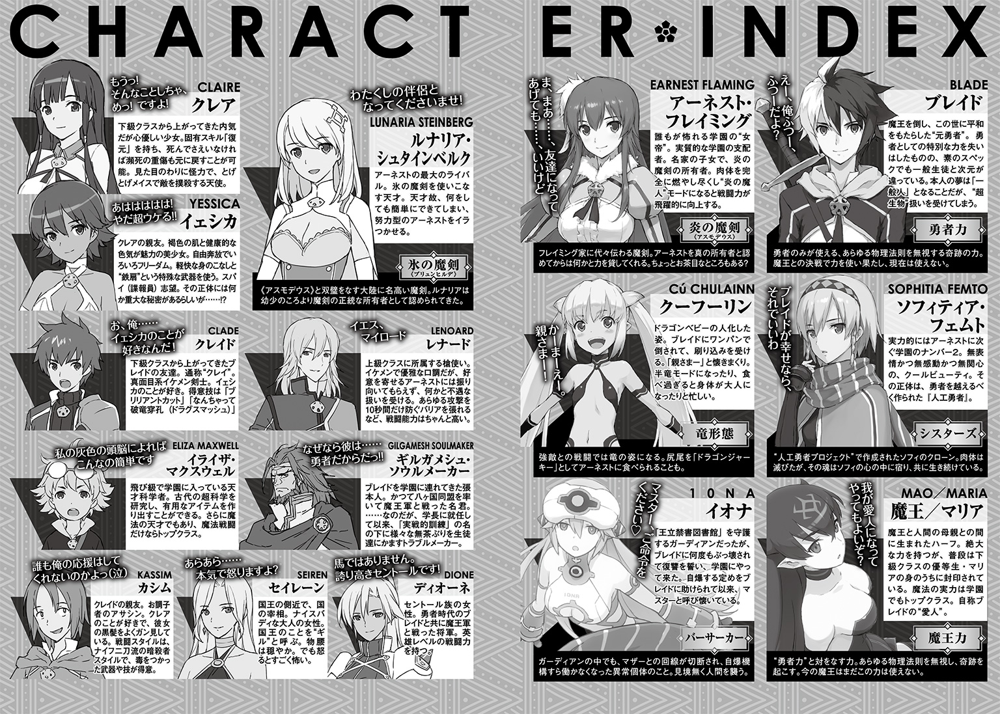

| 英雄教室 8 | |
| 新木伸 | |
この本は縦書きでレイアウトされています。
また、ご覧になる機種により、表示の差が認められることがあります。
ＣＯＮＴＥＮＴＳ
「ローズウッド学園の背伸びざかり」
「続・普通人の生活」
「地下迷宮の魔物狩り」
 ダッシュエックス文庫DIGITAL
ダッシュエックス文庫DIGITAL
英雄教室８
新木 伸

第一章「ローズウッド学園の背伸びざかり」
第一話「アインとツヴァイ」
○ＳＣＥＮＥ・Ⅰ「親さまと遊ぶ」
とある日。とある夕方。とある王国の、とある上空。
ひゅ～るるる～、と、風切り音を発しながら、ブレイドはぐんぐんと落下していた。
雲を一個二個、突っ切って、どんどん高度を落としてゆく。
「おーい！」
上のほうで、きゃっきゃうふふと、遊んでいる我が子たちに声を掛けるが、ぜんぜん、気づいちゃくれねえ。クーとアインとツヴァイの三匹で、空中戦をやっている。
このまま落ちると、大事には至らないものの、ちょっと――かなり、痛いことになる。
なにやら自由落下というものは、時速二〇〇キロぐらいで終端するそうで、どんなに高い場所から落ちたとしても、その最大衝撃値は、せいぜい、時速二〇〇キロで石壁と激突する程度。
つまり痛さ的にも、最大で――その程度。
気をしっかり保ってさえいれば、どうということはない。
が、しかし――。
「やっぱ、痛いのはいやだなぁ」
そうつぶやいて、着地（激突？）の衝撃に備えて、気を練りはじめたところで――。
「ブレイド！」
赤い影が、ブレイドに並んだ。ツヴァイに乗ったアーネストが、手を差し伸べてくる。
ブレイドはその手を取った。途端に急上昇。ぐいと引かれる。地面すれすれをかすめて、ブレイドの足先ぐらいは、実際にちょっとかすって――。ツヴァイは上昇していった。
「よいしょ――おっと！」
引き上げられて、アーネストの後ろに座る。
「へんなとこ、触らないでよ？」
へんなとこって、どこのこと？ このへんか？
「ちょ――!? どこ！ どこ握ってんの！ 腹の肉を摑むなーっ！」
反応からすると、正解だったらしい。うん。よし。覚えたぞ。「女の子」の「へんなとこ」とは、腹の肉のことだ。またひとつ。〝常識力〟を手に入れた。
アーネストとブレイドの二人を乗せたツヴァイが、ばっさばっさと羽ばたいて、いちど失った高度を再び稼ぐ。
アインとクーが戦っている高さに戻ってきた。
「ダッシャーッ！」
クーがドロップキックを決めた。めっちゃ助走をつけた、音速キックだ。
アインは姉弟のうちでどちらかというと根性がない。ツヴァイなら耐えてたところを、一発で半ベソだ。
そして勝負が決した。
「お姉ちゃんに勝つにはー、百万年はやいのだー！」
クーが勝ちどきをあげている。
今日の我が子たちの「遊び」は、クーが長女の意地を見せて勝利した。
アインとツヴァイがタッグを組むと、ちょっとクー一人では敵わない。そもそも「空」は霊鳥シームルグの領域である。今回は落っこちたブレイドを拾いあげるために、アーネストとツヴァイが戦線離脱していたので、一対一となってしまっていた。
我が子たちの「遊び」は強さがあがるうちに、だんだん派手になってきていた。
飛び交っている技のあれもこれも、どれも一撃で城が崩れるぐらいの威力があるが、この上空でやっていれば、誰の迷惑にもならない。衝撃波は広がるにつれて弱くなるから、地表に届く頃には、せいぜい、木々の葉っぱを落とす程度。
以前はちょっと郊外に行って遊んで、あとで池になる程度の大きな穴をこしらえてくるぐらいだったが、最近は地表じゃ危なっかしくて遊ばせられない。
週にいっぺん、ブレイドと、アーネストやルナリアだのといった実力者が付き添って騎乗して、三匹を、思いっきり遊ばせてやることにしていた。
アインとツヴァイ――双子の二匹のうち、姉のほうがアインで、弟のほうがツヴァイである。
根性なしで要領のいいほうがアインで、不器用で根性入ってるほうがツヴァイともいう。
アインのほうは、よくブレイドを乗せたがる。よってツヴァイのほうに、アーネストやルナリアが騎乗している。
「さー、そろそろ帰るぞー」
ブレイドは、言った。
「まだ、お日様、出てるのじゃー」
クーが地平線をさして抗議してくる。
まだ遊びたい気持ちはわからないでもない。だがもう時間だ。
上空から見ていると太陽は高く見える。地表は夕焼けなのに、上空はまだ四時頃ぐらいに思えたりする。それに王都はここからだと、太陽とは逆方向だ。地面は丸い。よってここよりもっと日が暮れていることになる。
......と、このへんを説明してやっても、魔獣の三匹に理解できるはずもない。「地面が丸い」という概念は、アーネストだって理解できるかどうか。まあブレイドも自分の目で実際に見るまでは信じなかったわけだが......。ガッコでやってる地理の授業では、地面は「平面」とされている。なに教えてんだよ、とか思う。
「遊びたい！ 遊びたい！ 遊びたいのじゃーっ！ なーっ！ アインもツヴァイも！ そうであろーっ!?」
「ぎゃあ！ ぎゃあ！」
よってブレイドは――。
「だめだ。帰るぞ」
厳しく言った。
「だって！ だってだってだって！」
でた。〝だって〟――が、はじまった。
クーはぐるぐると腕を振り回す。アインとツヴァイは、ばっさばっさと翼を振って抗議をする。
ブレイドはちょっとビビっていた。
最近、うちの子たちが、素直じゃない......。
反抗期？ とかいうやつが、来てしまったのかも......？
「き......！ ききわけのない子は......！ お、親さま......！ き、きらいだぞっ！」
ブレイドが大声でそう言うと――。
「親さまひどいのじゃー！ ひどいのじゃー！」
「ぎゃあ！ ぎゃあ！」
「あう。あうあうっ」
ブレイドは親さまとしてパニックになっていた。
「はいはい。クーちゃんもアインもツヴァイも――。お城まで競争よー。いちばん速いのは、さぁて、誰なのかしらー？」
ぱんぱんと手を叩いて、アーネストが言う。学園の生徒を率いるときの、手慣れた感じで、三匹に言う。
「競争なのじゃー！」
「ぎゃあ！ ぎゃあ！」
クーは、すっ飛んでいった。アインとツヴァイもその後を追って、猛然とスピードを上げる。
並んで飛ぶ姉弟の背に、それぞれ乗りながら、ブレイドはアーネストと視線を交わし合った。
「なぁに？」
風になびく髪を押さえながら、アーネストが言う。
「いや。なんか操縦......、うまいな、って......」
「クーちゃんたちの？」
「うん。そう」
ブレイドは、こくんと、うなずいた。
自分が言ったときにはダダをこねまくっていたのに、アーネストが言ったら、一発だ。
なんだか「お母さん」みたいだ。「お母さん」がどんなんか、よく、しらんのだけど。
「ブレイドの操縦よりも、ぜんぜん、楽よ？」
ええっ！ 俺操縦されてたの!? いつ!? どんなふうに!?
「はいっ！ ツヴァイ！ もっと速く飛んで！」
「ちょ!? ちょ――!? 教えろって！ 教えろよ！ 待てー！」
「あははは！ 追いついてごらんなさーい！」
ブレイドたちは王都に向かって飛翔した。
○ＳＣＥＮＥ・Ⅱ「ばいばーい」
「ばいばーい！」
上空に向けて、クーがぶんぶんと手を振る。
旋回する二匹は、「ぎゃあぎゃあ！」と大騒ぎ。人語でいえば「帰りたくなーい！」というあたりか。
今日は特に騒いでいる。王都まで飛んでくるあいだは、アーネストの「競争」でごまかせていたが、すぐそこの巣がある尖塔まで帰るのに、またぎゃあぎゃあと、ダダをこねている。
シームルグの親鳥が高空を旋回している。あっちの親も大変だなぁ。
「アインもツヴァイも、人になれれば、ずっと居られるのにのぅ～」
クーがぼやく。その頭を、ブレイドはぐりんぐりんと撫でてやった。
「それは無理だって。おまえが人になれるのが、異質なんだから」
「ママさまも、人になれるのじゃ～？」
「おまえとママぐらいなもんだろ」
勇者業界でも、人になれる魔獣なんて、あんま聞かない。
魔王の種族の夜魔族みたいに、はじめから半人だったりするなら別だが。あれなんて人間と混血可能なぐらい人っぽい。マリア＆魔王は実際にハーフだしな。
「頑張れば～、アインとツヴァイだって～、なれると思うのじゃ～？」
「いや無理だし」
馬鹿なこと言ってる我が子の頭を、ぐりんぐりん撫でる。
「ほら。ばいばいしろ」
「ばいばーい！」
ブレイドたちは手を振った。
◇
「ぎゃあ。ぎゃあ」
「ぎゃあ」
アインとツヴァイたちは、名残惜しげに飛んでいた。
そして、いま言われたことの意味を、考えていた。まだ人語を理解していない、と、思われているようだが......。二匹はきちんと、言葉を理解する知性を得ていた。
「ぎゃあ。ぎゃあ」（クーお姉ちゃん。頑張れば、人間になれるって言ってたねー）
「ぎゃあ」（うん）
「ぎゃあ。ぎゃあ」（がんばるー？ なってみるー？）
「ぎゃあ」（なろう）
二匹は結論を得た。そして二匹は――頑張った。
○ＳＣＥＮＥ・Ⅲ「いつもの朝食」
いつもの食堂。いつもの朝食。
おはよー、と、朝の挨拶が交わされるなか。
いつものテーブルで、ブレイドが、いつもの朝食を楽しんでいると――。
「ブレイド？ また朝から、カツカレー？」
「言った！ おまえは言った！ 俺がカツカレーを食うことを批判した！」
「またはじまった。ねえ？ 誰かこれ、どうにかしてくれない？」
アーネストは投げやりに、皆に話題をスルーした。......ひどい。
ブレイドがカツカレーを食っていると、アーネストはいつも、「またカツカレー？」と言ってくるのだ。だからブレイドは、言ってやることにしているのだ。いくら好物だからといって、毎回毎回、カツカレーばかり食っているわけではないし。もし仮にそうだったのだとしても、それがアーネストとなんの関係があろうか。
いいや。ない。
あえて言おう。自分にはカツカレーを食う権利があるのだと。
ブレイドが決意に拳を握りしめ、ぷるぷると打ち震えて......、そしてまわりを見回してみれば――。誰一人として、こちらに関心など払ってもいなかった。
ソフィだけが、一人、まじまじと、こちらを見つめているだけだった。
「ブレイド。甘えんぼさん。する？」
「しない」
ブレイドはそう言った。
労られてしまった。ちなみに「甘えんぼさん」というのは、胸に抱きしめられて、撫で撫でされることである。胸というよりもおっぱいだが。
「しない」というのは、けっしてソフィのおっぱいが足りないという意味ではなく、アーネストがひどい、という、それだけの理由で、ソフィのおっぱいに甘えにいってはならないと、男の子的に、そう思うからだった。
最近、ブレイドは、自分が成長してきたと思う。「男の子」「女の子」的な考えができている。以前は男女の見分けもつかなかったのに――。いまではなぜ見分けができなかったのか、もうわからなくなっているくらいだ。
「おはよー！」
と、うちのガッコ一の明るくてカッコいい女子、イェシカが、うちのガッコ一の黒髪女子のクレアと一緒に食堂に入ってきた。
二人は子供を連れていた。
「どしたん？ その子？ 二人の子？」
ブレイドが、そう口走った瞬間――十メートルはあった間合いを、クレアが瞬歩で詰めてきて、ブレイドの頭を上から下へとぶっ叩いてきた。
「ちがいます！ 冗談でもやめてくださいブレイドくん！ ぶちますよ！」
ぶってるじゃん......？
クレアは最近ますます怪力に磨きがかかってきた。巨人化したときの出力が、等身大サイズでも出ている感じ。
いまの一撃、常人なら死んでたと思うよ。ドラゴンベビーだって一撃で躾けられると思うよ。
「この子たち、グラウンドで遊んでいたんだけど。誰かの子？」
イェシカが言う。左右両方の手のそれぞれを、子供に握られている。
子供は女の子と男の子。姉弟のようだ。
おー、ほら。見分けできてるじゃーん。俺。普通じゃーん。
ブレイドは自分の普通力に対して、さらに自信を持った。
問いかけられた皆は、一斉に、首をぶんぶんと横に振りたくっていた。
「あー、そういう意味じゃなくてぇ。......誰かの知り合いの子？」
イェシカが言う。
皆が、うーんと首をひねる。
知り合いの子でもないらしい。なら、なんで学内に迷いこんできたのだろうか。
二人の姉弟は、同一人物の男版、女版、ぐらいに、よく似ていた。
やや色の濃い肌。いかにもすばしっこそうな感じ。二人とも、その目を好奇心に輝かせて、食堂のあちこちを「うわー」という顔で眺めているが、それでもチラチラと、ブレイドのほうに目線を送ってきては、姉弟ふたりでこしょこしょと内緒話をしている。なにを話しているのかは、勇者イヤーでも聞き取れない。高周波で人間の耳では無理っぽい。
二人が身に帯びている服は布地が少なめで、クーみたいに肌の露出が多い。
ぱっと見では熱砂地方の民族衣装に見えないこともない。その衣類に見えるそれは、じつは布ではなくて――。
......ん？
ブレイドは、ふと気がついた。
きょろきょろとまわりを見まわすと、誰も気づいたものは、いないっぽい？
「ねー。ボクたち？ ――おとうさんと、おかあさん、どこ？」
イェシカが腰をかがめて、二人に聞く。
「うえよー！」「うえなのー！」
二人で両手をバンザーイとあげる。
「......上？」
皆で上を見る。天井しかない。
「もひとりいるわー！」「もひとりいるのー！」
二人は完璧にシンクロした同じ動作で、ずびし、と、ブレイドを指さした。
「え？ ブレイドくん？」
皆がブレイドを見ている。やっぱ――皆は、気づいていないっぽい。
「もー、おまえら、しょうがないなー。......ほら、こいこーい」
ブレイドは腕を広げて、二人を誘った。
「うわーい！」「うわーい！」
二人は飛び込んできた。わずか数メートルだが空気をかいて突進。
ブレイドは、まー、どうせこーなるんだろうなー、とか思っていたので、気を練って足腰を、大地と――惑星と連結しておいた。
ずどおおおおん......と、魔槍将軍ディオーネの突進でも受け止めたような地響きが起きる。
ぱらぱらと、天井から埃だか破片だかが、舞い落ちてくる。
「パパー！」「パパー！」
パパ？
まー、親なんだから、パパになるのかー。しかし言葉たくさん覚えてるなー。すごいなー。
ブレイドが感心して、二人の頭を同時に撫で撫でしてやっていると――。
「......ブレイド。説明してくれる？」
怖い顔をしたアーネストが、睨んできていた。
「いまのは足の裏から衝撃を逃がす技で。気の練り具合にもよるけど、山、一個分ぐらいまでなら受け止められ――」
「突進止めたのだとか――！ そんなことで！ もういちいち驚かないわよ！」
あれ？ そっちじゃないのか。じゃあ、なにを説明しろと？ アーネストは、いったいなにに対して、ぷんすかしているのだろう？
「ブレイドくーん......、隠し子がいたんだー。......ステキー」
「か......隠し子っ!? いいいいい!? イェシカ!? それって、どどど、どういう意味っ!?」
「え？ だって見ての通りでしょう？」
イェシカが頭の後ろで気楽そうに手を組んで――。クレアが手の甲を反らせて髪の毛先を跳ねさせている。
「パパー」「パパー」
二匹が腰にすがりついてくる。こんな人間風のスキンシップもはじめてなんだろうし。ブレイドは、よしよしと、頭の毛をかきまわしてやった。
髪の毛の合間に、羽毛みたいな羽がまじっている。
「まさか。もう仔をこしらえていたとはな。我々は後れを取ったようだぞ」
「おい。魔王」
なに言ってんの？ おまえが気づいていないはず。ないだろ。
「ブレイド。......暴れる前に、ひとつ、聞いていい？」
「ブレイド様。......わたくしも、暴れる前に、ひとつ、聞いていいですか？」
うちのガッコの赤い女帝と白い女帝が、二人して、似たようなことをつぶやいている。
なんで暴れる前提になってんの？ おまえら二匹が本気で〝３〟だの〝４〟だの〝５〟だのになって暴れたら、王都、壊滅しちゃわなくね？ 自分らの怪獣具合を、ちょっと、認識しておこーよ？
ん？ 〝５〟はまだだっけ。でもどのみち、もうすぐだろうけど。
「なんで暴れるんだよ？」
なんかブチ切れ寸前になってる二人が、ブチ切れるまでに発せる言葉は、あとすこしだけだと思ったので、簡潔に、いちばん大きな疑問点だけを聞いてみた。
「ブレイドは......」
「うん？」
「いったい誰と......」
「うん？」
「その子を......、つくったの？」
「ん？ うーん？」
ブレイドは腕組みをして、考えた。
はやく答えないと、二匹の大怪獣の辛抱が切れる。暴れだしちゃう。王都ピンチ。
ブレイドは、素早く答えを導き出した。
「おまえら、全員と......になるかな」
「は？」
アーネストが、口をぽかーんと開いている。
「だって卵を孵せたのは、俺たち全員で頑張った結果じゃん。だったらこの子は、俺たち全員でつくったようなもんだろ？」
「ちょ......、ちょちょ！ 待ってよ！ なに言ってんの！ 私が聞いているのは！ その子のママは誰なのかっていう話で！」
「うーん......。しいて言うなら......。おまえ？」
「わ、わたしぃ!?」
すっとんきょうな声を上げる。
皆が女帝だの「イエス！ マム！」だの慕う相手はアーネストだから、しいていうならアーネストが「ママ」であろう。
「ルナリアは、あの時って？ シームルグ戦のときには――」
「シームルグ戦？ なんでそんなのいま関係あるのよ？」
あれ？ アーネスト。まーだ、わかってないのか？ ほんとにわかってないのか？
「わたくしは、そのとき、まだこの学園にいませんでしたけど？」
「ああ。ルナリアはそうだな」
ブレイドの腰にしがみついている二匹が――特に弟のツヴァイのほうが、アーネストを見て、物欲しげな顔をしている。指先を口に入れている。
ブレイドのつぎに懐いているのが、アーネストだ。よく背中に乗せて飛んでいる。口笛を吹かれれば、嬉しげにどこへでもすっ飛んでゆく。
「ほら。行け」
ブレイドが背中を押してやると――。
「アーママーっ！」
「うおっとおぉぉぉ――っ!?」
アーネストは突進を受け止めた。ずっしーんと、本日二回目の地響きがあがる。
「......あれ？ このにおいって......？ ツヴァイ？」
抱きとめたアーネストは、抱きついてくる男の子の、頭のつむじを、くんくんと嗅いだ。
アーネストがよく騎乗しているのは、ツヴァイのほうだ。
「そだよー！ ボクー！ 人間になったのー！」
「え？ えええっ！」
「あたいー！ アインー！ ルーママー」
アインのほうは、場所がなくて、ルナリアのほうに抱きつきに行った。
女の子を抱きとめて、ルナリアも困惑顔。
「ええっ？ なになに？ アインとツヴァイなの？ なんで人間になってんの!?」
ようやく事態がわかったのか――。皆がぞろぞろと集まってきた。
朝食どころではなくなってしまった。
「クー？ おまえ？ なんかした？」
ブレイドは隣のクーに、そう聞いた。
「我はなにもしてないのじゃー。でも、我は言ってやったのじゃ。頑張れば～、アインとツヴァイだって～、なれるってー」
クーが、えっへんと、胸を張った。
○ＳＣＥＮＥ・Ⅳ「お姉ちゃんの沽券」
「クーちゃん！ こっち！ こっちにもセクシーポーズよろしく！」
「こうか？」
「こっちにも！」
「こうか？」
「こっちにもーっ!!」
「こうかーっ？」
「やめなさい」
そろそろ、くるかなー、と思っていたら、やっぱり、女帝のゲンコツが男子たちに降り注ぐ。
アインとツヴァイが人化して数日の経った――昼時の食堂。
皆の大人気となっていたアインとツヴァイをよそに、クーはここ数日、一人でモリモリ、モリモリ、食べて食べて食べまくっていたと思ったら......。
以前、食い過ぎで、大きく育ちすぎてしまったときのアダルトボディを、クーは取り戻していた。人間でいえば「太る」状態で、魔獣は肉体が育ってしまう。
「どうじゃ？ これで我とアインがおんなじだとか――失礼なことは、言うまいな？」
カシムの首を引っつかんで、空中で揺さぶる。
元凶はカシムにあった。「つるぺた具合がアインとおんなじ」だとか、カシムが言ったものだから、クーの闘志に火がついてしまったのだ。
「どうだー？ わかったかー？ 我のほうがお姉ちゃんなのじゃー！」
首根っこを摑んで、ガクガクブルブル、高速振動させながら振り回す。カシムは奥歯をがたがたと言わせている。常人であれば、その衝撃に体がばらばらになってしまっているところだろうが......。ローズウッド学園の上位クラスは伊達ではない。首の鞭打ち数日ぐらいで済むだろう。
「わ......、わかったから......、その胸で......、し、死なせてくれ......」
「うむ。わかればよいのじゃー。そして、おやすいご用なのじゃー」
アダルトなクーは、カシムの顔を、ぎゅううう、と、その胸にかき抱いた。
カシムは体をぴくぴくさせて、そのうち、ぐったりとなった。死因は窒息だな。
アインとツヴァイの二匹が人化した姿は、肉体年齢でいえば、元のクーぐらいの感じだった。
姿こそ違えど、もともと皆とは友達同士。学校と寮と、どこでも引っぱりだこで、大人気であった。ブレイドのベッドでクーと三匹揃って寝ていたのは、最初の一日しかない。皆の部屋にお呼ばれしていって、外泊を続けている。
「アイン！ ツヴァイ！ お姉ちゃんなのじゃー！」
足を肩幅に開いて、すっくと立って――。
クーは姉の威厳を示した。そそり立つ――というべき豊かなバストを誇って、二人を呼ぶ。
「うわーい！」「わーい！」
腕を広げるクーに、アインとツヴァイ、二匹の姉弟が突進をかます。
ずどーん、と、地響きがして、天井から埃と破片が舞い落ちてくる。
食堂の建物。補強しないと......。これ、そのうち壊れるよね。
「昼の教練は、第二試練場だけど......」
よくくびれた細い腰に、片手をあてて、アーネストが言う。
この子たち。ついてくるわよね。......と、諦め声で言う。
「赤魔狼のおじちゃんもー！」「くるー!?」
アインとツヴァイは声ばかりでなく、動きまでもがシンクロする。常に左右対称の動作となっていて、愛くるしい。
「だめー？」「おねがーい！」
おねがいされると、アーネストは、すぐに、ふにゃふにゃとなってしまった。
「んもー......、しょうがないわねー、じゃあ、赤魔狼おじちゃんも、呼んであげるからー、みんなで一緒に遊びましょうねー」
「うわーい！」「わーい！」
アーネスト。こいつ。だめな親だな。
○ＳＣＥＮＥ・Ⅴ「みんなで修行」
いつもの午後の教練。いつもの第二試練場。
上級下級、総出の教練は、阿鼻叫喚――もとい、和気あいあいのうちに進められていた。
「いっくよー！」「いくよー！」
アインとツヴァイ二匹が、左右対称のシンクロした動作で、そう告げる。
どぎゃん、と、一気に超加速。二匹で螺旋を描きながら、一本の槍と化して突っ込んでゆく。
「赤魔狼！」
アーネストが叫ぶ。赤魔狼を盾に使って、突進を止めた。
ビビって尻込みしてる赤魔狼の背中に、蹴りくれて前に押し出したところも、しっかり見えている。
どっちも正解。盾に使うほうも、ビビってるほうも、どっちも正解。
あんなもん、生身で受けたら、いくらアーネストでも半死半生だ。魔人状態に変身しているなら、いざ知らず――。
「い、いまのは、ち、ちょっと強かったかなー？ も、もっと、ゆっくりやろうねー？ わかる？ アインちゃん？ ツヴァイくーん？」
「わかるー！」「わかったー！」
二匹はまた距離を取って――。
「いっくよー！」「いくよー！」
「ちょ――ちょ！ ほんとにわかった!? わかってる!?」
「こんど、もっとすっごいのー、いっくよー！」「すごいのー、いくよー！」
「ちょ！ ちょちょお――っ!?」
こんどの二匹は、両腕を翼に変えて――さらなる加速で突っ込んできた。
赤魔狼はもう使えない。さっきの一撃を受け止める盾に使われて、ボロボロだ。まだ肉体の再生が間に合っていない。
「レナード！」
アーネストは、レナードの召喚呪文を唱えた。
「イエス、マイロード！」
レナードが立ち塞がった。
ローズウッド学園随一のバリア能力者が、その全出力を、前方にのみ一点集中させる。
「すっごーい！」「バリアが得意なんだねー！」
アインとツヴァイは、喜んでいる。
ひな鳥とはいえ、シームルグは元々霊獣クラス。生まれてずっと一緒にいる二体の動きのシンクロ度合いは、一心同体を超えて、ほとんど一個体という領域。
その力は二倍でなくて、二乗となって四倍だ。
ローズウッド学園の上級者でも、尻込みするようなパワーとスピードだ。
現にアーネストなんかは、尻込みしていて、自分で遊んでやっていない。
使い捨てになった赤魔狼とレナードが、地面に転がって、びくびくとしている。
しかもアーネスト。一顧だにしていない。「ち、使えないやつら」ぐらいの目で、転がる二人を、視野の片隅にとらえているだけ。
「やや。たのしそー、ですなー」
魔槍将軍ディオーネが、かっぽかっぽ、と、蹄を鳴らして、こちらにやってくる。
練習用の槍を携えている。国の将軍であるディオーネは、将軍職やら任務の合間、暇があればこうして皆に稽古をつけてくれている。
「お姉様あぁぁ！ うちのアインとツヴァイがあぁ！ みてみて――ほら、こ～んなに元気なんですうぅぅ！」
アーネストがマッハですがりつきに行った。
もう下僕の盾がないので、次にタックルをくらったら、自分で受け止めるはめになる。
「元気でよろしいですなー」
「遊んでやってくださーい！ ――ほらほら！ アインとツヴァイ！ ディオーネお姉様が遊んでくださるってー！」
ブレイドはここで、ちょっとイタズラ心を起こした。
「おーい！ ディオーネ、ひさしぶりにー、模擬戦、やっかー！」
「やります!!」
遊んでやる話は、どっかにうっちゃっておかれた。ディオーネは尻尾を振って――文字通りの意味で尻尾をぶんぶん振りたくって、ブレイドのところへ、まっしぐら。
「ちょ――!! ブレイド!! なんてことすんの!! ひどいよね!! わざとだよね!! ぜったいわざとやってるよね!!」
うん。わざとだよ。
アーネストはここ最近サボりすぎ。舎弟使いすぎ。すこしは自分の体を張ったほうがいい。
「勇――ブレイド殿に、稽古つけてもらえるとはー！ しあわせですぞー！」
ディオーネは喜んでいる。
稽古というが――。最近のブレイドはパワーダウン著しく、全盛期の四パーセントしか出せない。そろそろ向こうのほうが格上なんじゃないか？
ただ、パワーがここまで下がったおかげで、パワー以外の面の〝技術〟を色々と開発したので......。パワーが同等であれば、まず、誰に対しても負ける気がしない。
おたがいに、まず、一割ぐらいからはじめることにする。
槍と剣とを打ち合わせて、ディオーネと稽古しながら、アーネストのほうにも注意を配る。
「もっかい、いくよー！」「いくよー！」
「待って待って待って！ ちょおぉぉーっと！ 待ってえぇぇ！」
頼みの綱の「お姉様」を失って、アーネストは慌てている。
「アンナ。――手を貸しましょうか？」
「えっ？ ルネ！ ......なんで、貴女が？」
「あら。わたくしが貴女に手を貸すことが、そんなに、おかしいのかしら？」
「うん。すごくおかしい。私が困っているところを、ししししし、って見ているのが、ルネ、貴女でしょう？」
「......貴女がどう思っているのか。よーくわかりました。では助けはいりませんね。しししし、と、見ていることにいたしますわ」
「あー！ 待って待って待って！ せめてどっちか一人！ お願いっ！」
「アイン。ツヴァイ。わたくしと遊ぶのは――、どちら？」
アインとツヴァイの二匹は、顔を見合わせて、えええーっ、とやった。
それに対してルナリアは、ぎりりと奥歯を嚙んでから――。
「どっち!?」
視線コンタクトの末――ツヴァイが、しぶしぶ、前に出た。
毎回毎回、気迫負けするのが弟のほうである。
「ルナリアー、こわいからー、きらーい」
怖いんじゃなくて、厳しいんだけどな。
傍で見ている感じだと、ルナリアのほうが叱るべきときに叱って、いい母親をやっている。
アーネストは甘えさせるだけのダメ親だ。略して駄親だ。
「ほら。いらっしゃい。わるさをしなければ、怒ったりしませんわよ」
「う......、うわーい」
幼児が抱きつくぐらいの感じで――。ツヴァイが抱きつきに行った。
それを受け止めるルナリアは全力。すべての気を筋力強化に回して、それでようやっと、一メートルほどの後退だけで、なんとか、受け止めきった。
「なんか。日に日に、強くなってない？ この子たち」
「このままだと、すぐに、合体しないとあやしてあげられなくなるかもしれませんわね」
「イヤよ。あんたなんかと合体するの」
「わたくしのほうが。もっと遙かにイヤです」
「私のほうがイヤに決まってるでしょ。天才が感染っちゃうわよ。やりたくないのよ」
「わ、た、く、し、のほうが、イヤに決まっています。カタツムリが感染ってしまったら、いったい、どのように責任をとってくださいますの」
「おまえら、仲、いいよなー」
「どこが！」「どこがですの！」
「隙ありー！ ですぞー！」
ものごっつい勢いで突きこまれてきた魔槍を、練習用の安物の剣で弾きながら、ブレイドは、意識の大半をアーネストたちに注いでいた。
ちなみに、いまの一撃はけっこう本気。英雄級のわりと本気の一撃だった。省エネ闘法を身につけていなければ、こんな安物の量産品の魔剣なんかで弾ける一撃ではなかった。
「アーネストー！」「ルナリアー！」「いっくよー！」「いっくよー！」
「ちょ――!? 待って待って待って!?」
「待ちなさい!? 待ちなさい!? お待ちなさいとゆうに!?」
「こんどはもっとスゴイのいくよー！」「ふたりでいくよー！」
「ちょおおおお！ すごいのってなに！ ちょっとやめて！ ママしんじゃう！」
「わ――わたくしはッ！ こんなヘタレの凡人とは違いますわ！ 違うんですけど！ ――でもっ！ やめてやめて！ ダメダメ！ らめえぇぇーっ！」
アーネストとルナリア。学園のトップ２が悲鳴をあげる。
その二人の前に――二人を守るように、雄々しく立ち塞がる巨体があった。
「あんぎゃーす！」《お姉ちゃんが遊んであげるのじゃー》
「おー。クー。おまえ。ドラゴン・フォームでも話せるようになったかー。すごいなー」
「あんぎゃーす！」《当然なのじゃー。我はお姉ちゃんなのじゃー。弟と妹には手本を見せてやらねばならないのじゃー》
竜種の口蓋は人の言葉を話せるようにはできていない。
鳴き声以外を発声するには、魔術的な技術が必要になる。クーの場合には声に闘気を乗せて、テレパシー的な意思伝達を行っているようである。
「お姉ちゃん、すごーい！」「話せるドラゴン、すごーい！」
「あんぎゃーす！」《もっと褒めるとよいのじゃー！》
「お姉ちゃん遊んでくれるのー？」「くれるのー？」
「そ......、そう！ そうそう！ お、お姉ちゃんに遊んでもらいなさい！」
「そ、そうですわ！ 姉弟愛！ 素敵ですわ！ 全力で応援いたしますことよ！」
アーネストもルナリアも必死だった。
これ以上、アインとツヴァイと遊んでいると、魔人化ないしは二人で融合する必要が出てくる。それは二人にとって、なんとしても避けたいところだろう。
「お姉ちゃーん！」「いっくよー！」
「あんぎゃーす！」《どんとこーい！》
アインとツヴァイ――二匹は、半分変身して、半獣化して突っこんできた。肩から先を翼に変えて、空気をかいて突進する。二匹の軌跡が、螺旋を描く。片方が精霊力、片方が闘気を放出して、二匹両方で、闘気と精霊力の超螺旋と化す。
クーは――、受け止めた。
ここ最近、食いまくって、豊満なアダルトボディになるほどのパワーアップを果たしている。そのおかげだ。
「お姉ちゃん！ すごーい！」「すごいすごーい！」
「あんぎゃーす！」《わーははは！ お姉ちゃんはすごいのだー！》
どったん。ばったん。取っ組みあいが起こる。アインとツヴァイ、二匹とも、徐々に人の姿を失って、霊鳥の姿に戻っていった。もともと〝遊んでもらう〟ために、人化したわけだ。そして竜種の〝本気〟と遊ぶために、本来の姿に戻ったわけだ。クーもアインとツヴァイも、魔獣であるからして、より力を出せる形態というのは、本来の姿のほうになる。
「あんぎゃーす！」《わーははは！ わーははははは！》
「ぎゃあ」「ぎゃあ」《おねーちゃん！ すごーい》《たーのしーい！》
怪獣大激突は、午後の教練の時間を余裕で突破して、日暮れまで続いた。
○ＳＣＥＮＥ・Ⅵ「平穏な日々」
いつもの昼どき。いつもの食堂。
カツカレーの皿を持って、ブレイドはアーネストとルナリアの向かいに座った。
「アインとツヴァイがいないと、静かよねえ......」
頰杖をついて、アーネストが言う。
手にしたフォークで、サラダをぐりぐりといじめている。
「はぁ......。子供を持つって......、あんな気分でしたのかしら？」
こちらもため息。ルナリアは、ちら、と、ブレイドに流し目をくれて――。
「ブレイド様？ 子供を持ちたい――と、そう思われたことは？」
「ん？」
ブレイドはスプーンをくわえて、顔を向けた。
「――持ってるじゃん？」
スプーンの先で、一、二、三――と、数えてゆく。
一はクー。二と三は、食堂の外の中庭で、翼を広げて日光浴してる、アインとツヴァイ。
二匹は霊鳥の姿に戻ってしまった。そして再び人化することができなくなってしまった。
もともと、どうやって人化したのかも、本人たちでさえ、よくわかっていなかったらしい。「がんばったら、なれたのー」「なれたよー？」とかいう感じ。
まあ人化しているときの二人は、人型災害みたいなものなので、元の姿のほうがよいのかもしれない。
二匹が人化した理由は、「遊んでもらいたかったから」なので、理由が消えたいまは人化する必要もない。このあいだ、たっぷりと皆に遊んでもらったおかげで、最近は落ちついている。
男子も女子も、残念がっている人間が多数いる。ブレイドには、男女の区別以外、よくわからないのだが......？ どうも二匹の人化していたときの外見は、大変に、愛くるしいものだったらしい。
「ブレイド様。いつでも協力しますので――。御用向きの際には、ぜひ、お申し付けください」
「うん......？」
にっこりと微笑んでルナリアが言う。
ああ。子供欲しいとかいう話か。だが意味がわからん。
なぜルナリアに言うと、子供が増えるのだ？ どうやって増やすんだ？
机の下で、アーネストが、げしげしげし、と、隣のルナリアに蹴りをくれていた。これも、よくわからん。まあ二人はだいたいいつでも、張りあっていがみ合っているけど。それが二人の〝仲のよさ〟ってやつだけど。
《ママたち、仲いいねー》《ねーっ！》
窓の外の中庭でアインとツヴァイが、翼をぱたぱたやって、そんな話をしている。
二匹が鳥の姿でも落ちついている理由――。それは「人語を覚えた」ということだった。正確には、闘気の振動で音声周波数を伝達させる技を覚えた。闘気を扱えるか、感知することのできる以上の実力を持った人間であれば、会話が可能だ。つまり、この学園の全員だ。
アインとツヴァイ――二人が人化することは、この先、ないのかもしれない。あるのかもしれない。
まあ、どっちでもいいわなー。
うららかな昼の中庭を眺めながら、ブレイドは、好物のカツカレーを、食べた。ぱくぱくと食べた。
うん。カツカレー！ サイコー！ この料理考えたやつ！ 天才！
第二話「皇帝カシム」
○ＳＣＥＮＥ・Ⅰ「とある突発的な授業参観」
いつもの食堂。いつもの昼飯どき。
皆で列に並んで、わいわい、がやがや、ビュッフェ形式の料理を自分の皿に山盛りにしていると......。
「たのむ！ 一生のお願いだ！」
カシムが、なんでか、土下座をしていた。誰に――というわけでなく、皆に対して、全員に。
アーネストが眉根を寄せて、カシムを見下ろす。
「ぱんつなら、見せないわよ？」
「そうじゃない！」
つぎにクレアが、心配する顔をカシムに下ろす。
「あのねカシム......、そういうの、最低だと思うよ？」
「だからちがうって！」
イオナが見下ろしながら、カシムに言う。
「女性の着用中の下着を見ることにどんな概念的な意味があるのかハイスペックな私は理解できますが、布が一枚覆っているだけというのが必要要件であるならば、私のレオタードは代替物とはならないでしょうか。しかしなんでしょう。私のポジトロン陽電子頭脳にひどくノイズが走るのですが」
「イオナちゃん。それって〝不快感〟って感情だと思う」
「では平伏するこの頭蓋を踏み潰してよいでしょうか。クレア。後で直してもらえますか」
「だから違うって！」
イェシカが土下座状態のカシムの脇にしゃがみこむ。
ミートボールをひょいぱくと口に放りこんで食事しながら、ひどく気軽な感じに言う。
「まーまーまー、みんな、カシムがこれだけ男を見せたわけだしー。あたし。見せたげよっか？ べつにいいよー、減るもんじゃなし」
「いいのか！ ――じゃなくて！ だからそーゆーのじゃないんだってば！」
「なーなー、違うって言ってるぞー」
「ブレイドは黙ってて。さすがにちょっとこれはないわー。どういう極刑に処するのが適切か。いま考えているところなんだから」
「だから違うって言ってるだろ！ ぱんつなんか――見たいけど！ そっちじゃないんだってば！ いま、俺が頼んでいるのは――!!」
「だからほら、違うって言ってるぞー？」
たぶん、唯一、この場で気がついているであろうブレイドは、皆に向けてそう言った。
「なあ！ ブレイド！ おまえはわかってくれてるよな!? みんなに言ってやってくれ！ 俺はそんなこと頼んでいるんじゃないって！」
みなに遅れてソフィが答える。
「それは命令？」
「おいカシム。いいかげんにしろよ。ぱんつとか。ソフィが本気にしちゃっただろ」
「おまえまで！ おまえまで！」
アーネストが腕組みをして鼻息を吹き出した。
「――もうっ。セクハラなお願いじゃなかったら、なんなのよ？ カシムが土下座してまでお願いすることって、セクハラ以外で、なんなの？」
「オレって......、そこまで......」
「あーもう、こいつ、メンドくさい」
「アーネスト。もうすこし聞いてやれよ。――けどな。カシム。最初に言っておくが。カツカレーなら、やらないぞ。列に並んで、ちゃんとオバちゃんに盛ってもらえ」
「いらねえよ。そんなもん」
「そ......、そうなんだ」
「ねえブレイド。そこ。へこむところ？」
しっちゃかめっちゃかの状況に、クレイが見かねて、言葉を挟んでくる。
「おばさんが――、来るんだろ？ カシム」
「そう！ そうなんだよ！ そう！」
「だれ？ おばさん？ ......の、ぱんつ？」
アーネストが、心底、見下げ果てた顔をする。
「ぱんつから離れろ！ うちのカアちゃんだよ！ カアちゃんが来るんだ」
女子一同が、うっわぁ......、と、物凄く嫌な顔になった。
「もー！ こいつら！ どうにかしろよ！」
「あー、みんな。誤解だって。カシムのお母さんはたしかに若くて美人だけど。ぱんつは関係なくて――クレアは会ったことあっただろ？」
「え？ あっ......、一度だけ」
クレイに聞かれると、クレアはこくんと首を折ってうなずいた。
「そのお母さんが。こんど。ここに来るんだって。息子がガッコでどうしているか、見てみたいって」
「授業参観？ ......ふぅん。まあ。いいんじゃないの。それがなんで土下座に繫がるのよ？」
アーネストが言う。ブレイドは、ぎゅんっと顔を向けた。
「なになに？ なにそれ？ ジュギョーサンカン？ それってなに？ なんかフツーっぽいぞ？ 俺にもできる？ できるできる？」
「あー......、ブレイドにはー......、無理かもー......」
アーネストは気まずそうに言う。
「授業参観って......、ほらっ......、親が来るってやつだから......」
「あ......。親」
「ブレイドだと......、親代わりって、ほら、国王陛下になるしぃ」
「断じてご免だ！ 死んでも断る！」
「でしょ？」
アーネストはカシムに向かった。
「べつに土下座なんかしなくたって。授業参観なら許可します。あとで国王陛下のところにも行ってきて、そっちにも言ってらっしゃい」
アーネストは許可を出した。国王の許可のほうも〝ついで〟に取ってこいと言っている。
おい。不敬はどうした？
「違うんだ。そういうことじゃないんだ。......おいクレイ。助けてくれよ。説明してくれよ」
「自分で言えよ」
「頼むよおお。......オレ、あんなことみんなに言ったらコロされちまうよおお」
カシムはクレイの足にすがりつく。
亡者に縋りつかれて、引きずりこまれたクレイは、しぶしぶ口を開いて、カシムのかわりに説明をはじめる。
カシムは正座。土下座は終えたが、そのまんま、食堂の硬い床の上に正座。
「......カシムのやつ。しょっちゅう実家に手紙書いているんだ」
「あら。感心ね。私もやってるわよ。オウル使って、実家と手紙のやりとりしてるわよ」
アーネストの部屋には、たまにフクロウがやってくる。ルナリアからは貧乏貴族と揶揄されるが、アーネストもいちおうは貴族の端くれ。実家とのパーソナル伝書ラインを持っている。
「あいつのお母さんは、カシムがちゃんとやれてるか心配していてね」
「そりゃ心配よね。私がカシムの母親――なんて、絶対死んでもご免だけど、もしそうだったら、そりゃ、すっごく心配よ。あのバカな子。ちゃんとやってるかしら。女の子のスカートめくって迷惑かけてないかしら。......って」
アーネストは言う。
素で容赦のないことをビシバシと言う。正座をしているカシムが、どんどんと小さくなってゆく。
「それでカシムのやつ。おばさんを安心させるために、噓を書くようになっちゃってさ」
「噓？ ああ......、ま、まあ、ちょっとくらいは、書くわよね」
視線を泳がせたアーネストに、ルナリアが、にっこりと微笑みながら――。
「〝親愛なるお父様お母様。アーネストは日々精進に励み、フレイミング家の家訓を守って、節制に励んでおります〟――とか、お菓子ぼりぼり貪り食いながら書いてみたり、ですわね」
「なんで知ってるのよ！ なんでお菓子のことまで見てるのよ！ ――人の手紙！ 盗み見ないでよ！ やめてよ信じらんない！」
「見てもいないし読んでもおりません。推測をしたまでですわ。――わたくし。天才ですので」
「それで、その、おばさんに出した手紙っていうのが――」
「スルー!? クレイ、いまの話題!? スルーっ!?」
「......話していいのかな？」
「いいですけど」
アーネストはしぶしぶと、うなずいた。
ブレイドはワクワクしながら見ていた。おもろい。クレイ。もっとやれ。
「はじめは小さな噓だったんだ。〝オレ。授業で褒められたぜ！〟――みたいな」
「カワイイものよね。――ああべつにカシムがカワイイって意味では、ぜんぜんないから。そこは誤解しないでね」
「いちど噓つくと、どんどんエスカレートしてゆくもんだろ？ そのうちに、〝成績が一番だったぜ〟ってなっていったり......」
「クレイ。詳しすぎるわよ？ 手紙、盗み見でもしてるの？」
「こいつ書くとき口に出す癖があるんだ。俺。同室だから」
「カシムって......」
「そのうちに、〝やったぜオレ！ 学園トップのアーネスト・フレイミングを試合で倒したぜ！〟――ってなったり」
「ちょ――!?」
アーネストが絶句する。
「〝おしりぺんぺんで許してやったぜ！〟とも、書いてたなぁ......」
「お、おしり......」
カシムは再び土下座の構え。微動だにしない。
「ま、まあ......、ふ、フィクションと思えば......。カ、カシムも......、だ、だからそうして......、土下座しているんでしょ......、ふ、ふふふふふ......。とっちめるくらいで許してあげないことも、なくってよ？」
アーネストは「ふふふふふ」と笑いが止まらなくなった。
「アーネストだけじゃなくて。皆のことも色々と書いてあってさ......」
皆が、ぐえっ、という顔をする。
「俺は俺は、俺はー？」
ブレイドは自分の顔を指差した。どんなフィクションになっていたのか、ぜひ、知りたい！
「ブレイドは......、〝オレの舎弟。カバン持ち〟」
「やったー！」
カシムのフィクションに登場していた！ やった！ 舎弟だ！ カバン持たせてもらえる！
「すまん！ 本当にすまん！ あとでいくらでも謝る！ 皆の気が済まないというなら罰は受ける！ だからオレの噓につきあってくれ！ オレ！ カアちゃんをがっかりさせたくないんだ！ 自慢の一人息子でいたいんだ！」
「ちょ――カシム！ そんなこと言われたってね！」
「すまん！ 本当にすまん！ この通りだ！ 一日でいいんだ！ オレを皇帝にさせてくれええぇぇっ！」
「ちょ！ ちょちょ!? こ――皇帝っ!?」
「最後に送った手紙で、〝オレ！ ローズウッド学園の皇帝になったから！〟――と」
「ちょっと待ちなさい！ まずはきちんと手紙を送り直して、噓を告白して、誤解を解くのが先でしょう!? ――そのお母さんって、いつ来るのよ！」
「あと三分」
「うえええええっ！」
アーネストが目をぐるぐるとさせていた。
おもろい。カシム。もっとやれ。
「校門を抜けて、こちらに歩いてくる人物が対人センサーに捉えられております。三十代の女性である確率九七％。――到着まで、あと一一三秒」
イオナが言う。
皆が騒然となった。具体的にはパニックとなった。
○ＳＣＥＮＥ・Ⅱ「母。来襲」
「えー、お、お母様......、本日はお日柄もよくー、授業参観にお越しいただきまして、当学園の主席である私――」
心の準備もできないうちの〝本番〟に、アーネストが、しどろもどろに挨拶をする。
「元、だろ」
アーネストの間違いを、皇帝カシムが正す。
「なにしろ、いまの皇帝は......！ オレ！ ――だからなっ！」
カシムは髪をふぁさっとかきあげて、ポーズを決めた。
「あらー、まあまあ......、すごいのね、カシムちゃん」
三十代後半と思われる女性は、口許に手をあてて感心した顔。
着ている服は上等なもので、身なりも育ちもいい感じ。思っていたよりも若く、カシムと並ぶと、母と息子というよりは、姉と弟という感じに見える。
「こいつ。まえは女帝って言われてたんだぜー。オレがやっつけて、お尻ペンペンしてやって、立場をわからせてやったけどなっ！」
「こ？ こいつ......？ お？ お尻ぺんぺん......？」
アーネストがぷるぷると身を震わせている。
「そ！ こーゆーふーにっ！」
カシムはアーネストのお尻を、ぺーんぺーん、と叩いた。
「............」
アーネストはこめかみに血管を浮き上がらせていた。わなわなと震えている。早くも、もう限界点だった。
クレイがそっと近づいて、耳打ちしにゆく。
「おばさん。いつもは野菜売り場でパートで働いているんだ。苦労した人でさ。カシムを女手一つで育てあげてさ。この学校に入れば学費免除になるじゃん？ カシムと俺とで頑張ってこの学校に入ったんだ。カシムもおばさんの負担を減らそうと......。ほら。おばさんのあの服。カシムに恥をかかせないように、今日のために頑張って買ったんだと思うんだ」
おー。おー。おー。
ブレイドは理解した。なんか良いとこの奥さんに見えていた。でもカシムは庶民出身のはず。なにか変だと思っていたのだ。あーゆーの、一張羅、ってゆーんだよなっ！
普通力のみなぎるブレイドは、当然、知っていた。
クレイの囁きによって、アーネストは正気をぎりぎり保っていた。にっこりと花のような笑みを、母親に振り向ける。
「皇帝には、いつもお世話になっておりますわ。武技においても勉学においても、また人としての振る舞いにおいても、ご指導ご鞭撻を賜っております」
「なぁ？ カアちゃん、言った通りだったろう？」
「ごめんなさいね。お母さん心配だったのよ。カシムちゃんが落ちこぼれているんじゃないかって。そうでなくてもジュニアスクールのときみたいに、女の子のスカートめくったりスカートの中覗いたりして、嫌われ者になっているんじゃないかって......」
「は......、ははは、カアちゃん......、そんな心配、いらないって......、そんなの卒業したから......、は、ははは......、なぁ、みんな？」
カシムが皆に問う。
じとー、と、いう目がカシムに注がれる。
「そ、そんなの昔の、子供の頃の話だろっ？ お、男の子の通過儀礼みたいなもんだし......、いまは、そんなの......、したくたって、しないから」
したいんだ。
皆のジト目度合いが、さらに引き上がる。女子の一部はスカートの裾を押さえて後じさる。
ブレイドには――よくわかんなかった。
スカートめくりって、なんだろう？ 男の子の通過儀礼？
やべっ！ 俺やってきてないぞー？ どうしようどうする!?
「やだなぁ。カアちゃん！ とりあえず。飯食おう。なに食う？ ここは好きなもん、なんでも食べていいんだぜー？」
姉みたいな若い母親の背中を押して、カシムは場所を移動した。
皆で席について昼食を再開する。お母様も長テーブルの真ん中、カシムの隣に座った。お母様は細い体で、意外とたくさん食べるらしい。ランチプレートにけっこう盛っている。
「カアちゃん。貧乏まる出しだからやめてくれよ。オレ恥ずかしいよ。そんな食えない量、取るなよ」
「だいじょうぶ。お持ち帰りのタッパー持ってきてあるから」
お母様はお持ち帰りをするようである。なるほど。あったま、いー。
「だけど本当に安心したわ。カシムちゃんに、こんなにお友達がいるなんて......」
「あったりまえだろ！ なんたってオレは皇帝だからなっ！ 皆がオレに恐怖し！ そして崇拝するんだ！ だけどオレは寛大だからな」
恐怖していたら一緒に食事はしていないと思うが。そのへんの細かい部分は、誰か訂正しなくていいのだろうか......？
ブレイドは周囲を見たが、皆はなにかを我慢する顔。作り笑顔を浮かべるのに精一杯っぽい。
そういった細かいところなんか、いま、どうでもいいらしい。
「ねえ。皆さんに、聞いていいかしら？」
「ええ。なんでもどうぞ。お母さま」
「カシムちゃんの彼女は、どなたなのかしらー？」
「ぶっファアアぁぁぁーっ!!」
アーネストに限らず、数名の女子が、口の中のものを噴出させた。
なになに？ なんで同時噴水してんの？
〝カノジョ〟って、それなに？ どーゆー意味？
「お、お、お、お母さま......!? な、な、な、なにを言われて......!?」
「だってカシムちゃんのお手紙にあったのよー？ 彼女ができた、って――」
「――あははは!! やだなぁカアちゃん！ なに言ってんだよ！ そんなこと言ってないだろ」
「あなた？」
お母様は、アーネストに顔を向けた。
アーネストは、なぜかちらりと、ブレイドの顔を見てから、ぶんぶんぶんぶん、と、首と髪の毛を横に振りたくった。
「じゃあ、あなた？」
「それは命令？」
ソフィが聞き返す。ちらっと、言う前にブレイドを見てきていた。
ん？ なんでこっち見んの？
迷っているソフィに、お母様がコメントを挟む。
「彼女っていうのは、命令されてなるものじゃないと思うわー」
「なら答えはＮＯで」
「それなら、あなた？」
「残念ながらわたくしには、身も心も捧げている殿方がおりますので」
ルナリアも、ちらと、ブレイドに目線を送ってきてから、そう答える。
誰だろ？ 捧げてる相手って？
「あなたは？」
「ええええ！ 私ですかっ！ いやあのちょっと私、間に合っているっていうか。カシム君――いえ皇帝のカノジョとか、こここ、光栄かもしれないこともないかもですけどっ！ でもちょっとさすがに生理的に無理で」
マリアも、ちら、とブレイドを見てから、三つ編みを振り回して断っている。
「あなたは？」
「なんで私まで？ 私みたいなチンクシャ。皇帝のお眼鏡に叶う確率は限りなくゼロに近いと思いますけど」
イライザも、なんでか、こっち見てからそう言った。
「あなたかな？」
「彼女という概念は知識としては知っていますが、理解しているとは言いがたいです。しかしなんでしょう。ポジトロン陽電子頭脳に走るこのノイズは。結果的に答えはＮＯとなります」
「もー！ やめろよカアちゃん！」
「あらカシムちゃんがお手紙に書いてきたのよ。彼女ができた――って」
「だから書いてないって！ ――よく思い出せよ！」
「あら違ったかしら？」
「そうだぜ！」
「あらあら。そうそう。思い出したわ。彼女がたくさんいる――って書いてあったわねえ」
「違う違う。彼女にしてやってもいいやつが、たくさんいる、――だったろ？」
「そうだったかしら。――ああそうだったわね」
女子一同が、「おい」という顔をカシムに向けている。
「じゃあ......、どの娘が一番なの？」
「いまはいいだろ。そんな話」
「よくないわよ。うちにくるお嫁さんの話よ？」
女子一同が、「うおい！」という顔をカシムに向ける。だがカシムに空気読めとか、ちょっと無理な話であった。
「ほら。どの娘？」
「じ、じゃあ......」
と、カシムは皆を眺めていった。女子一同は、身を引いて視線から逃れようとするが、値踏みするようなその目線からは逃れられない。
「......じゃ、クレアで」
カシムは、ぼそっと、そっぽを向いてそう言った。
「じゃ、って！ なに！ じゃ――って!? てゆうか！ なんで私!? カシム、ちゃんと選ぼうよ！ もういちどちゃんと選び直して！」
クレアはブレイドとカシムの顔を交互に見ながら、かなり大声で、そう叫んだ。
「ああやっぱり、クレアちゃんなのねー」
お母様は、指先を合わせて喜び顔。
「母親」というものをあまり近くで見たことのないブレイドは、「母親」も若い女の子たちみたいな仕草をするなー、と、感心しながら見ていたり。
「あらー、カシムー？ なーにー？ あたしじゃないのー？」
イェシカが唇に指をあてて、カシムに言った。
クレアはイェシカに半ベソですがりつく。助けてー、というときの顔。
イェシカは、ブレイドとカシムと、両方に目線を均等に注いでいる。
「なんでおまえ？」
カシムは真顔でそう聞き返した。
「ふふふ♡ クレアと二人セットでも......、いいのよん♡」
「お、おう」
「カシムちゃん、モテるってほんとだったのねー」
お母様は笑っている。
ところで、皆は大事なことを忘れているようだが......。
いまは昼食中だった。しかし誰も食事をしていない。
ブレイドはカツカレーを食った。もくもくと食った。
うんめー。カツカレー。うんめー。
○ＳＣＥＮＥ・Ⅲ「母。教練を見学する」
昼食のあとは、午後の教練だった。
第二試練場で体を動かすほうの教練だ。
「よし！ 全員で掛かってこい！ ちょっと稽古をつけてやろう！」
試練場の真ん中に立ち、カシムは上級クラスの皆にそう言った。
ギリギリギリギリ......と、どこかから誰かから歯ぎしりの音みたいなものが聞こえてくる。きっと歯ぎしりに違いない。
「か......、カシム、貴方ね。いくらなんでも、私たち全員を相手にするっていうのは――」
「皇帝、だろ？」
訂正されて、こめかみに血管を浮き立たせて、アーネストは言い直した。
「全員を一度に......っていうのは、ちょっと荷が重すぎるんじゃないのかしら......？ 皇帝？」
「四の五の言わずに。かかってこい。武人なら、言葉でなくて、剣で語れ。――いつもそう教えてやってるだろ」
（おいおい。おいおい。アーネスト。アーネスト。おま。わかってんだろうな？）
ブレイドは念のため、アーネストに耳打ちしにいった。
（わかっているわよぉ～、斬るのよね。あれ斬ればいいのね～。うんほら。《アスモデウス》も喜んでいるからぁ～）
たしっ、と、脳天にチョップを入れる。
（ちがうだろ。カシムを立ててやるんだろ。おま。殺人鬼になったら。斬るぞ。トモダチとして斬ってやるっていう、あの約束、まだ生きてるんだからな。しっかりやれよ？）
（わ、わかってるわよ......。じ、冗談よ。......たぶん）
アーネストは言う。ちょっと心配だが、信じることにする。
「がんばってー、カシムちゃーん」
これはお母様。
まわりの女の子たちは、はっ、と気がついた顔になって、口々にカシムを応援しはじめた。
カシムは――。
目を閉じて、腕を広げ――、顔を空に向けていた。
その顔は、解脱した修行者のような、穏やかなものであった。
女の子たちの声援を浴びると、なんでそんな解脱してしまうのか、ブレイドにはちょっとよくわからない。
「いくわよ！ 皇帝！」
アーネストが仕掛けた。斬りかかってゆく。うん。充分に手加減をしている。
斬撃は、カシムがぎりぎり避けられるぐらいの鋭さで――。
おや？
ぎりぎり避けられる鋭さだったはずなのに、カシムはものすごく余裕をもって避けていた。
どうやらさっきの解脱で、一段階、昇ってしまったようである。
時折、こうしたことは起きる。武人の実力というものは、連続的に上昇したりはしない。不連続に、飛び石伝いの〝飛躍〟を重ねて、上昇してゆくものである。
なにかの〝きっかけ〟で、こうして突然、目覚めることがある。
そういえば最近クレイもそうした飛躍をおこなった。破竜穿孔を暴発気味にちびっちゃっていたクレイが、イオナの騒動を〝きっかけ〟にして、急に「哀・ドラグスマッシュ」に開眼した。〝超進化〟とやらが関係しているらしいが、肝心のその〝超進化〟がなにを示しているのか、ブレイドにはよくわからない。
褒められて伸びるタイプというのが世の中にはあるそうだが、カシムの場合には、〝きゃー〟と言われて伸びるタイプだったらしい。これまで〝きゃーきゃー〟と言われたことがなかったので、伸びなかっただけらしい。
「ちょ――急になにこいつ！ ルネ！ あんたも手伝って！」
「二人がかりは天才の矜持が許さないのですけど」
「全員でかかってこいって言ったろ？ 一太刀浴びせられたら――抱いてやるぜ？」
殺意とともに、ルナリアも参戦する。
さすがに女帝二人は、開眼したカシムにも荷が重かった。防戦一方になってしまう。
「わっ、おいおい――ちょっ！」
ぎりぎりで身を躱しているが、ほんのわずかに切っ先が体をかすめ、一ミリ、二ミリ、と、肉を削ぎ飛ばされてゆく。
「オレもー、まーぜて！」
ブレイドも飛びこんでいった。三対一の構図になる。
ただしブレイドは、のらりくらりと、大ぶりの攻撃を繰り出すだけ。
本気と書いてマジと読む――アーネストとルナリアの二人に耳打ちしてゆく。
型稽古のような、あるいは四人で行うダンスのような、模擬戦闘のなかで、すれ違い、体の触れあう一瞬を何回も活用して、会話を行う。
（おいおい。――忘れてるだろ。カシムに花を持たせてやるんだろ）
（もー、だって！ 悔しくて！ こいつ殺していい？ いいよね！）
（ブレイド様――ご褒美次第では、考えないこともありませんわよ）
（ご褒美ってなに？）
（次の日曜。一二〇〇に街の時計台の下で待ち合わせで）
（いいよ）
（ちょっとちょっとちょっと！ なにそんな約束してるのよ！）
（わたくしは三人でもまったく構いませんけど？）
（じゃ――じゃあ三人で！）
話がまとまった。なんかアーネストが譲歩したっぽい？ なにを譲歩したのか、ぜんぜんわからないが。待ち合わせて、そのあとごはん行って遊んだりするのが、なぜ〝ご褒美〟になるかというほうも、まったくわからないのだが......。
カシムとの三対一の稽古は、安定して調和するようになった。カシムのほうも防戦一方から盛り返して、逆に三人を翻弄しはじめる。〝皇帝〟の風格を示しはじめる。
そして予定調和のフィナーレに向けて突き進んでゆく。
きぃん――と、刃と刃の重なる音が響いた。
《アスモデウス》と《ブリュンヒルデ》――二本の魔剣が、宙を舞う。
くるくる、ぎゅんぎゅんと回転して、どしゅっ、と、地に突き立つ。
「はい。もー、降参っ」
「参りましたわ」
アーネストとルナリアの二人が、そう言った。
ルナリアは手を真上にあげて降参のポーズ。
アーネストは疲れ果てたように膝をつき、そのまま、がくりと前のめりに手までついてしまった。あれは肉体じゃなくて精神のほうが、げっそりと疲れている感じ。
「おい。ブレイド？ おまえは、どーすんだ？ まだやるのか？ この皇帝様と？」
ブレイドは剣を飛ばされていない。まだやれる。
だが......。言外に〝もう降参しといてくれー〟と、云われているような気がする。
「降参だ。皇帝」
ブレイドは剣を手放した。剣は先端を下にして落ちて、どすっと、地に突き立った。
「よーし！ よしよし！」
カシムは上機嫌でそう言うと、豪華な皇帝椅子に腰を下ろした。
なんでそんなところに椅子があるんだ？ ――とか思ったら、カシム親衛隊の男子たちが、せっせと運んできていたっぽい。カシムは女子には人気がないが、男子の――特に下級クラスの年少組には、けっこう人気がある。
皇帝椅子に、皇帝座りをしたカシムは――。
「おい女子――こっち来いよ」
女子たちを呼びつけると、横や隣や後ろや、ありとあらゆるところにはべらせた。肩を揉ませたり、ほっぺたを撫でさせたり。もうやりたい放題。
女子たちは眉間とこめかみに青筋をくっきりと浮き立たせつつ――それでも、かろうじて作り笑顔で、皇帝カシムを甘やかす。
皆、そんなのやるの、はじめてのはずなのに、なんか慣れてんなー、と、思ったら――。国王を甘やかすお姉様部隊――そのものだった。〝お手本〟がすぐ身近にあった。
「えっひゃっひゃ！ くるしゅうない！ くるしゅうない！ ほれ、もっと近くに寄らんか！」
国王みたいな顔で、国王みたいなことを言う。女子たちは、まだかろうじて笑顔で――ぎゅーっと、体をくっつけにいった。
「おい。アーネスト。こっちこい」
皇帝カシムが、アーネストを呼びつける。
「なによ。もう」
やってきたアーネストを、カシムは、シュパッ――と、足払い。
うまい。タイミングばっちし。
人間、ただ普通に歩いていると、足の着地する一瞬だけ、隙が生じる。段差に蹴躓いて、すっ転ぶことがあるが、その一瞬だ。
武人は本来そういう歩き方はしないものだが、このときのアーネストは、なんら無警戒に普通に歩いてきた。むしろ、どすどすと、怒りに任せて地面を踏んづけて近づいてきた。
その足を完璧なタイミングで払われて、すってんと転ばされてしまったわけだった。
両手両足をついて、起き上がろうとしたアーネストの、そのお尻に――。
「隙だらけなんだよ。おまえ」
皇帝カシムの足が乗る。
「おまえ。罰として足乗せ台な。――あー！ これー！ 足を乗せるのにいいケツだわー！」
そのときアーネストが、どんな顔をしていたかというと......。
なにも表情がなかった。まったくの無表情だった。怖いほどの無表情であった。
今後、起きるであろう〝惨劇〟を予想して、誰もが青ざめた。
ブレイドも――。
あー、こりゃー死んだなー。骨も残らんだろうなー。
――と、そう思った。
ちょっともう自分でも止められそうにない。
「こらっ。カシムちゃん！ ――だめでしょ！」
皇帝カシムにゲンコツを降らせたのは――誰あろう、お母様だった。
「痛って......！ 痛てえええーっ！」
「痛いじゃありません！ 女の子のお尻、足蹴にするなんて！ お母さんそんな子に育てた覚えはありません！ さあ――！ お尻だしなさい！」
「えっ？ あっ――ちょっ！ 待ってカアちゃん!? オレもう一七でっ!?」
カシムはお母様に、ズボンを引きずり下ろされた。お尻ぺんぺんされた。
○ＳＣＥＮＥ・Ⅳ「お母様、帰る」
「ほんとに。ごめんなさいねー。うちのカシムちゃんが」
授業参観が終わって、ブレイドはお母様と一緒に歩いていた。学長室に寄っていくというので、案内しているところだった。
皆はいま大変忙しい。手が空いているのはブレイドだけだった。
ちなみに、なにに忙しいのかといえば......。カシムを〝とっちめる〟のに忙しいのであった。
カシム。生きてっかなー？
「いやー。皇帝には、いつもお世話になってるから......なってますから」
「もういいのよ」
お母様は、くすくすと笑った。
なにがいいんだろう？ と、そう思って、よく考えてみたら――。
あー、あー、あー！ ......理解した。
......バレてた。
「ほら。......あの子、バカでしょう？」
「俺。好きだけど」
カシムの「バカ」って言われるところが、ブレイドは好きだった。
カッケー？ って感じ？
「だけど......、本当に......。安心できたわ。いいトモダチに囲まれて。カシムは幸せ者ね」
「おう」
ブレイドは、うなずいた。〝トモダチ〟というところには、自信を持ってうなずくことができる。
そうするうちに、学長室に着いてしまった。
「じゃ。ここでいいわ。おばさん。――ギルに用があるから」
「じゃーなー。おばちゃん」
ブレイドは手を振ってお母様と別れて......。それから、振り返った。
ばたりとしまった学長室のドアを、しばし――見つめる。
国王を――ギルガメシュ・ソウルメーカーのことを〝ギル〟と呼ぶのは、ごくごく限られた一部の親しい人間だけなんだけど......？
ま。いっかー。
〝皇帝カシム〟を助けに行ってやらないとなー。
まだ生きていればの話だけど。
第三話「クレアの休日」
○ＳＣＥＮＥ・Ⅰ「夏」
ざぶーん、ざっぱーん。波が寄せては引いてゆく。
「へー。ここが〝夏〟かー」
「ちがうでしょ。ばかでしょ。ブレイド。〝夏〟じゃなくて〝海〟でしょ」
「俺。海は見たことあるもん」
夏で、海だった。一面の砂浜だった。
ブレイドたち一行は、王都からだいぶ離れたところまで、バカンスにやって来ていた。
陸路で馬車に乗っていったら一ヶ月くらいかかってしまう場所。途中で山脈と砂漠も越えなきゃならないし。
最近、アインとツヴァイがだんだん大きくなって力強くなってきた。その二匹の鍛錬を兼ねて、皆が乗れる大きさのケージを運んで飛んでもらった。
そしたらなんと二時間少々で、どこまでも広がる大海原まで到着した。
太陽に近いこのへんは、いつでも〝夏〟――。常夏の楽園と呼ばれている。
「だけど、ほんと、海って、広いのねー......。クレア。誘ってくれてありがとうね」
風にたなびくロングヘアを手で押さえながら、アーネストは海を見つめてそう言う。
貴族の娘として生まれてきてはいても、修行漬けの過酷な毎日。観劇したことさえなければ、買い食いしたこともない。舞踏会で踊ったこともない。海にバカンスなんて、来たことない。
「いえ、そんな......、あはははー」
クレアは笑顔で応じた。笑いがすこし虚しく響いていた。
その肩に、親友であるイェシカが、ぽんと手を置いた。「あたしはわかっているから」という同情の顔を浮かべる。
じつはクレアは、勇気を振り絞って、二人きりの旅行にブレイドを誘ったのだった。
......そのつもりだった。「あのね......、ブレイド君？ 海、いかない？」と誘ったとき、二つ返事で「いいぞー」と返ってきたときに、まず疑ってみるべきだった。
なぜか出発の朝には、いつもの面々が全員揃っていた。上級クラスの面々が十人と少々。
なんでこうなった？
一番肝心な「二人っきりで」という部分を、そういえば言っていなかったということに、クレアが気がついたのは......。大きなカゴに乗せられて空中飛行している最中だった。そこまで記憶が飛んでいた。
この海辺を目的地としたのは、クレアの親戚の館があったからだ。子供の頃によくお世話になった気さくな叔父が、この地の地方領主をやっている。クレア自身は現代では庶民であるのだが、分家筋のほうは、いまだに貴族をやっているところもある。
「おー！ アイン、ツヴァイ。よく頑張ったなー」
全員の乗れる大きなカゴを運んできた二匹に、ブレイドは声をかける。
ひーはー、ひーはー、二匹の霊鳥のひな鳥は、砂浜にへたりこんでいる。
「これでまた強くなるぞー」
そう言ってやると、頭をもたげて、「ぎゃあ。ぎゃあ」と嬉しげに鳴いた。
二匹は人化する方法を忘れたまま。あれきりずっと鳥の姿のまま。そのうちまた、ひょいっと人の姿になるだろうと思っている。
「みんな、こっちです」
崖の上に立つ館に、クレアは皆を案内した。
○ＳＣＥＮＥ・Ⅱ「現地到着」
「おひさしぶりです。おじさま」
「おー、おー、おー！ クレア！ よく来たな！」
出迎えてくれた壮年の男性は、領主というよりも漁師という感じがした。日焼けした逞しい腕が抱えるのは大きな銛。薄着の合間から見える肌にも隆々とした筋肉が浮かんでいる。
「大きくなったのう！ 大きくなったのう！」
クレアの両脇を手で支えて、男性は、ひょいと空中に持ちあげた。
「きゃっ！ おじさま――もうっ！ おろしておろして、おろしてくださーい！」
「いやー、ほんに大きくなった。――特にチチが」
「もう！ やめておじさま！ やめてー！」
クレアの拳が、ぽかぽかぽか、と、男性の胸板を叩く。
最近強くなってきたクレアのパンチは、ぽかぽか、という程度の勢いでも、体重百キロの一般人の猛者をノックアウトするぐらいの威力を持つ。その拳を、ぽかぽかぽかぽか、ぽかぽかぽかぽかぽかぽか、と、少なくとも十人分ぐらい受け止めて、男性は微動だにしない。
叔父と姪とのコミュニケーションをひとしきりこなして、男性はブレイドたちに向いた。
「なんじゃ？ 大勢じゃのう？ 〝彼氏〟と来るってゆっとったから、てっきり婚前旅――」
「うわーっ！ わーっ！ わーっ！」
クレアが、大声をあげた。
「おじさま。まだボケるお年じゃないですよね？」
クレアが、念を押した。
「――で、どれが彼氏じゃ？」
「ですから！ ちがいますってー！」
「顔だけはいいが、筋肉が足りない」
クレイとレナードを見て、男性――おっさんは言う。
「いろいろ足りない。筋肉がいちばん足りない」
カシムを見て言う。
「ぜんぶ筋肉じゃないですか！ あと変なこと言うのはやめてください！ ――ぶちますよ？」
「こいつは......、筋肉こそ足らんが......、ふぅむ？」
顎を撫でて、おっさんはブレイドを頭のてっぺんから足の先まで見て――。
「クレア。これにしておけ。これがいい」
おお！ なんだか知らないが、選んでもらえた。やったー。――ブレイドは喜んだ。
「もう！ おじさま！ やーめーてー！」
ごいーん。――とげとげ鉄球の一撃が、おっちゃんを襲う。
「クレア？ あんたそんなもん、なんで持ってきてんの？」
イェシカが呆れる。今日はバカンスなので、皆、武装はしていない。
「え？ これ護身用だけど......？」
人を容易に殴り殺せる――黒光りするトゲトゲメイスを手に、クレアはきょとんとしている。
「まー！ 入れ入れ！ クレアのトモダチだったら、わしの子供も同然だ！ 好きにくつろいでくれてかまわんぞ！」
おっちゃんは銛を片手に、海の方へ下りていこうとする。
「おじさま！ どこへー!?」
「夕飯とってくる！」
銛をあげると、おっちゃんは大声で叫び返してきた。
南国。いいわー。
――と、ブレイドは思った。
○ＳＣＥＮＥ・Ⅲ「水着勝負」
客間はいくつも無数にあって、部屋には困らなかった。
一つの部屋に二人ずつ。いつもの寮でのルームメイトと同じ組み合わせになるところもあれば、アーネスト＆ルナリアのように、「どうして貴女と同じ部屋にならねばならないんですの？」「それはこっちの台詞！」みたいな言い合いをしつつ、じつは喜んでいる組み合わせもある。
そのうちの、クレアとイェシカの部屋では――。
「ほらクレア。買ってあげた水着、あるでしょ。アレ着なさい。戦略兵器を装着なさい」
「ちょ！ ちょちょ！ 無理！ ムリムリ！ 無理だってーっ！」
イェシカの言う〝アレ〟というのは、ブレイドを悩殺するために二人で選んだ水着のことである。異様に布地の少ない水着のことだった。つまり戦略兵器だ。
「なに言ってんの。〝二人っきりで、しっぽり旅行いかない？〟――なんて言えた娘が、あの程度、着れないわけがないでしょ」
「言ってない！ 言ってない！ 〝しっぽり〟のところは言ってない！ あと〝二人っきり〟のところは......、その......、言えてない」
クレアはそこで、しょぼーん、と、落ちこんだ。
「がっかりしなさんな。サポートしてあげるから。二人っきりになる時間、作ってあげるから」
「うん。でも......」
「クレアがアタックしないんだったら、あたしがあの水着で、ブレイドくんを悩殺しちゃおうかなー？」
「だめーっ!! イェシカ本気になっちゃだめーっ!!」
「じゃ、あなたがやりなさいよ」
「うん。でも......」
「なぁに？ もう一周やんの？」
「ちがくって......」
クレアは、イェシカの顔を見つめ返して――そして気遣う目で、イェシカを見る。
「イェシカは......、いいの？」
「いいの、って、なにが？」
「私のこと応援してくれるけど......。でも、イェシカは、いいの？」
「だから、なにが？」
「言わないと、わからない？」
思い詰めた顔のクレアに迫られて、イェシカは、たはははははー、と、苦笑した。
「あたしは、べつにぃ～」
「ほんとのこと言って」
「正直、わかんないんだってば。〝寝たい〟とか、〝ヤリたい〟とか、そういう気分はわかるけど。――ほら、好きになるとかゆーやつ？ そういう乙女脳？ そっちのほうは、よくわかんないんだってば」
「そういう経験。ないくせに」
唇を尖らせて、クレアは言った。
イェシカは経験豊富――と、皆から一目置かれていたけど。じつは知識だけの耳年増で、本当の経験はからっきしだった。そのことは、もう誰もが知るところとなっている。
「うん。だからシテみたいと」
「げ――下品だよう。その言いかた。直接的すぎるよう」
「なによ。クレアだって、つまりは、そういう――」
「わーわーわー！」
「うるちゃい」
ヘッドロックをかけられた。じたばた。じたばた。
「あたしもブレイド君のことは、気になっているわよ。――ちょっとはね。このあいだ助けてもらったしね」
イェシカは白状するように、そう言った。
彼女は暗殺組織の一員だった。この学園に潜入して〝草〟として生徒の役をこなすのが、その任務であった。だからブレイドの暗殺命令が下ったとき――。無理と知りつつも、イェシカはブレイドを殺そうとした。ブレイドを殺そうとして、逆に殺されることが、自分の運命なのだと思った。それでいいと思った。
だがブレイドは、そんなものすべてをひっくり返してしまった。
運命を書き換えてしまった。
勝率ゼロパーセントの戦いを勝ってくるのが、勇者、という存在なのだという。ゼロをゼロ以外に変えるのが、勇者、という存在なのだという。
なら運命ぐらい書き換えるのは、わけがない。
イェシカは自分を縛り付けていた運命の鎖から解き放たれた。一人の男の子が解き放ってくれた。それはとてもすごいことに思えた。
「ねー、なんとも思ってないの？ ブレイド君のこと？ 本当に？ 助けてもらって、なんとも思ってないの？」
「そりゃぁ......、あたしだって......。すこしは、グッときたわよ？ 濡れた、ってカンジ？」
「そういうの......、生々しいよう......、やめようよう......。だからイェシカだって経験ないくせにぃ」
「やかましいわね。この処女が」
「イェシカだって......、ごにょごにょ......のくせにぃ」
「とっちゃうわよ」
「とらないでー！ イェシカ本気だしたら誰もかなわないからー！ だめー！ 絶対！」
「だからクレアがさっさと、とっちゃいなさいっていってるの」
「だけどイェシカも......」
「あたし。愛人でいいから♡」
イェシカは本音を口にした。好きとか、そーゆーのは、なんかやっぱりわからないので。愛人ポジションがちょうどいい。正妻がちゃんといて、そのおこぼれにあずかるぐらいで自分はちょうどいい。そういうふうに思っている女の子は、けっこう、多いんじゃないかと思う。
正妻希望の娘もいて......。クレアはそっち側だと、イェシカはそう思っている。クレアと二人で、ブレイドくんをシェアするだとか、超素敵。ずっとトモダチみたいな恋人でいられる。
「むがーっ！」
「どうしたの？」
急に叫んだイェシカに、クレアが、きょとんとした顔を向ける。
なんでか、いま......。二人でブレイドくんをシェアしているイメージのなかに、バカなカシムがひょいと現れてきた。
なんでカシムが？
イェシカはへんなイメージを追い払うように、頭の上の空間を手であおぐ。
油断してるとクレイまで登場してきそうだ。自分、ちょっと、そういう気があるのかも？
「ねえ......、イェシカ？ あの下品な水着、着なくてもいい？」
「下品......」
「ああっ！ ごめんねごめんね！ せっかく選んでくれたんだし！ でもね。――ちょっと、私には過激すぎる気が......。だからもう一着のほう......、こっち、着るね？」
安全策のほうに――いったか。イェシカは内心でほくそ笑んだ。
こんなこともあろうかと、水着は二着選んであった。一着は、ちょっともうイェシカでも引いちゃうような過激なやつ。もう一着は、それなりに大胆な、ホルターネックのビキニタイプ。
しかし、どうみても頭おかしいエロ水着から比べれば、全然まともで常識的で、健全なものに見えてしまう――という仕掛けなのだった。
はじめからそっちを見せていたら、きっと着てくれなかっただろう。
「あっ――ちょ！ なんで布なんて腰に巻くのよ？ 見せときなさい、見せときなさい」
「だって......、なんだか恥ずかしいし......」
クレアはパレオを握って離さない。イェシカはしぶしぶ、布を腰に巻くことを許可した。
「ま......、チラリズムになるし、下は水着だから、スカートと違って生ぱんつ見せ放題だし。ブレイドくんが、どこにグッとくるかわかんないし」
「ぱんつじゃないよ！ 水着だよ!?」
「はいはい。ぱんつじゃないから、恥ずかしくないわよねー？ チラチラとパレオの隙間から見せるのよ。股間のデルタゾーンを」
「もうイェシカ！ ビッチっぽいよ！」
「ビッチだもん」
イェシカは言った。しれっと言った。そこわりと自信ある。
「まあ下はパレオを巻いていてもいいけど、上は、絶対、隠すのだめよ？」
「上？ 上って......胸？」
「いいこと？ ――おっぱいの嫌いな男なんていません！」
「そ......、そうなの？」
「あんたのチチは兵器なんだから」
「兵器って......」
「そうよ。兵器よ。だから――見せる！ 揺する！ 押しつける！」
「ゆ......揺する？ お、おしつけ......えええっ！」
「ブレイドくん、おっぱいにだけは、ちょっとは反応するんだから」
「えっ？ ほんと？」
「ほんとほんと。頭の中が五歳児だったとしても、五歳児だって、おっぱいは大好きでしょ」
「そ......、そうかもっ？」
クレアは子供好きだが、子供でも男の子だと、「たーっち！」とか言って、おっぱい触ってきたりする。
「さっきも言ったよね？ ――おっぱいの嫌いな男なんていません！ ここ大事だから、二回言ったよ？」
「そ、そうなんだ......」
自信満々に言いきるイェシカに、クレアはだんだんと洗脳されていった。
○ＳＣＥＮＥ・Ⅳ「海！」
「海ぃ！」
「う、うみぃ」
「夏ぅ！」
「な、なつぅ」
浜辺で両手を振りあげて、大喜びしているブレイドに、クレアが合わせてゆく。だけど小声。
「ほら！ クレアもっと喜んで！」
コーチのポーズで立ったイェシカが、激しくダメ出し。
「う、うわーい！ う、うみぃ......！ な、なつ......ぅ！」
「そしたら、ほら――」
無理矢理オーバーに喜んだクレアの背中を、イェシカは、どん、と、突き飛ばした。
「きゃあぁ！」
クレアは突き飛ばされた勢いで、ブレイドに抱きついてゆく。ブレイドは水着姿。その裸の胸元に、自分の胸が、ぎゅむっ、と押しあてられてしまう。イェシカが言ってた「武器」というものの存在を意識してしまう。
たしかにちょっと同年代の女の子たちに比べると、大きいような気もしないでもない。
皆がブラの話で皆で盛り上がっていたところに、「可愛いのなくて困っていて」と言ったら、引かれてしまったり......。肩が凝るという話をしたら、敵を見るような目を向けられたり......。
あれれっ？ 武器......、なのかなっ？
......えいっ。
ぎゅむっ。
ブレイド君は、ぽかんとした顔を向けてくる。ちょっと見下ろされている。彼のほうが背が少しだけ高い。
そして、ちょっとカオが近すぎる。
「クレア。......あたってんぞ？」
「えっと、あの......、あてて......いるんですけど？」
「そっか。ならいいのか」
いいんだ。
「あのー......、イェシカ......、どうしたらいいの？」
「グーよ！ グー！」
イェシカから褒めてもらった。
ブレイド君から、離れろと言われていないので、くっついている。ずっと抱きついた姿勢のまま......。心臓の鼓動が、ばくばくと騒ぐ。鼓動が彼に伝わっちゃうんじゃないかと怖れる。むしろ伝わってくれたらいいと思って、もうすこし強く、押しつける。
彼もおなじことを考えているのだろうか。心臓の鼓動を高めているのだろうか。
すぐ近くにあって直視できないそのカオを、見上げてみると......。
彼は、空を見ていた。
「クレア。すげーぞー。クジラが飛んでるぞー......？ すっげー。海。すっげー」
「あれは空クジラ。このあたりを縄張りにしている霊獣で......。だけど、海、関係ないからね？」
クレアは彼の視線を追って空を見上げた。彼とおなじものを見る。
一本のツノを持つクジラが、空を悠然と泳いでいる。
はじめて見る人は、たしかに、びっくりするかも？ しかし見慣れた者にとっては、なんていうこともない、あたりまえの光景だった。あの空を泳ぐ霊獣は、守護神として祭られている。そのため、この地は平和である。そしてあの霊獣には、もうひとつの言い伝えがあって、そのおかげで、このあたりは観光スポットとなって賑わっているわけで......。
「あっ！」
クレアは重大なことを思い出した。思わず声をあげてしまった。
声をあげたはずみで彼の胸から離れてしまったが――。もういちど飛びつく勇気などない。
かわりに手を繫いだ。
「ブレイド君。海。行こ。あとそれから、行きたいところがあるんだけど......」
「おう。いいぞー」
自然に手を繫げたことに、自分でも、びっくり。
彼の手を引いて浜辺にひっぱってゆく途中で、イェシカが声をかけてきた。
「ねえクレア。あんた。とげとげメイス。泳ぐときまで持ってきてんの？」
「え？ これ？ 護身用だけど......？」
イェシカが、また変なことを聞いてくるので、クレアはそう答えた。
あれ......？ なにか変かな？
○ＳＣＥＮＥ・Ⅴ「一角クジラの伝説」
海辺の岩場に、一本の塔が立っている。
いつ立ったのかもわからない塔で、すごく高い。
その最上部にある展望台が、〝ホエール・ウォッチング〟の絶好のポイントなのだった。
クレアたち一行は、そこに来ていた。
本当は、クレアが誘ったのはブレイド一人だったはず......。なのだけど。例によって「二人きりで」を言い忘れて――。というか、頑張ったんだけど、そこだけは、なかなか言えずにいたら――。
そしたらブレイドが「じゃあみんなで行こう！」と言いだして、現在に至る。
「へー、高いのねー。ここ。王都の尖塔とどっちが高いのかしら」
「はしゃぐのはおやめなさいな。アンナ。育ちが知れて恥ずかしいですわよ」
「恥ずかしいなら、距離とって一人で立っててもいいのよ？ ルネ？」
「アンナがわたくしのこと、いじめてくるのですけど。......どなたかわたくしの味方になってくださいます？ ブレイド様がわたくしに個人指導してくださったとき。どんなだったか、今夜、ベッドの中で特別に教えてさしあげてもよろしくてよ？」
「あっ！ ずるい！ それ私も聞きたい！」
女の子たちが、はーい、はーい、と、手をあげる。アーネストもそこに自分の手を加える。
「あれ？ ねえ？ クレア......、どうしたの？」
一人だけ手を上げていないクレアに、アーネストが聞く。
「いま大事なところだから」
クレアは手すりをしっかりと握って、身を乗り出している。
すごく真剣なまなざしで見つめるのは――空。
正確には、遠くを回遊している、空クジラ。
遠くに見えるクジラに、物凄く真剣なまなざしを送っている。
二人っきり作戦は失敗したが、ここが肝心。こここそが、クレアの勝負どころなのだった。
「なに？ どしたの？ 私たちは空クジラ――めずらしいけど。クレアは見慣れているのよね？」
「だまって」
とりつく島もない。
ブレイドはクレアのかわりに、女子一同に説明してやった。
「あー、それなー。なんでも、あの霊獣のツノに触れると、〝コイ〟？ とかゆーのが、叶うんだってさー」
「なんですって!!」
女子一同が、突然、色めきたった。
「なーなー。......ところで、〝コイ〟って、なんなん？ なにがどう叶うの？」
ブレイドは続けてそう質問を投げかけたが......。
もはや誰も聞いていない。
「離しなさい！ アーネスト・フレイミング！ ええい！ 離せというに！ わたくしが触れます！ あのツノに触れるのです！」
「抜け駆け禁止！ ルナリア・シュタインベルク！ あんたは順番からいったら末席よ！ 出会った順番からいえば！ 私！ 私が一番先でしょ！」
さっきまで仲良かったはずのアーネストとルナリアが、なぜか、いがみあっている。愛称で呼びあっていたはずなのに、フルネームで呼びあっている。
「アンナー。それねー......？ 出会った順番でいったらー。クレアが一番なんだけどー？」
「ふぇっ!! ええっ！ なんでなんでどうして！ だって私が！ 私が最初でしょ!? ブレイドを学園長室に最初に案内して――」
「そのまえに、もう、あたしら四人と会ってたしー」
「おう。そういや、俺のトモダチ一号は、クレアだったっけー」
「ブレイドまで裏切った!?」
アーネスト。さっきからおかしい。いつなにを裏切ったって？
「クレアどこよ!? ちょっと淑女協定を締結して――」
「――そこね。いま、空クジラ、呼んでるところー」
イェシカが顎をしゃくる。
まわりのすべての騒ぎに、クレアは一切関知せず――両手を胸の前で組み合わせて、〝乙女の祈り〟を捧げている。
「ちなみに、空クジラってのはー。〝乙女〟が大好きなのですと。乙女が呼ぶと来てくれて、ツノ、触らせてくれることもあるって――。ここのガイドブックに書いてあるけど」
塔の入口でもらったパンフレットを読みながら、イェシカが言う。
「あたしもー、ちょっと呼んでみようかなー？」
イェシカがそう言って、手すりに身を預けて、乙女の祈りのポーズを取った。
わたわたわた――と、女子が我先に、手すりへと飛びついた。手を組みあわせる。
マリアが一人、最後まで残って、ぽーっと立ってたが......。
その手が勝手に動く。三つ編みを解いてゆく。〝魔王〟へとチェンジして、颯爽と手すりに歩いてゆくと――。
「ふっ。我が果たして〝乙女〟であるのか、試してみるのも一興だな」
なんか仰々しい口上を述べながら、やっぱり同じように〝乙女の祈り〟のポーズを取る。
祈る魔獣なんてはじめて見た。無心で祈ってる魔王――。なんか別人っぽい。別の女の子に見えてしまう。ちょっと不思議。
「俺も俺もー、俺も祈るー」
なんでか知らんが、皆が並んでいるので、ブレイドも並びに行った。
元勇者なので、じつは祈ったことなんて一度もない。勇者とは、祈る者ではなく、祈られる者のことをいう。だがしかし、皆を見習って、手を組んで同じポーズを取ろうとした。
そしたら隣のアーネストから――。
「乙女限定！」
――と、蹴り飛ばされた。
しどい。やはり勇者は祈ることさえ許されていなかった。もう勇者じゃないんだけど。
仕方がないので、クレイたち男子のほうに行く。
クレイとカシムとレナードの三人は、手すりのところから身を乗り出して、「押すなよ？ 押すなよ？ 押すなよ？」――とかいう遊びをやっていた。
なんか、こっちのが、おもろそう？
○ＳＣＥＮＥ・Ⅵ「乙女の祈り」
クレアは祈り続けていた。一心不乱に祈り続けていた。
「ちょっとルナリア・シュタインベルクさん？ ぐいぐい幅寄せしてきて邪魔なんですけど。乙女っていうのは、もうすこし控えめなものなんじゃありません？」
「乙女というより蛮族の勇士って感じのアーネスト・フレイミング。貴女が呼んでも無駄だと思われますので、その分の幅を有効活用して差し上げているまでですわ」
「こんのクソビッチ」
「ビッチって言ったほうがビッチ」
「はーい、ビッチでーす♡ ここにいまーす♡ きてきてー♡ うっふ～ん♡」
「イェシカ！ それどう考えてもだめでしょ！ クジラ様帰っちゃうから！ だめでしょ！」
「そうお？ ビッチにも色々種類があるらしいし？ あたし乙女ビッチなのかもしんないし？」
「なによ乙女ビッチって！ そんなの聞いたことないわよ！」
「アンナだって女帝乙女なんじゃないの」
「だから女帝乙女ってなんなのよ！」
「マッドサイエンティスト乙女って......、アリですかね？」
「うわぁ！ イライザまで参戦してきた！ だから淑女協定結びましょうっていうのーっ！」
「〝乙女〟という概念は知識としては知っていますが、理解は不能です。しかしポーズを真似るだけなら造作もありません。ハイスペック機ですので」
みんな、クジラを呼ぶために祈っている。
しかし、うっさい......。祈るっていうのは静かにやるものじゃなかろうか。
「おーい、クジラ来たら、呼んでくれよー？」
ブレイドは後ろを振り向いて、そう叫んでおいた。
「押すなよ？ 押すなよ？ 押すなよ？」
カシムが押すなよと言ってる。皆は押すぞ押すぞ？ 押しちゃうぞ？ というポーズを取る。
この遊び。おもろい。
ただ一般人は絶対に真似しちゃいけないと思う。キケンすぎる。
しかしカシムだったら、たぶんこの高さから落ちてもなんとかなるだろう。べちゃっ、とか落ちて、そのまま死亡するようなヘマはやらないはず。どうやって生き延びるのかは、それはわからないが。
ほんとに押してみようかなー？ カシムのいいとこ、見てみたいなー？
「押すなよ！ 押すなよ！ うわぁやっべぇ！ ブレイド目がマジだぞ！ 押すな！ 押すな！ 本当に押すなよ！」
押しちゃおっかなー？
「押すな押すな押すなーっ！」
この遊び。やっぱ。おもろい。
「押さないでよ！ 押さないでよ！ もう！ ちょっと！ なんなのよもう！」
「クジラ！ クジラ！ ほらそこ！ いますって！ ツノ！ ツノ！ ツノ！ ――あともうちょっと！」
女の子のほうでも、押し合い、へし合いを――やっている。
クジラが来ていた。体のほうは、まだだいぶ遠いところにあるが、長く伸びたツノの先端が、塔の手すりのすこし外側にまで伸びてきている。
ツノの先端に触れようと、イライザが頑張っている。身を乗り出して、ツノを触ろうとするのだが――。
手が触れようとすると、ひょい――と、ツノは逃げてゆく。
なにか嫌がっているような動きである。
「イライザ!? いつのまに乙女じゃなくなってたの!?」
「ちょ――なに言ってるんですかなに言ってるんですか！ 私がどんだけ研究してると思うんですか！ そんな時間あるわけないでしょう!? それに私はただツノの成分を調べたいだけです！ 研究以外のやましい気持ちなんて！ これっぽっちも持ってないですから！」
「クジラ様！ こっちに！ こっちに！ こちらへー！ おねがいっ!!」
こんどはアーネストが手を伸ばす。だが、ひょいっと、また避けられた。
「あらアンナ。乙女を卒業していらしたとは。意外でしたわ」
「そんなわけないでしょ！ なんであのクジラ！ 避けるの！ 乙女がここにいるっていうのに！」
「ほら。不敬ですわよ。――思い通りにいかないと、すぐに罵る。そういう貴女の卑しい部分が、乙女にふさわしくないということなのでは？」
ルナリアは諭すように言うと、花のような笑みをクジラに向けた。
「さあ。クジラ様。清らかな乙女がここにおります。――ツノに触れることをお許しくださいませ」
そして手を差し伸べる。
ふいっ、と、ツノが逃げていった。
「ぎゃははははは！ みなさい！ みなさい！ 逃げられてやんのー！」
「なんですの！ あのクジラ！ このわたくしが誘ってやっているというのに！ 失礼な!!」
「ぎゃはは！ そういうところが乙女失格だって判定されたんじゃないのー？」
「ぎゃはは、とか笑う小娘に言われたくないですわね」
次の挑戦者――魔王が、手を伸ばす。
「ふむ。霊獣、一角クジラよ。この魔王に、そのツノに触らせろ。――殺すぞ」
ぷいっ。
「機械である私にもその資格はあるのでしょうか？ もし叶うのであれば、このハイスペックな若い肉を、マスターにたっぷり堪能していただ――」
ぷいっ。
「ほら。ソフィ。――次、貴女の番よ？」
アーネストが言う。ソフィは自信なさげに顔を振った。
「私は......、自信がないわ」
「はーい。真性ビッチと無言ビッチでーす♡」
イェシカが強引にソフィと肩を組んで、二人で一緒に手を伸ばす。
ぷいっ。
「てへっ。やっぱだめでしたー。ビッチ確定でしたー」
「無言ビッチ......」
「えーと、これで全員だったっけ？ ほら、パンフにも書いてあるから。安心しましょうよ。『クジラは大変、気難しいです。ツノに触らせてもらえなくても、それは貴女が乙女でなかったということにはなりません。心配しないでください』――って！ だからだいじょうぶなのよ！ ね？ ほらっ!? みんな笑って！ 笑いましょう!? ――あーっはははははは！」
アーネストが腰に手をあてて、高笑いをする。クジラにフラレた皆も笑う。
「クレアってば、すごい集中力よねー」
一人だけ笑っていなかったイェシカが、腰に手をあてて、クレアを見やる。
へっ......？ と、皆の視線もクレアに集まった。
クレアは皆が大騒ぎしていたあいだも、ずっと祈り続けていた。
なんだかその体が、光に包まれているよう見える。そしてクジラの体のほうも、同じ色の光に包まれているように見える。
クレアが手を伸ばす。
ツノがみずから近づいてきて――。クレアのその手に、ぴとっと、触れた。
「あ――っ!!」
皆が大声をあげて指差すが、クレアの手は、クジラのツノにしっかりと触れていた。――大空を回遊する霊獣、一角クジラの、その聖なるツノに。
「えっ？ あっ？ ......あれっ？」
極度に集中していたクレアは、いまごろ我に返って、手に触れるツノにびっくりしていた。
「もうー、負けたわー、クレアには......」
アーネストが、ため息をつく。
「ほんと、乙女ねー......」
イェシカは、クレアに向けて微笑んだ。
「押すなよ押すなよ。押すなよ!! ――あーっ!!」
カシムの声がドップラー効果を伴って、遠ざかってゆく。
女子一同が、せっかくのいい場面に水を差されて、ぎろり、と目を向けると――。
ブレイドたち男子は、両手を広げて、ノーノー！ なにもしてない！ ――と、アピールを続けていた。
第二章「続・普通人の生活」
○ＳＣＥＮＥ・Ⅰ「朝の光景」
「もうっ！ いつまで寝てんのよ！ バカブレイド！ 起きなさいよ！」
いつもの朝......に比べると、ちょっとばかり騒々しい、朝だった。
アーネストの声に叩き起こされて、ブレイドがまずやったことは――。
頭をぽりぽりとかきながら身を起こして、ベッド脇に立つアーネストを、ぼんやりと見上げることだった。
「......おまえ？ なにしてんの？」
「なにって？ わざわざ起こしにやってきてあげてるんでしょ！ 幼馴染のこの私が」
「幼馴染......？」
ブレイドは首を傾げた。なんかこの展開、覚えがあるなー......？ とか思いつつ、
「もう、寝ぼけてんの？ 早く起きなさい。遅刻しちゃうんだから」
「......あれ？ クーは？」
「クーちゃんがどうしたって？」
「いや......、いつも一緒に寝てるんだが......、どこだ？」
ブレイドはクーの姿を探した。いつもベッドに戻りこんできて、「親さまー♡」と抱きついて寝ているわけだが......。
「いつも!? ――寝てるうぅ!?」
アーネストが素っ頓狂な声をあげる。いちいち、うるさい。
「なに考えてんのよ！ ばか！ エッチ！ もうクーちゃんだって中学生なんだから！ そういうの、ダメ、絶対！」
「チュウガクセイ？」
前にも聞いたな。なんかそんな言葉。
「ま――、まさかお風呂とか、一緒に入ってや、いないでしょうね？」
「入ってるけど？」
「バカ――っ!!」
アーネストはクッションを引っつかむと、投げつけてきた。
避けるまでもなく、ぽふっ、と、当たっておく。
「先！ 下に降りてるから！ 早くきなさいよね！」
どすどすどす、と、怒りをこめた足音が、階下へ遠ざかってゆく。
あんなところに階段があるのも、前とおんなじ。
「あれー......？」
ブレイドは布団に半分入ったまま、首を傾げていた。
まーた、はじまってしまったのだろーか......？
◇
部屋にあった〝制服〟に着替えて、階下へと降りてゆくと――。
ああ。いたいた。やっぱり、いた。
国王が〝新聞〟とかゆーのを広げて、読んでいた。
ガウンなんかを着ちゃって、ゆったりと構えている。
「おお。おはよう。ブレイド」
「......おはよ」
ブレイドはしぶしぶ返事をした。
「おはよう。ブレイド。――パンにする？ ごはんにする？」
そう聞いてきたこちらは、セイレーン女史だ。エプロン姿が、意外にも似合っている。すっかり〝お母さん〟って感じがする。〝お母さん〟には慣れていないブレイドは、ちょっと困ってしまう。なにやらどこかが、くすぐったい。
「ええっと......。ごはんで。あと、カレーある？ ......カツは？」
「はいはい。ありますよ」
「やったー！」
言ってみるもんだった。ブレイドはバンザイをした。
「もうブレイド。朝からカツカレー？」
「おまえは俺のカツカレーを批判した！」
「べつに批判してないし。――朝からカレーで、胃がもたれない？ って言ってんの」
「兄さまー、おはようなのじゃー」
洗面所から出てきたクーが、ぎゅって抱きついてきて、ほっぺにチューをしていった。
ミントの香りがする。歯磨きの香りだ。
「ん～？ クーは？ パパには？ おはようのチューはしてくれないのかな～？」
そんなこと言ってきた国王に、クーは、この親、ウゼエ、という顔を向ける。
「おかーさん！ またパパの服と我の服を一緒に洗ったのじゃー！ クサくなるからやめてと言ってるのじゃー！」
「くさい......」
「お母さんも忙しいんですからね。文句言うなら、自分で洗濯しなさい」
「パパー！」「ぱぱー！」「ちゅーしてあげるー！」「ちゅーちゅー！」
おや？ アインとツヴァイの二人まで〝増えて〟いた。
ショウガクセイ？ というのだろうか？ らんどせる？ とかいうカバンを背負っている。
「おお！ アインもツヴァイも可愛いなぁ！ ちゅちゅー！」
「ちゅちゅー！」「ちゅー！」
二匹――二人は、バカ親も嫌わずに慕っている。
「ほら。ブレイド。はやく食べる。はやくする。――遅刻しちゃうわよ？」
「ん」
アーネストに言われて、ブレイドはカレーをかきこむようにして、胃袋に消した。
○ＳＣＥＮＥ・Ⅱ「学校へ」
アーネストと並んで学校に向かう。
「ねえブレイド？ だいじょうぶ？ 朝からなんか変よ？」
「そっか？ いつも通りだと思うぞ？」
カバンを持った手を肩に載せつつ、ブレイドはアーネストに返した。
「そう？ ならいいんだけど......？」
なにが起きているのか、ブレイドには、だいたいわかってきていた。
ブレイドはまったく変わっていない。いつも通りというのも、本当の話だ。変わっているのは、アーネストたちのほうだ。
前にもこんなふうに、仮象のなかで〝普通〟の生活を過ごしたことがある。
前回のときには......。こんな平和で穏やかな世界で、学生生活をやっているという〝夢〟は、ブレイドに〝平凡〟を与えてくれるという、皆のサプライズだった。
ブレイドも最初はすこし意識操作の影響を受けてしまった。アーネストが幼馴染だったり、国王が〝父親〟だったりするという〝設定〟を受けいれて、違和感を持たなくなっていたこともあった。最終的には、〝幻術〟とわかってしまって、自力でぶち破って〝現実〟に帰還したわけであるが......。
前回のときには、皆はそれぞれの役を演じていただけだった。ブレイド一人が意識操作を受けて、不条理なシチュエーションを「あたりまえ」と思いこまされていた。
ブレイドには、長い十数年にも及ぶ「勇者人生」の経験があった。幻術にかけられたことも無数にある。そこで身につけた幻術耐性によって、違和感に気づくことになったわけだ。
だが今回はどうも、意識操作を受けているのは、ブレイドではなく、他の皆のようだった。
ブレイド自体は、まったく普通。記憶になんら矛盾はない。昨夜、寝たところから、今朝、起きたところが、ただいきなり繫がっているだけだ。
まー。なんとかなるさー。
ブレイドは軽く考えると、アーネストと肩を並べて、学校への道を歩いた。
◇
「よ。おっはー！」
「おっはー。カシム」
「おはよう。ブレイド」
「ああ。おはよう」
カシムとクレイと挨拶を交わす。ハイタッチにも応じる。男子の友達に挨拶してから、女子にも挨拶をしてゆく。
「クレア。イェシカ。おはよう」
「おはようございます」
「おはよ♡」
イェシカは、ひらひらと指先を振って返したあと、ブレイドの顔をじっと見つめてきて――。
「んー？ ブレイド君、なんかいつもと違わない？」
顔を近づけてきて、じーっと見つめてくる。
「いつもと同じだよ」
ブレイドは言った。
「んー？ ほんと？ なんか違和感あるんだけどー？」
もしイェシカに違和感があるとしたら、それはブレイドに対してではなく、自分に加えられている意識操作に対してとなるわけだが――。イェシカには幻術耐性があるのかもしれない。
「もう！ イェシカ！ 顔近い！ 近すぎぃ！」
クレアが割って入ってきて、引き剝がしていってしまう。
「もう！ イェシカ！ すぐスキンシップしようとする！ 禁止！ 禁止！ それ禁止っ！」
「スキンシップなんてしてないわよ？ スキンシップって、こういうのでしょ？ ――うりゃ」
イェシカはブレイドに抱きついてきた。ぎゅーっと、その胸を押し当ててくる。
「うりゃ。おっぱい固め。うりゃうりゃ」
うりゃうりゃ、とか言われても、これはどういう種類の技なのだろうか？ たいして行動を制限されているように思えない。
「す......、すげえ技だ......、俺、あの技くらったら、一生脱出できる気がしねえ......」
カシムが唸っている。脱出不能の凄い技らしい。
「だめーっ！ もうだめーっ！ イェシカ離れて！ 泣くから！ 私泣いちゃうからーっ！」
半泣きのクレアがブレイクしてくれた。クレアが引き剝がしてくれなかったら、一生、おっぱいホールドされたままだったのだろうか？
ルナリアや、魔王＆マリアとも挨拶を交わす。仮象のなかでは、魔王とマリアは別個体だ。瓜二つの双子だ。
そしてブレイドが最後に向かったのは、窓辺で外を見つめている、青い髪の少女のもとだった。
「おはよう。よい朝ね」
ブレイドが視界に入ると、彼女は気づいて、穏やかに微笑んできた。
「もうガッコには慣れたか？」
ブレイドはそう聞いた。〝前回〟のときには、ソフィは〝転校生〟という〝設定〟だった。それが、そのままであるのなら......。
「ええ。だいぶ慣れたわ。みんなのおかげ」
そう言って、ソフィはブレイドの肩越しに、背後のクラスメートたちを見つめる。
「そうか。よかったな」
やっぱり〝設定〟はそのままだった。
ブレイドが〝平凡〟を与えたい相手が、もしいるのだとしたら......。それは、ソフィをおいて他にない。ソフィは人工勇者計画による被検体。被害者だ。元勇者であったブレイドは、そのことに対して罪の意識を感じている。
ソフィは言ってくれた。本物の勇者――ブレイドを目指して作られた人工勇者の自分を、誇りに思うと。その〝オリジナル〟として、ブレイドは自分を誇らないわけにはいかない。後悔も罪の意識も、二度とソフィに告げまいと思っている。
だがそのことと、ブレイドがソフィを守りたいと思う気持ちとは、別である。
「最近、なにか、変わったこと――あった？」
ブレイドは、そう聞いてみた。
「いいえ。なにも」
ソフィは首を横に振る。
「そっか」
ブレイドは安心した。ソフィが穏やかであるなら、それでよかった。
「ブレイド。貴方は幸せ？」
「え？」
不意に、そう聞かれた。物怖じもせず、覗きこまれるように言ってくる。ソフィは人の目をまじまじと正面から見つめてくる。ブレイドも怯まず、正面から視線を受けとめた。
「貴方は、いま幸せ？」
「うーん......」
頭の後ろで手を組んで、窓から青い空を見上げながら、考える。
いまなんか、状況としては、謎空間に捕らえられている。
肉体的には第一試練場の仮象にいるのだとは思うが、原因は不明。
前回はサプライズだったが、今回もサプライズなのかどうかも不明。同じことを二度やったらサプライズにならないし......。
そんな状況においても、ブレイドは自然体でいられた。これまでひたすら積んできた勇者としての経験が、どんな危機的状況にあっても、平常心でいられる安定性を培った。
過去、倒してきた、すべての強敵に――感謝。
もっとも、ブレイドが平静で平穏で、なにが起きてもいいや、と、構えていられるのは、いま皆がいるからだった。皆と一緒にいられれば......。どんなところでも、天国な気がする。
じっと答えを待ってるソフィに――ブレイドは、顔を向けた。
「うん。幸せかな」
「そう」
ソフィは静かに目を伏せる。
「ブレイドが幸せなら。私はそれでいいわ」
その言葉を聞いて、ブレイドはくすっと笑った。
転校してきたばっかの〝転校生〟っていう〝設定〟なのに、もう長いことブレイドを見守ってきたかのような口ぶりだ。
これって、どこまで自覚があるのだろう？
前回、ブレイドが、意識操作を受けていたときには、しばらくのあいだ、アーネストが〝幼馴染〟という設定をそのまま吞みこんで、おかしいと思わなかったわけだが......。
キーンコーンカーンコーン。
チャイムが鳴る。
「さあ皆さん！ 朝のＨＲですぞー！」
〝ディオーネ先生〟がやってきた。
ブレイドは席に座った。右がアーネスト。左がソフィ。二人に挟まれている。ずっと前からこうだった。......のだと、思う。
ブレイド自身には覚えがないが......。二人とも、まったくの自然体。
二人の間に挟まれているこの状態が、二人にとってはまったく自然だということだ。
ブレイドは黒板をせっせと書き写した。この平和な時代における〝授業〟というのは、黒板に書かれたものをノートに書き写すことをいうらしい。
○ＳＣＥＮＥ・Ⅲ「先輩と後輩」
昼休みがきた。
ぞろぞろとトモダチ同士で連れだって、〝学食〟という名の食堂に移動していると――。
「先輩！ 先輩先輩！ センパイ！ センパアァァァ――ィ！」
遠くからドップラー効果を伴って、けたたましい声が、物凄い勢いで近づいてくる。
あー、あいつがいたっけー。
前のときにも、〝後輩〟って設定だった。なんで後輩なんだ？ 後輩願望でもあるのか？
「ハーイ、イオナちゃん♡」
イェシカがひらひらと手を振る。
「イェシカ先輩もこんにちはっ！ そしてブレイド先輩！ 温かな抱擁を要求します！」
と、叫んだ瞬間、ぽーんと、地を蹴って飛んできた。
撃墜してやることも、叩き伏せてやることもできたが、ブレイドはどちらもせずに、ただ、ひらりと身をかわした。
べちゃっ。音がするほどの勢いで、校舎の壁にぶつかった。
潰れたカエルみたいに、しばらく貼り付いていて......、そして、ずるずると下に落ちた。
「ちょ――ブレイド！ ひどいでしょ！ 受け止めるぐらいしてあげなさいよ！」
「いやだよ」
ブレイドは言った。
本来であれば、後ろ頭を引っつかんで、顔面、芝生に埋めこんでやるのが正しい取り扱い方法となるわけだが――。
回避するだけで、勘弁してやったのだ。勝手に自爆させるだけで、それ以上の危害を加えないで我慢してやっているのだ。
なんで責められるのか、わけがわからない。褒めて欲しいところだ。
「はなぢ......、でました......。だけど平気です！ これもセンパイの愛ですから！」
イオナのやつは、鼻から、だらだらと鼻血を流している。
「わー！ わー！ たいへんたいへん！ イオナちゃん！ 保健室！ 保健室ううっっ！」
クレアが錯乱している。
あ。そっか。直せないのか。復元能力使えないんだ。そういう設定か。
この平和な時代では、人間は固有能力とか、持っていないんだな。それとも持っているのだろうか？ この学校は一般人の学校という設定だから、普通人ばかりなのだろうか？
「センパイ......、センパイ......、センパイィィィ......」
ゆらぁ、と、左右に揺れながらイオナは迫ってくる。
鼻血を、つうー、と、滴らせながら......。
もうこいつ、迎撃しちゃっていいよね？
......え？ 血？ あれっ？ おいっ!? 血が出て......!?
「おい！ ちょっと来い！」
ブレイドはイオナの手を引いた。「ひょほほほーおおう！」とか、イオナが奇声を上げていたが、激しく無視だ。
「あっ――ちょっとブレイド！ どこ行くのよ！ 昼ごはんはー！」
「あとで行く！」
アーネストの声に、そう叫び返して――。校舎裏へとイオナを連れこんだ。
○ＳＣＥＮＥ・Ⅳ「校舎裏にて」
「マスター。血を見て興奮しましたか？ ふふふ。いいでしょう。私の高性能なボディは、マスターの劣情を受け止める用意が、いついかなる時と場所においてもできています。ちなみに私も興奮してきました。この血肉を持つ本物の生身の生物体は凄いです。謎のホルモン物質が血液中を循環してます。なにかがドパドパ出ています。はずみで排卵してしまいそうです。いま手を握られていたのですが、発汗、血圧上昇、心拍数上昇、体温上昇、すさまじいです。なぜほんの数平方センチの皮膚接触がこれほどまでに心身に影響を与えるのでしょう。これでもし、もっと大面積で単なる皮膚ではなく粘膜による接触を果たしたのであれば、私はいったいどういうことになってしまうのでしょう。怖いです。ですが知りたくも思います。さあ！ ぜひ！ 私の高性能なところをお試しください！」
「......終わったか？」
ブレイドは、ぼそっと言った。自分でもよく我慢したほうだと思う。
いまのイオナは生身だから、いつもみたいにツッコミでぶっ壊すわけにはいかない。
ポンコツ・バーサーカーとしてではなく、女の子として扱ってやらなければならない。
あー！ めんどくせー！
「私と〝いやらしいこと〟をするつもりでないのなら、なぜ、このような場所に連れこんだのですか？」
「おまえはいい加減、そこから頭を離せ。――本当にぶっ壊すぞ」
「壊して♡」
ぎろっと睨むと――。
「ああ！ うそうそ！ うそ！ 生物体となって〝痛み〟っていうものを知りまして――。痛いのやです。なぜ生物が損傷を避けるのかを、正しく理解しました。――あでも、マスターにだったら、痛くされてもいいかも......？ ――ああ！ うそうそうそ！ マスター！ 顔が超生物になってますよ！ カオ！ カオが怖いです！」
いまイオナは、〝センパイ〟ではなくて、〝マスター〟と口にした。
それをもって、ブレイドは、ひとつ確信した。
「またおまえの仕業か！ こんどはなんだ！ 俺たち全員をこんなところに閉じこめて！ アーネストやソフィを意識操作して！ いったいなにを企んでいるんだ！」
ブレイドは、一歩前に出た。
場合によっては――生身だろうがなんだろうが、ぶっ壊してやろうと思った。
「ちがう！ ちがいます！ マスター！ ちがうんです！ 聞いてください！」
「なにが違うっていうんだ！ 早くもとに戻せ！ てゆうか！ 首謀者は誰だ！ 国王か！ そうだな！ そうなんだな！」
「ちがう！ ちがうんです！ ちが――ちがうって言ってるのに......、ちがうって......」
イオナは急に弱腰になった。ポロポロと涙を流し――。
「ちが......、ちがうのに......、わたし......ちがうって言って......、ま、ますたぁはー、わたしをー、しんじてくれなくて......、えっ、えっえっ......、ひっ、えぐっ......」
えっ......。うわぁ......。泣いちゃったー......。
「あれ......なんで、目から冷却液が......。あれ......、止まらな......」
「おま。それ。涙」
ブレイドは慌てて自分の服を探った。ポケットにハンカチなんてもんが入っていた。ありがとう！ お母さん！ ――じゃなくて、セイレーン女史！
そのハンカチで、イオナの涙を拭いてやる。
イオナは顔をあずけきって、おとなしく拭かれるがままでいた。
ぐしぐしいってる鼻声も、そうしてやっているうちに、だんだんと収まってくる。
顎に手を掛けて、上に向かせた。もうすこし拭いた。
しかしこいつ。睫毛。長いなー。整った顔してんなー。
なんか作り物みたいに、異様に綺麗なカオだった。
「マスター。慰めックスを要求します」
「断る」
イオナがすっかり元に戻ったので、ぱっと離れる。
「醜態をさらしました。ホルモン・フラッシュに、どうも、まだ慣れていないようです」
「......まあ。疑ったことは、謝る」
「謝罪の意があるのでしたら、いまの私のご感想をお聞かせください」
「いや......。まあ。その。泣いてるおまえは......、めずらしく、かわいかったけど」
本当に不本意だが、皆が言う〝かわいい〟という概念をイオナなんかでちょっとわかってしまった。
「こんどから、しょっちゅう泣くことにします」
「やめろ」
「たまに泣きます」
「たまにもだめだ」
「マスターがひどかったときに、泣きます」
「それは......、まあ......、しかたがないが」
なんか気まずい時間が流れる。イオナはじっと、こちらを見てくる。
ブレイドは足許の小石を蹴飛ばした。
「それで......？ いま、どういう状況になってるんだ？」
「それが、よくわからないのです」
「わからない、とは？」
さっきみたいに凄みをきかせるのではなく、ブレイドは、普通に静かにそう聞いた。
「もともと、現在のこの世界の状況設定は、私が仮の条件をもとに設定してあったものでした。前回はマスターに意識操作を行いましたが、幻術耐性のあるマスターには、時間で無効化されることが判明しましたので」
「そりゃ。幻術にかかってるようじゃ、勇者、やってられんし。......もう勇者じゃないけど」
「なので、マスターを騙すことは諦めまして――。もしこの〝日常世界〟を次に運営することがあれば、マスター以外の全員を意識操作する方向で、そういう仮定で、仮組みしておいた世界です。コンフィグ設定ファイルには、きちんと鍵をかけて、しまっておいたんですが......。なにかのアクシデントで、その設定が実行されてしまった模様です」
ブレイドは、じーっと、イオナを見つめた。
「......ほんとですよ？」
疑っていたと思われたらしい。
なんかいま、またちょっと、イオナがかわいく見えた。機械ボディではなく、生身の肉体があるということは......。たぶん、絶対に関係ないが。
「意味わかんねーんだよ。わかるように話せよ」
「つまり。この世界自体は、私が設定した通りなのですが。それが起きてしまったのは、アクシデントないしは、誰かの手によるものです」
「どっちだと思う？」
「国王をまず疑うべきでしょうが。......いましたよね？」
「いたなー。シンブン、とかゆーやつ？ 読んでたなー」
「セイレーン女史が止めるでなく、こちらに来ていますし」
「いたなー。お母さん、やってたなー」
「私が記憶しているのは、今回の仮象での教練のために、設定を変更しようとしていたところまでです。気づいたら......というのは、機械知性である私には妙な言いかたとなるのですが。次の認識のクロックタイミングには、もう、こちらに来ていました」
「ふむ......」
ブレイドは腕組みをした。これまでの状況を、整理してみる。
一つ、仮象なのは間違いがないらしい。
一つ、イオナが設定した「平凡な日常生活。第二回」の設定が、いまのこの状況であるらしい。
一つ、犯人は国王でもないっぽい。
「この状況は、解除できないのか？」
「できます」
「じゃあなんで、やらない？」
「マスターに言われるまで、楽しもうと思いまして――」
ブレイドはイオナの首根っこを摑まえた。
ガクブル、ガクブル、と、揺すりたてる。
「マスター。マスター。マスター。頸椎が損傷します」
そうだった。生身なのだった。
「解除は可能ですが、それができない理由は、じつは一つありまして――」
「どんな？」
「これは私の仮説になるのですが......」
「なんだ？」
「あまり自信がありませんが......」
「話せ」
「どうしましょう？ 内緒にしておきましょうか？」
ムッカー！ カッチーン！
「おまえ。またガクブルされたいの？」
「マスターに泣かされることをすこし期待しているのかもしれません。そしたら優しくしてくれますから」
「しない。ぜってー、しない」
もうハンカチを使うのは、勘弁だ。
「データが少なすぎて、確証といえるほどの確度はないのですが。この状況は、システムに起きたアクシデントの上に、誰かの願望が重なったものではないかという仮説があります」
「願望？ ――誰の？」
「誰のものか、そこまでは、わかりません。ですが、この状況を望んでいた人物です。その人物の心の底の願望が、たまたま、私の保存していた設定ファイルの内容と合致したために、この日常設定が呼び出されてしまった可能性があります」
「ふむ......」
「その人物が誰なのかはわかりませんが、もしそうだったのだとすると、いま強制解除を行うと、その人物の精神に、深刻なトラウマを残す可能性があります。この世界線はその人物の心と密接に繫がっています。最悪、その人物は、心の何分の一かを喪失する可能性があります」
「だから解除していなかったのか」
「はい。なにしろ私はハイスペック機ですので。当然、気配りができます」
「だから、悪かったって」
「では慰めックスを――」
「壊すぞ」
ブレイドは、だいたいのところを理解した。それを言葉でまとめてみると――。
「つまり......、この世界は、その〝誰か〟の見ている〝夢〟みたいなものなんだな」
「そのアナロジーは私には理解不能です。私は夢を見ませんので」
「わかれよ」
「マスターには、ひとつ、お願いがあります」
「なんだ？」
「その人物が誰なのか、特定してもらえますか。私はさらにデータを集め、分析を続けてみます。そして外界と連絡がつかないか試してみます。国王とセイレーン女史は、連絡を取ろうとこちらに入ってきて、その〝夢〟とやらに、取り込まれてしまったようですね。なんとか連絡手段を探します。マスターはこの夢の持ち主を、特定してください」
「でも特定するって......、どうやって？」
「人間心理に関しては、私より、まだ、マスターのほうが詳しいのではないですか？」
「お、おう......」
機械娘にそう言われては、うなずくしかなかった。
しかし......。どうやって？
○ＳＣＥＮＥ・Ⅴ「とある幼馴染」
「うふふふふ......、兄さまー、......むにゃむにゃ」
「うみゅー......、にい」「さまー、......うみゅー」
夜。自室にて。
ブレイドは指先をクーの手に摑まれつつ、妹と妹と弟とを、寝かしつけてやっていた。
こっちの部屋で一緒でなければ、寝付かないのだ、こいつらは。
そして寝付いたら、お姫様あるいは王子様抱っこをしてやって、部屋に運んでいって、ベッドに寝かしてやるわけだ。それが〝兄様〟の務めというもの。
三人をそれぞれの部屋に運んでいって、おやすみー、と、おでこにチュッとやってやって、自分の部屋に戻ってくると――。
「ブレイド。入るわよ」
そう声が聞こえたときには、アーネストがもう片足を部屋に侵入させていたところだった。
屋根を伝って二階の窓から入ってくるのだ。この幼馴染は。
「入るまえに言えよ。ノックくらいしろよ」
それが〝常識〟であるのだと、常識マスターのブレイドは、当然、知っている。
「入るわよ、って、言ったじゃないの」
「それは入ってきてからだろ」
「なによ？ 私に見られて困ることでもやっていたの？」
「見られて困ることって......なんだ？」
本当にわからないので、そう聞いてみたら――。
「ばか！ ――なに言わせるのよ！ ばかっ！ しんじゃえ！」
クッションが飛んできた。文庫本が飛んできた。フィギュアが飛んで――きたのは、そうっと受け止めて棚に戻した。
なんでこんなもんが自分の部屋にあるんだろう？ ひらひらの服を着て、妙に肌面積の大きな女の子の人形だ。だけど手には武器を持っている。
まあ「平和な時代の平均的な男子」の部屋の調度品らしいので、そのまま、飾っておく。
「そ、その――魔法少女とかっ！ コスプレとか――！ ど、どうなのよ！ なんか言いなさいよっ！」
「おまえ。なに言ってるのか......。わかんないよ？」
「だから！ もしあんたが！ どうしても！ ――っていうなら！ し、し、し......してあげないこともないわよ、って――！ そう言ってんの！」
「なにを？」
「そのコスプレ！ そのフィギュアとおなじやつ！」
「べつにいいよ。やらなくて」
「は......、はは......っ、あああ......、だめって、言われた......。おまえじゃ無理って......、そう......言われた」
「どうしたんだ？」
「そりゃ。私は。その......キャラ？ その子みたいに、おっぱいちっちゃくないですしー、背だって低くないですしー、髪だって、おかっぱじゃないですしー」
ごめん。なに言ってるのか、本当に、まったく、わからないんだけど。
「き、切れば......？」
「なにを？」
「だから！ 髪！ 自慢のロングヘアだけど！ 切れば......、おかっぱに......」
「いや。おまえ。そのままがいいぞ。その赤くて長い髪、似合ってると思うぞ」
「ふにゃあああぁん......」
アーネストはなんか柔らかくなって、トロトロになって、絨毯のうえに、ぐんにゃりと堆積した。
なんなんだ？ こいつ？
「ところで、なんの用だよ？」
「用がなくちゃ、来ちゃいけないわけ？ 幼馴染が夜に幼馴染の部屋に来るのに、なにか理由が必要なの？」
「いや。必要だろ」
「あ......、あんたの顔を見に来てあげたのよ！」
「そうか」
そういえば――。
アーネストのほうはたいした用ではなかったようだが、ブレイドのほうには、アーネストに用があったのだ。
イオナから、この世界が誰の〝夢〟なのか特定しろと言われた。
一人一人、あたっていかなければならない。
まず身近なところから始めるべきだろう。
妹と妹と弟――クーとアインとツヴァイの三人は、〝シロ〟だろう。魔獣がなにかを望むなんて考えにくい。いつ世界が終わろうが、いつ自分が存在を終えようが、気にもしないのが、魔獣という存在だ。世界の有り様に対して願望を持つなど、ちょっと、あり得ない。
父親と母親――国王とセイレーン女史も〝シロ〟だった。あの二人は事態が起きたあとに入ってきているので、原理的に、あり得ない。
ブレイドはまず、アーネストから確認しようと思った。
......しかし、どうすりゃいいんだ？
そいつの〝真の願望〟を確認するっていったって......？
「ていっ」
とりあえず、アーネストのおでこに、チョップを入れる。
「な――!? なにっ！ なんでぶつの!? なんでぶたれたの！ 私！ ――もしかして！ ＤＶ！ ドメスティック・バイオレンス!?」
「いや。叩いたら、直るかと思って」
「直るわけないでしょ！ テレビじゃないでしょ！ てゆうか！ 直るってなに！」
ショックを与えたら記憶改竄が直るかと思ったのだが......。
勇者業界においては、幻術や洗脳の解き方は、けっこう、そんなんだったりする。
「おまえって......、なんか、したいこととか、ある？」
「べ、べつに......！ 夜、来たのは......!? そんなんじゃないから！ か――かんちがい！ しないでよねっ！」
なにを勘違いするというのだろう？
「こ――これはっ！ そ、そういうつもりじゃないんだからっ！」
〝これ〟――とかいうのは、どうも、服のことらしい。
アーネストの体を、よく見てみる。服なんて、なに着ているか、細心の注意を払わないと、気づきもしないのだが、よく見てみた。
なんか、手足が出てる。上半身は、ぴっちりとした、タンクトップとかいう服装。下半身は、お尻にぴっちり食いこむようなホットパンツとかいうやつ。手足の露出が多いのはそのせいだ。
この格好で、表をうろついていたら、「ヘンタイ」とか「痴女」とか「ビッチ」とか呼ばれるような格好なのだろうか？ ......これは？
だが自分の部屋の中から、直接ここに来たのだから、部屋着ということで、そんなにおかしくもない......はず？
服のＴＰＯというものは、ブレイドにはよくわからない難問だった。
元勇者の感性でみると、すべての服は「防御力１」としか映らなくて困る。
「な、なによ......、じっと見て？」
うん。じっと見てる。アーネストの服装を、ブレイドはまじまじと見ていた。
「ぶ......、ブラ、してないのは......、たまたまなんだから！ たまたま！ 忘れただけ！」
ブラってなんだっけ？ おっぱいを固定する防具だったっけ？
してないと、どうなるんだ？
「あー、先端だ」
ブレイドは、指差した。
タンクトップの先端の布地ごしに、ぽちっと突き出した――。
「うわああぁ！ ばかあぁ！ どエッチいぃぃ！」
「うわ――ばかっ」
中味入りのマグカップが投げつけられた。
ばしゃー、っと、中味を頭からかぶってしまう。
「あー！ ごめんごめん！ てゆうか！ 拭くなこするな！ 染みになっちゃう！ いますぐお風呂いく！ はやくする！」
ブレイドはすぐ物を投げつけてくる凶暴な幼馴染の手によって、風呂場に追い立てられた。
○ＳＣＥＮＥ・Ⅵ「お風呂にて」
「ブレイド。お湯加減、どう？」
「あー、サイコー」
服を脱いで、そのついでに、風呂に入ることにした。アーネストは風呂場の隣の脱衣所で、ブレイドの服を処置していた。洗濯機というものが、ごんごん回る音が聞こえてくる。
「じゃ。入るわよ」
「ん？」
見ると、アーネストが風呂場の中にいた。
「な、なによ？ 入るって、こんどはちゃんと、開ける前に言ったわよ？」
赤い髪を手で押さえている。下の方の赤い毛のほうは、手で隠したりしないのが、なんか変。
「一緒に入るの？」
「どしたの？ 昔から一緒に入ってたでしょ？」
アーネストは、なにをあたりまえのことを......、という顔をしている。
「......おかしくね？」
「ああまあ......。たしかに世間一般的には一緒に入らないかもしれないわね。でもお父様の家訓で、『家族というのは裸の付きあいをするものである！』って、昔から家族ぐるみの付き合いしてるじゃないの。......ほんとに、どうしたの？ 今日のブレイド......、ちょっと、変よ？」
アーネストの植え付けられた記憶のなかでは、それで整合が取れているのだろう。ブレイドは意識操作を受けていないから、アーネストの記憶通りの行動はしていないわけで――。
だからアーネストから、「今日のブレイド、変よ？」と言われてしまう。
しかし......。誰だよ。この設定考えたやつ。国王出してくんなよ。
かけ湯をしたあと、アーネストが湯船をまたぐ。まったく普通に、平気な顔でいる。
逆にブレイドのほうは......、なんか変な気分であった。
風呂ではいつも一緒に入っているわけで、混浴、それ自体には慣れている。だがいつもは広大な露天風呂であるわけで――。こんな小さな家風呂に二人で入ったことは、そういえば、なくて――。
「ちょっとそっち寄ってよ。入れないでしょ？」
「ああ。わりぃ」
ブレイドは風呂の片側に寄った。アーネストが隣に滑りこんでくる。背中同士がくっついた。
「なんでそっち向いてんのよ」
「いや。なんとなく。おまえだって、そっち向いてるじゃないか」
「じゃ。そっち向いててよね？ 私、そっち向くから」
「いやべつにこのままでも――」
ふよん。
背中におっぱいが命中している。
「あたってるぞ」
「あててんの」
そうか。あててんのか。じゃあいいのか。......でも、なんで？
「ねえブレイド？」
「なんだ？」
「私たち、これまで、ずっと、幼馴染だったよね」
「そうだな」
じつは違うんだけど。そう答えておいた。
「これからも、ずっとそうなのかな？」
「どうだろうな」
「いま。五センチないよ？」
「そうだな」
二人の距離は五センチどころか、くっついちゃっているわけだけど。
おっぱいホールドされてる最中なんだけど。
「この距離がゼロになったら、私たちって、どうなるんだろ？」
「いまがゼロだろ」
「じゃあ。......マイナスで」
「なんだよ。マイナスって？」
密着する以上にくっつくって、どうやんだ？
マイナスって、どんな状態？ 中に入りこむとか、そういう状態？
いったいどうやって？ どこに入るの？
「ええと？ 何センチくらいなの？ ......しらないし。......わかんないし。教えなさいよ！」
「いやだから。なんで俺が知ってんの？ いったい何の長さなの？」
「もう！ 女の子がここまで言ってるのに！ バカ！ 鈍感！ しんじゃえ！」
しんじゃえ、とか言われた。まったく。わけわからん。
「いいわよもう。ずっと幼馴染で」
「幼馴染だよ。俺とおまえは」
「ねえ......、ブレイド」
「なんだ？」
「あなたが......、もし、誰かを......。どの女の子を選んでも、私たちは、ずっと、幼馴染のままよね？」
「あたりまえだろ」
「......そう。......なら。......いいかも」
「なにいってんの？ おまえ？」
選ぶって、なんの話？ なにに選ぶっつーの？ みんな大事なトモダチで、選ぶなんてできないんだけど。あと、なにに選ぶのかしらないけど、なんで「女の子」限定なんだ？ 男子は選んだらだめなのか？ なにに選ぶのか、わかんないんだけど。
「さっきからへんよね。私」
「それ。俺が言おうとしたこと」
ブレイドは、笑った。
背中にあてられるおっぱいが、ぎゅむっと、押し潰されて厚みを失った。
アーネストの感触を背中に感じながら、ブレイドは――。
彼女は〝シロ〟なのだろうか〝クロ〟なのだろうか――と、そのことばかりを考えていた。
○ＳＣＥＮＥ・Ⅶ「クレア＆イェシカ」
「じゃ、行ってきまーす！」
元気よく声をかけて、ブレイドは、家を飛び出した。
普段ならアーネストと一緒に登校なのだろう。たぶん、そのはず。
だが今日は他の人物をインターセプトしたいので、アーネストに捕まってしまうまえに、とっととパンをくわえて、家を飛び出した。
「ふぁふふぁー、ふぉっひの、ふぁふー」（たしかこっちのはずー）
身体能力は一般人。気も練れないし探れない。二人の家のある方角から、登校ルートを推定して、そっちに向けて走ってゆくと――。
「きゃっ！」
「ふぁっふぁー！」
角を曲がった、その途端――。女の子とぶつかってしまった。
二人、もつれあって、道路に倒れる。長い黒髪が扇状に広がって――。大きく見開かれた黒い目が、ブレイドのことを、まじまじと見つめている。
「わ、わりぃ......」
パンはどこ？ と、思ったら、そこらに落ちていた。なぜトーストというものは、バターを塗った面を下にして落ちるのだろう？
拾って、食べる。〝三秒ルール〟なので、当然、セーフだ。
もぐもぐ。ごっくん。
クレアに覆い被さったまま、ブレイドは朝食を終えた。
「もうー！ ブレイドくんったらー！ くわえパンでぶつかってくるなんてー、ほら、クレア、フラグ立っちゃったかもよー？ どうしよう？ どうするー？」
イェシカが言う。フラグってなんだろ？
「あ、あの......、ぶ、ブレイド君？ ぶつかったの、大丈夫だよ？ だからあの......、どいてくれると？ ......うれしいんだけどなー」
「えー、クレアってば？ ほんと？ ほんとーに、どいてほしいと思ってる？」
イェシカが聞くと、クレアは――。
「あっ――、あの――、こ、このままでも――でもっ、あのっ、自動車きちゃったら、二人で轢かれちゃうから。あぶないから......、ああっ、でもでもっ、ブレイド君と一緒なら、轢かれてもいいかもっ......」
クレアがなんか変なことを言いはじめたので、ブレイドは、クレアの上からどいた。
二人を探していたところだった。見つかったので、ほっとして、落ちついてしまっていた。
「わりぃ、わりぃ」
クレアに手を差し伸べ、立たせてやる。
「あ......、ありがとっ」
服が汚れていたので、埃をはたいてやる。
「わっ、わっ――ぶ、ブレイド君っ、おしり！ おしりっ！」
「うん？ もっとか？」
お尻、とか言うので、お尻を特に重点的に、はたいた。
「ブレイドくん？ どしたの？ 今日はアンナと一緒でないの？」
「撒いてきた」
「撒いて......って？ なぁにー？ ケンカでもしたとか？」
「いんや。べつに。――今日はクレアとイェシカと登校しようと思ってさ」
「それ、厳密にいうと、あたしたちのどっち？」
「じゃ。クレアで」
「ありゃりゃー、フラれちゃったー、ざんねーん」
「イェシカとは、一緒に、昼メシ食いたいんだけど」
「あら、お誘い？ うれしいわー」
イェシカはころころと笑う。
「――それって、二人だけで？」
「そ。二人だけで」
「うえっ!?」
いつもの余裕たっぷりの表情から一変して、イェシカは、慌てた顔をする。
「え？ いや、それ、いや、だからその......？」
「いやか？ だめか？」
「だ、だめじゃ......、ないんだけど......。た、たははー......、ま、まいっちゃったなー？」
「イェシカ！ 断って！ まえ本気じゃないって言ったよ？ 言ったんだから！ 断ってー！ イェシカ本気になっちゃったらだめー！ 誰も勝てなくなっちゃうから、だめー！」
「ど......、どうどう......、な......、ならない――からっ。ならないから、だいじょうぶ、落ちついて。ね？ クレア？」
「ほんと？」
「ホント、ホント――ってことで、ブレイドくん、ごめんねー。二人っきりは、だめだわー」
「じゃ、クレアと二人一緒でいいや」
「軽っ!? それでいいのっ!?」
「クレアは、だめか？ イェシカと二人でってのは？」
「だめじゃない......、だめじゃないけど......、でも......、でも......。......うん。イェシカとだったら......、いっかな？」
「じゃ。ガッコいくかー！」
「ええっ！」
先に立って歩くと、クレアが、なにか意外そうな声を張りあげていた。
ブレイドは振り返り――。
「だから。......登校の話だけど？」
「えっ？ あ、あの......、こ、交際......でなくて？」
「あーうん。交際なっ。ガッコまで一緒に交際だ」
「学校って一五分でついちゃうよっ!?」
「だよ」
「一五分で破局っ!?」
「なー、イェシカ？ クレア......、これ、どうしたんだ？」
ブレイドは、イェシカに聞いた。さっきからクレアが変だった。
「あー、いいのいいのー。ちょっと乙女脳になってるだけだからー」
「そっか。いいのか」
なんだかよくわからなかったが、イェシカが言うのだから、いいのだろう。
「お昼のごはんタイムも、二人で一緒だぞ！」
クレアにそう言ってみた。クレアは......？
「あー......、うううっ......、そっちで......、そっちの意味だったなんて......」
「あらクレア？ 嬉しくないのーん？」
「う、嬉しいよっ！ 嬉しいよ!? う、うわーい......!?」
三人で並んで、ブレイドが真ん中になって歩いて――。学校に向かった。
○ＳＣＥＮＥ・Ⅷ「昼休み」
クレアとイェシカと約束した、昼休みがやってきた。
「ブレイド。お昼たべよ」
「たべない」
「......えっ？」
なにやらギョッとした顔になったアーネストに、ブレイドは言葉を足した。
「クレアとイェシカと、メシ食う約束してんの」
「そ、それ......、私も参加して、い、いいわよねー？」
「だめ」
そう言うと、またギョッとした顔になっている。なんなんだか。
「ぶ、ブレイド君？ 私は、べつに......、だいじょうぶ......だよ？」
「クレア、だめよー。そゆこと言ってると、４Ｐじゃすまなくなっちゃうんだから。５Ｐだの６Ｐだの７Ｐだのに、すぐなっちゃうんだから」
「な......ななぴぃ？」
「いや。だめだ。今日はクレアとイェシカと二人って、決めてんだ。――だからアーネスト、わるいけど、またこんどにしてくれ」
「う、うん......、わ、わかった......」
肩甲骨が外れるぐらいに、肩を落として、アーネストはみるからに落ちこんで歩いていった、ごん、と、壁におでこを直撃させてから、ゾンビみたいな足取りで、そのまま廊下に出ていく。
「どしたんだ？」
「クレア。ほら。同情しちゃだめ。非情にならなきゃ。――ね？」
「う、うん！ わかってる！ わかってるんだけど......」
クレアはアーネストを目で追っていた。哀愁なのか、同情なのか、なんなのか、微かに震えている、その背中に向けて――。ブレイドは声をかけた。
「ほら。メシ食いに行こうぜー。学食、いこうぜー」
「うんっ!!」
満面の微笑みが返ってきた。
○ＳＣＥＮＥ・Ⅸ「芝生でランチ」
食堂でパンを買いこんで、食べるための場所を探して歩いた。
「現金ねー。やっぱクレア、乙女だわー。あたしにゃ無理だわー」
イェシカがなにか言っている。
「ごめんね。ごめんね。ブレイド君と一緒に食べるってわかってたら、おべんと用意してきたんだけど」
「いいっていいって」
なんでか、申しわけなさそうな顔をしてくるクレアに、ブレイドはそう言った。
話しかけたのは今朝だ。約束したのも今朝だ。クレアのお弁当というのは、食べてみたい気もしたが......。カツカレー入っているかな？ どうかなっ？
「ぜったい、早起きしてお弁当つくってきたんだけど――三時くらいから」
三時か。すごい早起きなんだな。
「このへん座ろうぜー」
空いてる芝生のところに、適当に腰を下ろした。
食堂の中は混雑しているので、パンを買って、表で食べることにした。
ワクワクしながら、袋からパンを出す。
ブレイドは、クレアとイェシカの二人を見て、ふと、思ったことを質問してみることにした。
「ねー女子ってさー？」
「うん？」
「なになに？ ブレイドくん？」
「座ると、ぱんつ、汚れねえの？」
「もう！ やだ！ ブレイド君ってば！」
――ずびしゅ！
殺人的ツッコミが喉に入った。
げほん。げほん。げふんげふん。死んじゃう死んじゃう。
常人仕様で、気も練れないこの体は、たぶん、トラックに轢かれた程度で死んでしまうはず。
「あああっ！ ごめん！ ごめんなさい！ ブレイド君！」
「う、うん。だいじょうぶ。あー、あーあー、うん、声帯も潰れてない。へいきへいき」
「んで、なんだっけ？ ブレイドくん？ ぱんつだっけ？」
「うん。汚れないのかな、って――。腰下ろしてるだろ？」
「うふん。......見てみればー、わかるかもよーっ？」
小指の指先を口に含んで、イェシカは妖しい笑みを浮かべる。
「だめーっ！ イェシカだめーっ！ 本気になっちゃだめーっ!!」
「こんなのまだぜんぜん本気じゃないから」
「じゃ見せて」
「だめーっ！ ブレイド君も！ 本気にしちゃだめーっ！ 冗談だってわかるよね？ わかってくれるよね!?」
「冗談なの？」
「いやぱんつくらいべつに冗談で見せられるけど。減るもんじゃなし」
「だめーっ！ とにかくだめーっ！」
「じゃ、クレアが見せたげなさいよ」
「っ――」
クレアは固まった。
石のようになった。固まってしまった。
......ただの石像のようだ。
「スカートを下に敷いてるから、大丈夫なのよ。ブレイド君。べつにぱんつで直接座っているわけじゃないから」
「おお！ そうだったのか。いやほら、薄い布一枚っきりだろ？ 座る場所によっては、冷たかったりチクチクしたり、汚れちゃったり、女子って大変なんじゃないかと思ってさー」
「あははははは。ブレイドくん。発想。やっぱヘン」
「そっかな？」
当然の配慮だと思うのだけど。二人を芝生に誘ったのは自分だ。そのくらい配慮する。ブレイドは配慮のできる普通の男なのだった。その普通力は、もはや常人といっても過言ではない。
「じゃ、見てみる？」
「おう、いいのかー」
クレアは、さっきダメとか言っていたけど。いま石像になってるし。
「穿いたままで見せる？ それとも、ぱんつだけで見るー？」
「どっちでもいいよ」
「じゃ――」
イェシカはすこし腰を持ちあげると、すっと、ごく自然な動作で、スカートの中に手を入れて――。
「はい。どーぞ」
白い布地が、丸まった形で、ブレイドの手の上に置かれる。
いま一瞬前まで彼女が穿いていたものだから、体温が残って、ほんのりと暖かい。
「ね？ 汚れてないでしょー」
「ほんとだー」
表面は、すくなくとも汚れていなかった。裏面の二重になってるあたりはともかくとして。
「けどこれ。よく伸びるなー」
ブレイドは、みよーん、と、布を伸ばしてみた。
すごく良く伸びる伸縮性の高い生地だ。男子のぱんつと、ぜんぜん違うんだな。
柔らかいから穿き心地がよさそう。フィット感も高そうだ。
「ねえブレイドくん？ なんか話あったんじゃないの？」
「うん？」
ああ、そうだった。
つい面白くなって、イェシカのぱんつを、みよ～ん、みよ～んと、伸ばして遊んでいたが。
「それ、持ってく？」
「返すよ」
持ち主に返した。イェシカも、ぱんつ穿いてないと、落ち着かないだろう。
イェシカがぱんつを穿きおえるのを待って、話の続きをする。
「イェシカは......、いま、幸せ？」
ブレイドは本題を切り出した。あらゆる面でフリーダムな、この彼女には――こういう、ずばり核心に切りこむ方法が、よいと思った。
「そうねー......。ブレイドくんが付き合ってくれたらー？ ......幸せかもよ？」
「俺、その付き合うってゆーの、わっかんねーんだよなー。つまり、どういう状態？ 俺たちって、いま、付き合ってるんじゃないの？」
イェシカとはトモダチだ。ブレイドの卓越した〝普通感性〟が感知したところでは、〝付き合う〟という状態は、トモダチ状態と、とても近い感じがするのだが――。
「付き合ってるんだったら、付き合ってー、なんて、言わないでしょ？」
「そりゃそうだ」
「あたし。本気になったことってないから、じつは、わかんないだけど......。いざ付き合ってみたら、けっこー？ 束縛するタイプかもねー？」
「そうなの？」
「それとももしかしたら、尽くすタイプかも？」
「どっちなんだ？」
「だから、それを確かめるには、付き合ってみないと、わかんないんだってば」
「そっか。じゃ、付き合ってみるか？」
あまり深く考えずに、ブレイドはそう言ってみた。
そういや、ルナリアからも、「伴侶になって」と言われて、よくわかんないので、「いいよ」と答えたっけ。
「う～ん......。クレアが泣いちゃうから。やめとく」
「そっか」
「ちなみに、ある種の特殊なフレンド関係、っていう選択肢もあるんだけど？」
「それだとクレアは泣かないのか？」
「調教しだいね。三人でもいい、むしろ三人がいいって、そう言うように調教しないとねっ♡」
「そうか。調教次第なのか」
なんの調教なんだろう。三人って？
「あとはねー、あたしね、じつは、ブレイド君以外にも、ちょ～おっと、気になってる男のコもいるしねー」
「だれだれ？ どいつどいつ？ 気になるって、どんな感じ？」
「おしえたげなーい。......でも、ヒントはね。......あたしとタイプが同じヤツ」
「わかんないよ」
「......じゃあ、もっとヒント。あたしと同じってことはぁ......、フマジメなヤツ」
「ますますわかんないよ」
「あはははは！ 超ウケる！ ここまでヒント出してわからないの、ブレイドくんだけだってばー！」
「そうなのか」
なんだか、ぜんぜんわからないのだが......。ブレイドは、とりあえずそう言った。
だがひとつわかったこともある。
イェシカの望みは、〝付き合っていること〟らしい――。
ならば、〝付き合っていない〟この世界は、イェシカの望みではないということになる。
つまり、イェシカは〝シロ〟だった。
「クレアもおなじなん？」
「え？ おなじって？」
「俺と〝付き合う〟のが、幸せで望みなのかっていう話」
「うわー、ド直球っ。......でもブレイドくん、それ、意味わかってなくて、言ってるでしょ？」
「うん」
正直にうなずくと――。
「あはははは！ ウケる！ もうやだ、ホントにウケる！ お腹痛くなる！」
足をばたばたとひとしきり暴れさせたあと、イェシカは、真顔になった。
「クレアは――そうよ。もちろん」
はっきりと、そう断定する。
「あ――でも、クレアのほうも、ちょお～っと気になってる男のコは、他にもいるかもねー？ 本人自覚しているかどうか、わかんないけどー」
「だれだれ？」
「ヒントはね」
「またヒントかよ」
「いちばん真面目なやつ。――さて、誰でしょう？」
「わかんないよ」
「あはははは！ またウケる！ これでわかんないの、ほんとマジでブレイドくんだけだから」
足をばたばたして、マジウケしている。イェシカは感情表現が豊かで、そこが大好きだ。
あとぱんつ見えんぞ。イェシカ。
「クレアは真面目だから、おんなじタイプだと安心できるみたいね。ブレイドくん以外だと、つぎによく話している男子って〝彼〟なんだけど、わからない？」
「だから誰だよ、〝彼〟って？」
「おしえなーい。あたしのほうの〝あいつ〟も、おしえたげなーい」
「まあいいや」
ブレイドはそう言った。本題については達成した。
クレアもイェシカと同様、〝付き合っている〟が望みの状態であるのだとすれば――もしここが彼女たちどちらかの〝夢〟であったら、ブレイドと彼女たちとは〝付き合って〟いなければおかしい。そしていま〝付き合って〟いないのであるから、つまり、クレアもイェシカと同様、〝シロ〟ということだ。以上。証明終わり。
クレアとイェシカ、二人に関しては、やっぱ〝シロ〟だなー。〝シロ〟ばっかだなー。
○ＳＣＥＮＥ・Ⅹ「イライザ」
「おーい......、お邪魔するぞー」
放課後のプレハブ小屋――通称「部室長屋」の一部屋を訪れたブレイドは、薄暗い部屋のなかに声を投げた。
「なんですか？ なんなんですか？ ブレイド氏？ 私はいま発明と研究で忙しいんですけど？ なんか用ですか？ 用っていうなら、まあ数分くらいは時間を割いてあげないこともないですがね？ コーヒーくらいは出してやらないこともないですが。マグカップなんていう小ジャレたものなんかありませんが。ビーカーになりますけどね」
機械と実験器具に埋もれて、寝癖のついた頭が、ぴょこっと持ちあがった。
「あー、やっぱいいわー」
ブレイドは回れ右をして、引き上げた。
「あー、ちょちょ――ちょっ！ ちょおおーっ!?」
イライザの声が追いかけてきたが――。
ブレイドはいろいろと忙しく、コーヒーを飲んでいる五分も惜しいので仕方がない。
こちらの用は済んだ。考えてみればイライザは、どこでも「研究」さえしていれば幸せな「カガクシャ」という人種だった。
ここでも幸せそうだが、ここでなくても幸せそうだ。
イライザも〝シロ〟だな。
○ＳＣＥＮＥ・Ⅺ「イオナ」
「ふっふっふ。マスター。こんな場所に二人っきりで入ってしまったからには、これはもう、私の鮮度の高い〝肉〟を試してみるしかありませんね」
馬鹿なことを言ってくるイオナのおでこに、たしっ、と、軽くチョップを入れる。
生身の肉体を持つようになったイオナには、以前のような破壊的ツッコミは入れられない。死んでしまう。ここは仮象だから死んでも問題はないはずだが、残機数の設定が「１」になっているので、死ぬと現実に弾き出されてしまう。
それにブレイドのほうも、一般人の身体スペックになっているので、気も使えなければ技も封じられている。
イオナを本気でぶっ殺そうとか思ったら、なにか武器とか道具を持ってこないとならない。具体的には手斧とかノコギリとかだ。
ちなみにいまの発言に対するツッコミは、本来であったら、「いきなり破竜饕餮あたり」に相当する。ばらんばらんで、自己修復まで六時間コースといったところか。
「ここはカラオケ屋ってゆーんだ。おまえが言ってんのは、〝御休憩所〟とかゆーほうだろ？」
「おや？ ここはカラオケをする場所だったのですか。しかしおかしいです。遠い過去に対する私の〝資料〟によれば、この場所では、よく思春期の男女が、その種の目的で使っていたとありますが。すくなくとも〝ＥＲＯＭＡＮＧＡ〟という、当時の人々の暮らしを記した資料においては、数多くの男女がこの場所で〝行為〟をしているわけで――」
「おまえと話すのにいいと思って、ここに来ただけだ」
〝カラオケ屋〟は個室になっている。防音性もある。内緒話をするにはもってこいだ。
「首尾はどうでしたか？ マスター？」
「四人。あたってみたぞ。全員とも〝シロ〟な感じがする」
「上々ですね。......で、誰を調べたんですか？」
「アーネストだろ。あとクレアとイェシカとイライザな」
身近なところからいったつもりだ。クーとアイン＆ツヴァイ、国王とセイレーン女史は、もともと除外しているわけだし......。
「おや？ その順番なのですか？」
「なにか問題があるのか？」
イオナに聞かれたので、逆に問い返した。
「いえ。まあいいんですけど」
なにか含みのある言いかたをする。イオナの癖にナマイキだ。
「おい。言えよ。なんか気になるだろ？」
「いえ。やめときましょう。どのみち全員調査するのですから、どの順番であっても、問題はありませんので」
「言え。言えっての。いーえー！ ほーらー！ いーえー！」
首根っこを摑むと、イオナの首を、がくぶるがくぶると揺さぶった。
「マスター。マスター。やめてくださいマスター。そのように身体接触を過剰にすると、また謎のホルモンが分泌されて思考が常態を保てなくなってしまいます」
ブレイドはイオナの首回りから、ぱっ、と手を離した。
がくぶると揺さぶっていたものだから、制服の胸元がはだけてしまっていた。
なにか、乱暴でもしたかのような感じになってしまっている。
「乱暴は......、やめてください」
イオナが言う。目の端にすこしの涙を浮かばせて――言う。
ブレイドはショックを受けた。
たしかに乱暴！ してたし！
〝したかのような感じ〟――じゃなかった！ 俺乱暴してた！ ガクブル揺さぶってた！
「なんか調子狂うんだけど。なんか調子狂うんだけど！ なんか調子狂うんだけどさー！」
「私もなにか違和感を覚えています。生身になると妙なホルモンやドーパミン分泌などで、精神にこれほどの影響が出るのですね。あとマスターが、なんだか優しいです」
「優しいんじゃねえの！ いつもみたいにぶっ壊せないでいるだけなの！」
「マスターに優しくされることを夢見ていましたが。いざ優しくされてみると、なにやら変な感じがしますね」
「だから優しくしてねえっての！」
「いつものように乱暴に扱ってもらいたいところなのですが」
「だから乱暴してねえだろ！ いやさっきはちょっとしてたけど。服の胸っ。――閉じろよっ」
「ボタンが飛んでしまっているので不可能です」
「うわああああ」
ブレイドは頭を抱えてうずくまった。
やっぱ俺、乱暴してるし......。
自己嫌悪してしまっている――そのことに対して、また自己嫌悪する。
「マスター？ ......乱暴、します？」
「しねえよ！」
ブレイドは立ち直ると、そう叫んだ。
「ところでさきほどの話題ですが。マスターの調査順序に関して、私の考察を話してもかまいませんか？」
「言えって言ったぞ」
「結論としましては、調査対象に〝マスター自身〟も含める必要があるかと考えます」
「まて。過程をすっ飛ばすな。きちんとわかるように話せ。――あと俺自身を含めるって、なんだ？ なんの話だ？」
「ですから。マスターがこの〝夢〟の持ち主である可能性があるということです」
「なんでだよ。ないよ。――あるわけないだろ？」
「マスターは調査するにあたって、アーネスト、イェシカ、クレア、イライザ――と、わざわざ〝シロ〟である可能性の高い人間から先に調査していました」
「いやそれは――」
「――黙ってください。証明の最中です。この〝夢〟から脱出するという、本来の目的から考えるなら、〝クロ〟である可能性の高い人物から調査を始めるべきです。しかし、マスターは、わざわざその真逆の行動を取っています。その行動を最も高い蓋然性を持って説明できる仮説は、マスター自身がこの状況を望んでいる、というものとなります」
「いや......、だから！」
「否定できますか？ マスターはこの世界を心地よく思っているのではないですか？」
「いや......、そ、そうだけど......」
「すいません。マスターをいじめているわけではないのです。ただ。可能性の一つとして、念頭においておいてください。それにこの状況を長引かせたいと願望を持つことを、責めているわけではありません。その感情は理解できます。なにを隠そう、私も、この状況を少し楽しんでいます。優しいマスターはあまりにも新鮮です。禁断の果実です」
「だから優しくないっての。俺はＤＶをふるう男なんだ」
自分で言って自分でダメージを受ける。
だからなんか調子狂うんですけど！
「ね？ マスター。カラオケ・ハウスの思春期の男女の正しい利用法を試していきませんか？」
「しねえよ」
正しい利用法ってなんなんだよ。
「では、歌っていきませんか？ デュエットしましょう」
「お？ おう......」
ブレイドはイオナと二人で、〝カラオケ〟をやった。
カラオケ屋の、おそらく〝正しい使い方〟をした。
なんでイオナのやつとぴったり身を寄せて、二人で一つのマイクを握りしめて、デュエットしているのか、わけ、わかんなかった。
○ＳＣＥＮＥ・Ⅻ「委員長と魔王」
次の日の休み時間。
教室で、ブレイドは、きょろきょろしながら、人に聞いた。
「なーなー。マリアとマオのやつ、いねえ？」
「おい。ちょっとブレイド。おまえ。こっちこい。ツラをかせ」
教室で二人の居場所を聞こうとしたら、カシムのやつに、がっしりと首を抱えこまれて、廊下に連行されていってしまった。
「なんだよ。はなせよ。痛いだろ」
腕力でヘッドロックを外せない一般人スペックに、ちょっと新鮮な感動を覚えながら、ブレイドはカシムにそう言った。
「おまえ。ここ最近。ひっきりなしにデートしまくってるんだってな？」
「デート？ なんだそりゃ？」
「しらばっくれるな！ ネタはあがってるんだ！ 白状しやがれ！」
ブレイドの記憶が確かであれば、デートというのは、男女が二人で一緒に行動することをいった。ただ一緒にいるだけでなく、女の子は〝おめかし〟というものをしてきて、買い物して、飲んで食べて、遊んで、そして最後は〝御休憩所〟とかいう場所に寄ったり寄らなかったり。
それが〝デート〟というものである。ブレイドは、当然、知っている。
よって――。
「してないけど？」
「ウソをつけー！」
「あいたたたた！ ギブギブギブ」
「昨日はイェシカとクレアで、あとイオナちゃんとも！」
「は？ イオナ？ いやあれはまったくどうでもよくて――」
「なにを！ おま！ イオナちゃん人気あるの知らないだろ！ みんな狙っているの知らないだろ！ なにしろあのハイスペックで高性能なプロポーション！ そこはかとなくエロ星人であるユルさ！ 完璧な妹キャラだろ！ あんなエロカワイイ娘にセンパイセンパイと慕われて！ おま！ 文句言ったらバチがあたるぞ！ 俺たちにコロされるぞ!! てゆうかコロス！」
「いたいいたい。ギブギブギブ」
「くぬ！ くぬくぬくぬ！ もう超進化したのか！ したのか！ おまえ!? イオナちゃんに迫られて超進化したのかっ!?」
「だからなんだよ超進化って」
「おいカシムやめろって」
真面目なクレイが、ブレイドをかばってくれる。持つべき者はトモダチだった。
「うるさい黙れ！ 進化済みのやつは引っこんでろ！ 知ってんだぞ！ 知ってんだぞ！ おまえ！ 三丁目の角のアパートの、なんかエロくてアダルトで、ふわふわしたピンク髪の美人人妻と――！」
「うわ――ちょっ!? ちがうちがう！ それ内緒でっ!?」
「やっぱりかーっ！ やっぱりそうかーっ！」
ヘッドロックの相手が、クレイへと移った。
ブレイドは解放された。持つべき者は、ほんと、トモダチだった。
「おまえは！ おまえだけは！ 俺と一緒に最後まで！ 清らかなままでいてくれると思っていた！ だが汚れてしまった！ おまえを！ 俺はこの手でコロさなければならない！ 親友として！」
「やめ！ やめ！ 痛い！ 痛い！ 痛たたたたたたっ！」
「いいぞー。もっとやれー」
やられているのが自分でなければ、応援する。
もっとやれー。おもろーい。
「もう！ 男子！ やめてください！ プロレスごっこなら体育館に行ってやってください！」
厳しく叱責してきたのは、うちのクラスの委員長。
三つ編みお下げの先端が、ぴょんぴょん跳ねるほどの勢いで、指を突きつけて糾弾する。
普段はおとなしくして控えめで、他人への配慮のできる優しい彼女だが、叱るときには、厳しくもなれる。
だからこそ、マリアはクラスの皆から、親しみと、畏怖を込めて――〝委員長〟と呼ばれる。
「まあ待て。マリア。クレイとカシム。どちらが生き残るのか、見届けてやろうではないか」
そう言って現れたのは――マオだ。
現実世界ではマリアの裡に潜む第二人格の魔王は、こちらでは、独立した肉体を持って、別の人間として存在していた。マリアと同居する双子の姉妹という設定となっているらしい。
「あと有閑マダムとクレイの関係とやらにも、我は、少し興味があるのだが」
「クレイさん。......不潔」
マリアが嫌なものを見る目を向ける。
「いや誤解だーっ!!」
「どこが誤解だーっ!!」
カシムのヘッドロックに、ぎりぎりと力がこもる。
「な。あっち行こうぜ」
ブレイドはマリアとマオの二人を、その場から連れ出した。
用があったのは二人だけだ。カシムのもとにクレイを〝生け贄〟として捧げて、置き去りにしてゆく。
どこで話そうか、と考えて、屋上に連れていった。
立ち入り禁止、とかかってる札を外して、休んでいてもらって――。
屋上へのドアを押し開く。
「おー！ いい天気ー......っ」
青い空を切り取るものは、屋上の縁だけ。上も左右もすべてが「青空」だった。
立ち入り禁止なので、柵もないからだ。縁の先はそのまま「空」となっている。
「こ、こんなとこ......、入ったら......だめだよ？」
魔王はついてきたのに、マリアはドア枠の向こうで尻込みしている。
「だいじょうぶ。札には、休んでもらってる」
「札の問題じゃなくて......」
そうか。ルールだからか。
マリアがなにを気にしているのか、ちょっと、わかった気がする。
勇者時代の自分は「ルール」というものの外側にいた。ルールというものは人が決めたものだ。そして勇者というものは、人よりも〝人外〟と接する時間のほうが長かった。そこでは人の決めたルールなど、なんの意味も持たない。
命を懸けた戦い――殺すか殺されるかという戦いも、コミュニケートのうちだと、ブレイドは思う。そうでなければ困る。もし〝それ〟がコミュニケートでなかったら、勇者時代の自分は、ほとんど誰とも接していなかったことになってしまう。
勇者というのは、人の外にいた。よって「ルール」に対しての感覚が、自分はすごく緩くなってしまっているのかもしれない。
だけどなんで、屋上に「立ち入り禁止」のルールがあるんだろ？ 「ルール」というものは、なぜ、なんのためにあるのか？
普通の一般人生活を送るようになって、ブレイドが学んだのは、「ルール」というのは、その理由や原因を一切聞かずに、ただ「ルールである」という理由だけで、従うものであるということだった。
一つ。学長室には入るときにはノックをする。
一つ。学長に対しては敬語を使う。
その相手が敬意を払うべき人物であるかどうかとは無関係に、ただ「ルール」であるからという理由で従うもの。――それが「ルール」なのだった。
「ふっ。マリアよ......。その枠を飛び越えてこい。おまえは、〝こちら側〟と〝そちら側〟の、どちらにいたいのだ？」
マリアは人一倍、「ルール」というものに敏感だった。魔獣の本性を隠して、人のなかで生きてゆくには、そうするしかなかったのだろう。
だが――。
「えいっ」
マリアは、一歩、踏みだした。屋上へと足を踏み出し、まぶしそうに太陽を見つめる。
「えへへ......、ルール、やぶっちゃいました......」
「よい。おまえが決断したなら、世界の誰が異を唱えても、我が支持してやる」
ブレイドは二人を交互に見ていた。なんだかこの二人って......。姉妹みたいな感じがする。
この日常世界の〝設定〟では、双子の姉妹ってことになっているが。現実世界では一つの体を共有する二人は、どちらか一人しか表に出てこれない。マリアのときには、マオは内側に潜み――。マオが表に出てきているときには、マリアは内側に潜んでいる。
心の中での会話では、こんなふうなやりとりを、いつもやっていたのだろうか？
「ところでブレイド？ こんなところに連れこんで、どうしたいのだ？ ――〝超進化〟とやらをするのか？」
「ふ、不潔――!? マ、マオ！ やめてやめて、そんなエッチな話しないで！ 男子のエッチなのうつっちゃった!?」
〝超進化〟というのは、どうやら、エッチで不潔な話題のようだ。
「なーなー」
「なんだ。ブレイド」
「なになに？ ブレイド君？」
「ちょっと魔王......じゃなくて、マオ。〝みつあみ〟？ とかゆーのに、してくんねえ？ んで、マリアは、それ、ほどいてくんね？」
「ええっ？ ......べつにいいですけど？」
「ふっ。なんだブレイド。マリアのコスプレを所望か？ このヘンタイめが」
「えっ？ えええっ！ そ、そういう意味でっ......？」
「いやそういう意味ってなんだかわかんないけど。二人の顔や体って似てるじゃん。髪型交換したら、どうなるのかって思ってさ」
「そ、そういうことなら......、いいですけど......」
マリアは髪を、ほどきほどき――。ウエーブの掛かった髪をまっすぐにならしている。
マオのほうは、髪を編み編み――。三つ編みを作る。
魔王モードから、マリアモードに戻るときには、いつも自分で編んでいるわけで――手慣れたものだ。
髪型を変えたあと、二人はスカートの長さにも手を入れた。腰のところで調整しているらしい。器用なもんだ。
マリアは短くして、スカートの裾が、膝の遙か上――というよりは、股の下から測った方が早いぐらいの位置に上げて――。
マオは逆に長くして、膝小僧が見えるか見えないかというところまで下げる。
最後に、マリアのかけていた眼鏡が、マオに渡されると――。
「うわー、そっくりだ」
「ブレイドさん。どっちがどっちだか、わかります？」
「ふふっ。ブレイドよ。間違えたら取って喰らってしまうぞ？」
口を開けば、さすがにわかる。だが口を閉じていれば、クラスメートでもわからないのであるまいか？
「ふふっ......。ねえマオ。こんど、入れ替わってみたりしない？」
「ふむ。面白いな」
「入れ替わるなら、魔王紋、消しとけよ」
魔王は、自分のおでこのあたりに手をあてて、不思議な顔をしている。
自分のおでこの紋様が、なぜあるのか、記憶にないという顔だ。こうした小さな違和感を積み重ねていって、やがて幻術に捕らわれていることを確信するのだ。あんまり弄っていると、魔王は自力で仮象から出て行きかねない。
「じゃ。あんがと」
ブレイドは軽く手を振ると、屋上から降りる階段へ向かった。
「ブレイドさん......。用って......、なんだったんでしょう」
「さあ。コスプレを見たかったのではないか？」
そんな二人のつぶやきを背中で聞きながら、ブレイドは階段を降りていった。
用なら、終わった。
もともとマオは完全に〝シロ〟だと思っていた。魔獣であることがその理由だ。クーやアイン＆ツヴァイと同じだ。
だがマリアは〝クロ〟の可能性が高いと思っていた。
昨日イオナに指摘されたので、だから今日は、マリアから調べに行った。
だがマリアという人物を、自分は理解しきっていなかったようだ。
おとなしい彼女は、安全で平穏で、なにも起きないこの世界を望んでいたのではないか――。
英雄を目指すための、武技と魔法の学校は――。その戦いの日々は――というほど、実際には、そんなに戦っているわけでもないのだが。国王が変な訓練を思いつかなければ、至って平和だと思うのだけど。元勇者としてはそう思う。
だがブレイドの〝普通〟の感性と、マリアの求める〝普通〟は違うだろうと思っていた。
もともとマリアは「学費免除、生活費全支給」の特典のために、ローズウッド学園に通っていた。だから本当は、こんな平穏を欲しがっていたのではないかと、ブレイドはそう考えていたのだった。
すごく一般人的なところにあるマリアの感性では、学園の日々の騒乱は、過酷だったのではないか......？ それがじつは多大なストレスになっていたのではないか？
本当は英雄を目指す学校での日々を、マリアは望んでいなかったのではないか？
マリアの本当の望みというのは――。平穏な学園生活で委員長をやっていて、せいぜい、掃除をさぼるカシムをとっちめる日常。――そういうものではないのか？
ブレイドはそう考えていた。だからマリアは〝クロ〟の可能性が高いと思っていた。
だが......、違ったようだ。
「ね。マオ。このまま教室戻っちゃわない？ こんどじゃなくて、いまやろうよ」
「ふっふっふ。どちらが先にバレてしまうか。勝負だな？」
「いいわよー。受けて立つわよー。演技力には自信あるんだからー」
そんな声を後ろに聞きながら、ブレイドは階段を降りて教室に戻った。
「ルール」を破って立ち入り禁止の屋上に足を踏み入れ、双子と交代してイケナイ遊びに興じる〝おてんば委員長〟は、当然、〝シロ〟だった。
○ＳＣＥＮＥ・ 「最後の一人」
「最後の一人」
「なーなー。今日、うちに行ってもいいか？」
皆で集まって昼飯を食べてる、学食のテーブルで――。ブレイドは最後の一人に対して、単刀直入に、そう言った。
「どうして？」
ソフィは聞き返してきた。
「ソフィの作ったメシが食いたい」
ブレイドは、答えた。
べつにうそでもなんでもない。こっちの学園生活に捕われてからというもの、調べ回るのに忙しくて、ソフィとはゆっくり時間を過ごせなかった。
「私は......、作れないから......」
「じゃあ。ソフィの作ったメシでなくていいから、一緒に食いたい」
「それは......、かまわないわ」
「よかった。じゃ。今夜な」
「家の人間になにか作ってもらう。カツカレーでなくとも、よい？」
ソフィはすこし考えたあと――そう、言ってきた。
「そ、それは......、か、かまわないぞ......」
ブレイドはたっぷりと考え抜いたあと――そう答えた。
「ちょっとちょっと、奥様ー、ブレイドくん、今日、お泊まりですってよ？」
「えっ？ えええっ？ お、奥様って――私っ？ ええええ!? お、お泊まりっ!? なんでなんでどうしてっ!? どうしようどうするっ!? ――お、奥様あぁ！」
「む。我か？ 我は本妻のつもりはないので、パス――次の奥様」
「えっ？ マオなんで私に？ いやですよパスしないでくださいよ。わ。私はべつに――ブレイドさんとソフィさんはお似合いだと思いますし。――パス」
「色恋沙汰とかわかりませんし。ブレイド氏がどこでエサ食ってようが気にしませんし。好きにすればいいと思いますよ。ですがまあ、あえてひとことコメントするのであれば――ばくはつしろ、このくされ超雄めが」
ちなみに、パスの順は、イェシカ→クレア→マオ→マリア→イライザ、であった。
「ちょ――なに言ってんのよ、ブレイド。なんでいきなりお泊まりの約束とかしてんの！ 非常識でしょ！」
連続パスに参加していなかったアーネストが、ここで、口を開く。
「いや。泊まりまでは約束してないが。――って、おまえもよく、うちに泊まりに来てんじゃないっけ？ セイレ――ママが、〝アーネストちゃん、また泊まっていってもいいんですよ〟って、言ってたじゃん」
「そ、それは......、そうだけどっ」
「ママだってー！ ママだってー！ ママだってー!! ――ブレイドくん、萌えたわっ。高校生にもなってママだとか......っ!! 濡れるかもっ」
「いやだって？ 本人がママって呼べと――」
「ぼ――母性ならっ!! 私!! ち――ちょっと自信あるかもですよっ!! 甘やかし力――!! 私、あるかもです!!」
「いや。クレア。あんたのそれは男をダメにするほうのそれだから。甘やかさないほうがいいと思うから」
「ねえ。ちょっと黙っていてくれる？ クレア？ イェシカ？」
アーネストが、ぼそっと低い声で言った。二人は、ぴしっと背筋を伸ばして、静かになった。
「ブレイド。私。今夜。そっちの家に行くから」
「おう。いいぞ。......って、いつも勝手にあがりこんでるじゃん？ なにいちいちことわってんだ、おまえ？」
「お夕飯。作りに行くから」
「おう。いいぞ。......俺、ソフィんとこ行ってるから、いないけどなー」
「.........」
アーネストは眉間に縦皺を寄せている。なにか苦痛にでも耐えるかのような表情だ。
「がんばって！ アンナ！ がんばって！」
クレアが、なんでか、応援している。
――ああ。俺のいない家にきて、夕飯作るって言ってるんだっけ。
「ああ。頑張れよー。国――オヤジは、喜ぶだろうなー。あいつ。おまえのこと、けっこう気に入ってるんだぞー。知ってるかー？」
「あんなクソオヤジに好かれたって嬉しくもなんともない」
「それは本人に言わないほうがいいぞ。あれで意外とシャイなんだ。傷つくと激しくメンドウクサイんだ」
「ねえ、ブレイド？ お夕飯。......なにがいいかしら？」
「だから俺、いねえってば」
「そうよね。じゃあ。カツカレーにしようかしらー？」
「カ......、カツカレー......？」
ブレイドは、ごくりと、生唾を飲みこんだ。
学食ではいつもいつもパンだった。カツカレーは食えていない。
こちらの仮象の世界に閉じ込められてから、カツカレーを食べたのは、なんと一回きり。そういえば自分は、一日二回はカツカレーを食わなければ死んでしまう体質だったことを思い出して――ブレイドは愕然となった。
「あ......、お......、俺っ......、カツカレー......、食えるの？」
「ええ。とびっきりおいしいやつを、作ってあげるー♡」
アーネストは、にっこりと――花のように微笑んだ。
「で、でもっ......、今夜は......、ソフィとの約束がっ......」
ブレイドは激しく葛藤した。ソフィの家に行くという大事な用事がある。ソフィの家で夕食を食べるという約束になっている。そっちは「カツカレー」でないことは明らかとなっていた。
ちら、と、ソフィを見る。
そこで黙々と、フルーツサンドを一ミリずつ囓っていたソフィは――。
「ブレイドが幸せなら、私はそれでいいわ」
――そう、言った。
つまりそれは約束を破ってもいいという許しであった。
どちらのほうがブレイドが幸せなのか。幸せであるのであれば、約束を破られてもすべて許すという、完全かつ完璧な寛容の表明だ。
ブレイドは、悩みぬいた。カツカレーの禁断症状と精神戦闘を行っていた。
たかがカツカレーを食っていないだけじゃないか！ そんなことで人は死んだりしないぞ！
おい！ おまえは勇者として、あらゆる困難に打ち勝ってきたはずだ！ こんな困難だって！ きっと乗り越えられるはずだぞ！
イエス！ アイキャン！
悪魔は――去った。
「俺。ソフィんとこ行くから。カツカレーは国――オヤジにでも食わせてやってくれ」
「ま......、負けたわ......」
アーネストはがっくりと、テーブルに突っ伏した。
「ねー。アンナー？ あなた、料理って、できたっけ？ カツカレー、作れたっけ？」
その頭のつむじのあたりに向けて、イェシカが声を投げかける。
ああ。うん。そうそう。そこ聞きたい。
こいつ。いつカツカレーなんて作れるようになったんだ？
「作れるわけないでしょ。なんでか。鍋に穴が空いちゃうのよ。ぐつぐついって毒々しい色になって、鍋まで溶かしちゃうのよ。あとこのあいだは、動き出して歩いていっちゃうやつが作れたんだけど。動かないやつは、まだ一度も」
「すごい才能ねー。ついに新種の生命まで誕生するようになったのねー」
ブレイドは、激高した。
「なんだよ！ おまえ！ 作れねーんじゃん！ ウソじゃん！ なんなんだよ！ おまえ！ ウソはついてもいいけど！ カツカレーのことでウソはつくな！ ぺーっ！ ぺっぺっ！」
「うるさいバカ！ 浮気者！ しんじゃえ！」
「バカっていったな！ バカっていったほうがバカなんだぞ！ だいたいウワキってなんだよ！ 意味わかんねーよ！ どんな意味だよ！ そのウワキ？ ――ってゆーのを俺がもししたとして、それは何時何分何秒だ！ ああっ!?」
「あーもう、しっちゃかめっちゃかねー......」
イェシカがため息をつく。
「アンナも、もっと素直になればいいのにねえ......。ねえ、そう思わない？」
イェシカが目線を向けた先は、ソフィだった。
「ブレイドが幸せなら、私はかまわないわ」
罵りあうブレイドとアーネストを見つめて、ソフィは微笑みを浮かべていた。
○ＳＣＥＮＥ・「ソフィの家にて」
一九〇〇に、ソフィの家を訪問。
一五分前に到着して、門の前で時間まで待機していたブレイドは、一九時〇〇分〇〇秒ぴったりに、呼び鈴を押しこんだ。
待つこと、十数秒――。ドアが開く。
「よ！ きたぞ！」
「いらっしゃい」
ソフィが迎えてくれた。
ブレイドを家に迎え上げたソフィは、家人のもとにブレイドを案内していった。
ソフィ自身と同じくらいの背格好の家人に対して――。
「――ソフィ。ブレイドが来たわ」
「ありがとう。アン姉さん。......いらっしゃい。ブレイド」
「え？」
ブレイドは驚いて、二人の顔を見比べた。
ソフィが二人いる。玄関で出迎えてくれて、この居間まで連れてきてくれたソフィと、ここで待っていたほうのソフィと――。
「じゃ。私は食事の支度があるから――」
出迎えてくれたほうのソフィは、キッチンに行った。
残ったほうのソフィは、ブレイドの顔をじっと正面から見つめて、立っている。
いや――。本当のソフィは、残ったほうのこちらだ。
キッチンに立って料理をしているのは――〝アン〟のほうだ。
ソフィには、〝姉妹〟――というとすこし語弊があるのだが――ソフィを〝オリジナル〟とする、五人のクローン体がいた。培養槽を出て、ほんの二週間しか生きていなかったが、固有の経験情報を持ち、〝個性〟を持った、それぞれ違う人間だった。
ブレイドの〝抹殺〟を使命とする彼女たちは、その悲願を果たすことなく、時間切れで寿命を迎え――。そして、〝精神〟だけをサルベージされて、ソフィの中で生き続けることとなった。たまには体を借りて、表に出てきて、イタズラなどをしていたが――。ここでは、この仮象の世界では、別の体を持った完全な別人として、存在しているようであった。
他の五人は学校に来ていなかったので、ぜんぜん、知らなかった。
「うちは六人姉妹。よく似てるって、そう言われる」
「ああ。うん。似てるな」
ブレイドはソフィをもういちどよく見た。こんどは間違えたりしないように、よく観察する。
ソフィの来ている服は、私服だった。
学校の制服とも違う。寮の――〝現実〟のほうで来ている服とも違っている。
ソフィの私服を見るのは、ひょっとして、これがはじめてではないだろうか？
セーターをふかぶかと着こんで、首のところが、もふもふとしている。袖の先からは、指先がちょっと出ていて。
「......これ、かけたほうが、よい？」
ソフィは取り出した眼鏡を、顔にかけた。
「眼鏡。かけるんだ」
「これは伊達。区別するため」
「区別？」
「カトルと間違えると。危険だから」
眼鏡をついっと直すと、ソフィはそう言った。
「カトル？ 危険？」
そう聞き返したとき、すっと、ブレイドの背中から抱きついてくる者がいた。
「いらっしゃい。ブレイド」
ソフィと同じ顔。同じ服。〝カトル〟は、ブレイドの耳元に口を寄せると、囁いてきた。
「性的なこと、する？」
「しない」
そういえばカトルって、こういう娘だったよなー。
ブレイドはしばらく会っていなかった彼女に、くすりと笑った。
ちなみに彼女がよく口にする〝性的なこと〟というのは、ブレイドには、よくわからない。なにかイケナイことのような気がするので、いつも速攻〇コンマ一秒以内に、「しない」と即答することにしている。
ソフィの言う「危険」の意味が、すこしだけわかった。
ああ。うん。なんかよくわからないなりに、「性的なこと」は危険な香りがする。
「夕食ができるまで、まだ間があるわ。ブレイド。どうする？」
「性的なこと、する？」
「カトルは黙ってて」
ソフィがカトルに〝コブラツイスト〟をかけている。ぎりぎりと絞り上げる。
なぜそれが〝コブラツイスト〟だと知っているかというと、クレイとカシムが、よく〝プロレス〟とかいうのをやりあっているからである。
無表情でやってるソフィと、愉悦？ の顔を浮かべて、たぶんきっと喜んじゃってるカトルは、クレイとカシムのじゃれあいとは、ちょっと趣が違っていたが、これが姉妹の団らんというものだろうか？
「ブレイド。あそぶ？ あそぶ？」
リビングの床に積み木が散らばっている。遊んでいるのは〝サンク〟だった。
足を投げ出して、ぺったんと座っている。
サンクはクーよりも小さい。アインとツヴァイよりもまだ小さい。
散らかしている積み木は完全にバラバラで、元は何だったのか、まるでわからない。
ちら、と、ソフィに、肩越しに振り向いた。
こく、とうなずきが返ってきたのを確認して、サンクの向かいに、同じように足を投げ出して、ぺったんと座りこむ。
「よし、サンク、あそぶかー。なにを作るー？」
「ブレイドは作る。サンクは壊す。――壊す。壊す。壊す。破壊する？」
「お、おう......」
ブレイドは作る係。サンクは壊す係。それぞれ専門職のようである。
「どっちかっていうと、俺、壊すほうが、いいかなー？」
「だめ。サンクは壊す。破壊する。破壊するとき。破壊するなら。破壊すれば。破壊させる」
「わかった。わかった」
破壊五段活用、きたー。ブレイドは降参した。
○ＳＣＥＮＥ・ 「ソフィたちと晩餐」
「ソフィたちと晩餐」
大きめのテーブルに料理が並ぶ。
五人とソフィとブレイドだから、なんと、七人の食卓だ。
「なーブレイドー。あとでオレとプロレスしようぜー」
「いいよ」
ドゥが言う。
プロレス、っていうのは、正確にはよくわからないが。カシムとクレイがやってるところを見ると、密着して、関節技をかけあう遊びのようである。女子と密着すると、アーネストとクレアあたりが怒るのだが。なんで怒られるのか、まったくわからないのだが、いま二人はいないから怒られないし、ぜんぜん、ＯＫだった。
「サンクは。ピーマン。きらい。破壊する」
「食わないとー、よくないぞー、ビタミン大事だぞー。破壊できなくなっちゃうぞー」
「じゃあ......、破壊する」
サンクはピーマンを、ぱくんと、口に入れた。破壊した。
「サンクが......。食べた」
「食べたぜ......」
「もうサンクは二度と偏食は無理......」
「食べたのね......」
「食べた」
アン、ドゥ、トロワ、カトル、ときて、ソフィまでもが、驚いた顔をしている。
そんなに驚くことなのか。
「いくら命令しても、食べなかったのに」
そう言ってきたソフィに、ブレイドは顔を向けて――。
「命令したってだめなんだ。それをすると、こういういいことがあるぞー、って言わないと、だめなんだ」
「そうなのね」
命令待ちシスターズには、ちょっと驚きの教育法であったらしい。
ブレイドは〝体験知〟として身に付けていた。クーやアインやツヴァイに、さんざん手を焼かされているからだが。
「食事。おいしい？」
「うん。おいしいよ」
ソフィに答える。
シチューとパンとサラダ。覚悟していたのだが、これがなんと、普通に食べられた。普通においしい。
「作ったのは、私だけど」
アンが言う。ちくりとやる。
「ブレイドが幸せなら、それでいいわ」
ちくりとやられても、ソフィの微笑は変わらない。
「アン姉さん。たまには他のもの食べてーんだけど」
「文句があるなら自分で学習なさい」
「サンクは。〝まっしゅぽてと〟をつくる。ジャガイモを、壊す。破壊する」
「私たちは今後一生シチューを食べる定め......」
破壊するのが大好きなサンクが、なんと、お手伝い宣言。いつも悲観的なトロワが、悲観的なことを言う。
姉妹の微笑ましいやりとりに、ブレイドは、くすりと笑った。
「ブレイド。カツカレーでなくてごめんなさい。次までには覚えておくから」
アンが言う。
「いいよ」
ブレイドはそう言った。微笑んだ。
ソフィたちが幸せであれば、それでいい。
「カトル姉さんソース取って」
「シチューにソース......。おやめなさい。味覚が破壊されるわ」
「ドゥは塩分過多で早死にする......」
「味、うっすいんだよー」
「ドゥの味覚を破壊。破壊する。破壊するとき」
「サンク。サンキューなー」
姉妹たちを見つめるソフィを、ブレイドは見つめていた。
夕食の時間は賑やかに過ぎ去っていった。
○ＳＣＥＮＥ・ 「ソフィと二人で風呂」
「ソフィと二人で風呂」
ちゃぽーん。ざぶざぶ。
ブレイドは風呂に入っていた。
夕食を食べるという約束だったはずだが、なんでか、こうなった。食事のあと、風呂まで勧められて、入ってゆくことになってしまった。
ブレイドの目的は、ソフィと二人っきりになることだった。
てっきり一人暮らしだと思いこんでいたので、ソフィの家にいけば、速攻で確実に、二人きりになれると思っていたのだが......。
この家ではちょっと無理そうだったので、今夜はいったん引きあげて、明日、学校で二人っきりになるチャンスを窺おうと思っていた。
帰ると言ったら、サンクが泣くわ喚くわ。破壊すると脅すわ。――これはいつものことだが。
カトルは誘惑？ とかゆーのをしてくるわ。ドゥはプロレス技をかけてくるわ。トロワは悲観的観測をつぶやいて絶望してるわ。
アンとソフィの二人も、無表情ながら、そこはかとなく寂しげな顔をしていた。
それは、ほんのわずか――。いつもの無表情と比べて、ほんのささいな違いでしかなかったが――。たとえば口元が〇．一ミリ違うだとか、そんな程度。
しかし、〝ソフィ学〟の第一人者であるブレイドには、わかってしまうのだ。
よってブレイドは、風呂に入った。
風呂だけに終わらず、このまま泊まってゆくことになる蓋然性は、激しく高いと言わざるを得ない。
「ブレイド。お湯加減は？」
「おー、いいぞー」
なんでかこの仮象世界の風呂には、壁のパネルの数字を合わせると、その温度のお湯が出てくるという――たいへん便利な機械がついている。
学園の寮の風呂などは、お湯がぬるいと、地下室でボイラー焚いてるおっちゃんのところに「ぬるいよ！」と言いに行かねばならない。
こちらの世界では、「お湯加減は？」なんて聞く必要は一切ないのだけど......。
そういえば、アーネストも言っていたっけなぁ。
意識操作で記憶は変えられていても、染みこんだ習慣自体は変わらないらしい。なんだか、おもしろい。
曇りガラスの向こう側で、ソフィがなにか、ごそごそとやっている。
服を脱いでいるのだ。――と、気がついたところで、声がかけられる。
「ブレイド。入っても、よい？」
「ああ。いいぞー」
ブレイドは簡単に答えた。
向こうの世界では、いつも巨大な風呂で、トモダチ全員と入浴している。
はじめは男子も女子も――。
わーきゃーひゃー見ないでエッチ！ 見るかよ！ 女子だって男子見てんだろ！ 見てないわよ！
――とか大騒ぎしていたのだが。
最近では、まったく誰も騒いだりしない。みんなすっかり慣れた模様。
そもそもブレイドにとっては、裸を見たり見られたりで、わーきゃーひゃー！ っていうのが、ぜんぜん、わからないのだった。
どうも聞き取り調査をすると、恥ずかしい？ ――とかいう感情らしいのだが？
その〝恥ずかしい〟が、じつはどうも、よくわからない。
ブレイドが自分なりに考えてみたところでは、〝恥ずかしい〟とは、失敗を認識しているが、逃げることの許されない状況における、精神的葛藤の一種ではないかと、......そう思うのだが。
皆にその仮説を話してみると、「ばか」と言われる。まったくばかにされてしまう。
ちなみにソフィは、裸を見られてもまったく気にしない側。
つまり「恥ずかしい」がわからない側。ブレイドと同じ側。
その点に関して、ブレイドとソフィは、意気投合しているということになる。ちょっと嬉しい。
「そっち。入ってもいい？」
「ん？」
ソフィが言ったので顔を向ける。
そこに立つソフィは、体を洗い終えたばかりだった。体に残った湯が、二本の脚のちょうどその合間から、ぽたぽたと滴り落ちている。
湯に浸かる前に体を洗うのは、これは、風呂の〝ルール〟である。
ブレイドはソフィの裸身を、じーっと見た。
やっぱ、わかんないなー。〝ぐっ〟とくる、とか、〝ハァハァする〟とか、あるらしいんだけども......？ ちょっとおっぱいに目がいっちゃったりはするけれど、ハァハァとかいうのは、やっぱ、よくわかんない。
男の体も女の体も、べつにたいして変わらないように思える。ちょっとした物体が、付いているか付いていないか、そんな程度の違いしかない。
以前には、そもそもブレイドは見分けできなかったくらいだ。
そんなことを考えながら、じーっと見ていたら、ソフィは――。
「もういちど......、洗ったほうが、よい？ 洗うところ、見ている？」
「いや。そういう趣味はないなー」
「そ。」
ソフィは湯船の隣に、足先から静かに滑りこんできた。
それでも湯は、ちょうど体の体積とおなじだけ、ざばーっと、溢れ出す。排水溝へと流れてゆく。
ここの風呂は、ブレイドの家の風呂と同じぐらいの大きさだ。つまり二人で入るには、少々、小さい。
体のどの部分かが、常に相手に接触していることになる。
「くっついてるけど、いいか」
「べつに構わないわ」
アーネストと一緒に風呂に入ったときには、距離ゼロだの距離マイナスだの、何センチ入りこむだので、ぎゃーぎゃー言ってた気がしたので、聞いてみた。
ソフィはまったく気にしていないようだった。
「アンが。一緒にお風呂に入ってきなさいって」
「へー」
「二人っきりになればいいと、そう言われたわ」
「そうなんだ」
ここの家も〝裸の付きあい派〟なのだろうか？
「ブレイド。貴方は今夜、私と二人きりになるために、うちを訪れた。――合ってる？」
「ああ。話があったんだ」
「聞くわ」
「だけどその前に......」
ブレイドは、ざばっと湯を持ちあげて立ち上がった。
「体。洗ってやるよ」
「さっき洗ったわ」
「背中は自分じゃ洗いにくいだろ。背中。流してやるよ」
「......」
「嫌かな？」
「すごく。嬉しい」
ソフィを洗ってやった。そしてソフィに洗ってもらった。お互いに洗いっこをやった。
楽しかった。嬉しかった。
〝結論〟を引き延ばしているのだと、自分でもわかっていた。
○ＳＣＥＮＥ・ 「ソフィと二人で布団」
「ソフィと二人で布団」
「それでは、ごゆっくり」
布団を敷いてくれたカトルが、なんか、意味深な微笑を口元に浮かべつつ、部屋を出て行った。
なんか。枕元に置かれている。四角い小さな包み？
開けてみたら......、なんだ。ゴム風船だった。
息を吹きこんで、膨らませて、手を離したら、ひゅるるるる～っと、飛んでいった。
おもろい。
一ダース置いてあるから、あともう一一個も残っている。
全部膨らませて遊ぼう――とか思って、はっと、大事なことに気がついた。
こんなことをしている場合ではない。
ソフィはどうなのか。――そこを突き止めなくてはならない。いつまでも先延ばしにはできない。
「カトルが言った、変なことは、気にしなくていいから」
「へんなこと？」
「性的なこと」
なんか性的なことなんて、言ってたっけ？
「ソフィ。話があるんだ」
「寝る？ それとも、話をする？」
「話をする」
「寝ながらでも、話はできると思うわ」
「そういやそうか」
灯りを消す。それぞれの布団に入る。
布団は二つ並べて敷かれていた。向こうの布団から、ソフィの手が、こちらの布団のなかに侵入してきた。
なにかを探すソフィの手を、ブレイドは、しっかりと握った。
小さな常夜灯の薄明かりの下で、暖かな布団の中で仰向けに寝転び、手と手を握りあって、二人で同じ天井を見つめる。
これは良かった。なんだかすごく安心できた。幸せな感じ。
その幸せな感じに浸りながら、ブレイドはソフィと手を繫いだまま、天井を見上げていた。
「大一二個。中七個。小はすくなくとも三一個。残りは現状では視認不能」
「ん？」
なんかいきなりソフィが変なことをつぶやいた。
「なんの数？」
「〝天井の染みを数えているあいだに終わる〟――って、カトルに言われたのだけど。数え終わったわ」
「そうなんだ」
「終わったの？」
「なにが終わるんだ？」
「さあ。......知らないわ」
ソフィがわからないことは、ブレイドにもわからない。
そういえば、ブレイドの話は始まってもいなかった。
ようやく二人きりになれたのだ。
ブレイドは、ソフィに対して〝その話〟を切り出さなくてはならなかった。
風呂場のときには、洗いっこをやってしまった。背中だけ洗うはずが、全身を洗うことになった。ソフィが「自分でやるから」とむずがる部分まで、念入りに洗った。お返しにこっちも洗われた。ブレイドには「自分でやるから」という場所はないので、色々、洗ってもらった。
逃げているという自覚は、もうすでに持っている。
自分はソフィにこの話を切り出したくない。
この穏やかで幸せな仮象世界を終わらせるのが――つらい。しかしやらねばならなかった。
ソフィの手を、きゅっと握って合図を送って――。ブレイドは、話をはじめた。
「ソフィは......、いま、幸せかな？」
「幸せの定義が、わからないわ」
「俺もそれを説明できる自信がない」
「ブレイドが幸せなら、それでいいわ。......これは、違う？」
「俺のことじゃないんだ。ソフィが幸せなのかどうかなんだ」
「私の......、幸せ......」
ソフィは考える。
「よく、わからないわ」
「もっと考えてみてくれ」
「ブレイドが幸せなこと」
「戻った」
ブレイドは笑った。繫ぎあった手がすこし揺れることで、ソフィも笑ったのだとわかった。
「ブレイドの幸せであれば、わかるわ」
「それは、どんなふう？」
「ブレイドは......、〝トモダチ〟がいるのが幸せ」
「そう」
肯定だった。普通になって一般人になるのが夢だったが――。最近では自分でもわかってきていた。自分は〝トモダチ〟が欲しかったのだ。普通人で一般人になれば〝トモダチ〟がいっぱいできると思っていた。だから〝普通〟に憧れていた。
勇者としての人生を歩んできた自分にとって、〝普通〟というのは、そういうピカピカと光り輝いているものだった。
しかしいまでは、〝トモダチ〟が、なんと一〇〇人以上と何匹かになった。〝トモダチ〟がいれば普通でなくても、じつはいいのかなー？ などと思い始めてきている、今日この頃であった。
「あとブレイドは〝カツカレー〟があると幸せ」
「いや。それは違う。だいたいカツカレーはそんなに食ってない」
「訂正。〝カツカレーはそんなに食べてない〟とわかってもらうと幸せ」
訂正された！ なんかますますダメな感じになってしまった！
次に訂正を受けたら再起不能になってしまいそうだ。ブレイドはそれ以上の主張をやめた。
「あとブレイド......は、私と手を繫いでいると幸せ」
「うん。そうかも」
握りあった手に、きゅっと力を込める。握りかたを変える。ただ握っているのではなくて、指と指を深く絡ませあった。
「ブレイドは、膝枕されていると幸せ」
「うん。そうかも」
「ブレイドは、甘えんぼさんをしていると幸せ」
「それはいつもじゃないよ」
ソフィはよくブレイドに「甘えんぼさん、する？」と聞いてくる。まえにソフィに、勇者だったときの哀しみを打ち明けたことがあった。そのときにソフィの胸に顔を埋めて――泣いた。
その一回きりだったように思う。
また訂正されるかと思ってドキドキしていると――。
「訂正。甘えんぼさんをしてあげて、幸せなのは......それは私」
「そうなのか」
「そう......だと思う。私もいま知ったけど」
ソフィは自分でも驚いているようであった。ソフィの〝驚き〟を感知できる俺ってスゴイ。
「ほかにソフィの幸せなことは？」
「待って......。女の子たちで一緒に甘い物を食べていると幸せ」
「うん」
「男の子たちとドッジボールしていると幸せ」
「うん」
「ボールをぶつけて、やっつけたときは、特に、ちょっぴり幸せ」
「カシムはコロしちゃっていーぞ」
「授業を受けていると、退屈で幸せ」
「うん。あれは退屈で幸せだな」
「クーを膝の上に載せていると幸せ」
「うん」
「ツヴァイに乗ってるときも幸せ」
「うん」
じつはこちらの世界のなかでは、ソフィはクーと会ったこともなければ、ツヴァイに乗ったこともない。霊鳥のほうのツヴァイには、そもそも会えるはずがない。
そこの矛盾を告げることなく、ただただ、ブレイドは聞き役に徹していた。
「朝。お日様に会うと幸せ」
「うん」
「夕方。夕陽に、さよならをするときも幸せ」
「うん」
「流れる雲。夜の静けさ。雨の降りはじめの匂い。街灯に体当たりしてゆく虫」
「うん」
ソフィは幸せさがしをしている。ブレイドはただ相づちを打ち続けた。
「世界があって、その片隅に私がいること」
「うん」
「そしてブレイド。貴方がいること」
「俺はソフィのいるところなら、どこにでもいるよ」
ブレイドは、そう言った。この仮象の世界でなくたって、ソフィの側にいる。
ここまですべてのことは、この仮象世界でなくても、向こうの世界でも得られる幸せだ。
でも、ここ仮象の世界だけに存在している、ソフィの幸せは――？
「アンを手伝って、ドゥとプロレスをして、トロワが悲観して、カトルが妙なことを教えてくれて、サンクと遊んであげていると――幸せ」
「そうだな。幸せだな」
ブレイドは肯定した。
そう、姉妹六人で暮らすことは――。それだけは、ここでなければ、不可能なことだった。
六人の姉妹たちは、培養槽を出て、この世にたった一週間しか存在できなかった。勇者を抹殺する、という単一目的のための〝道具〟として生み出された。
誰も彼女たちを〝人〟として扱わなかった。同じようにソフィも、はじめは〝人〟として扱われていなかった。国王が助け出して保護して、学園に入れるまでは、ソフィは〝人〟ではなかった。〝実験体一二号〟という名前の〝物体〟でしかなかった。
しかしいまソフィは人として暮らしている。トモダチもたくさんいる。あいかわらず無表情ではあるが、たまにごくほんのりと〝微笑〟を浮かべていることもある。
ソフィは〝人でないもの〟として生まれ、〝人〟になれている。だが姉妹たちは、〝人〟になれないまま、この世から消えた。
姉妹たちは、いまはソフィの心の中に棲んでいる。たまにソフィが体を貸すことで〝表〟に出てくることもある。だがプロレスは無理だろう。サンクと遊んであげたりすることも無理だ。サンクに体を貸してあげても、サンクはひとりぼっちで積み木遊びをするだけだ。
この仮象の世界は、ひどく優しい世界だった。
六人とも、人であり、仲の良い姉妹であり――。そして幸せに暮らしている。
「アンと、ドゥとトロワとカトルとサンクと――。姉妹六人で一緒に暮らして、ソフィはいま幸せか？」
「ええ。幸せよ......」
ソフィは言った。その声に、激しい逡巡が混じっているのを、ブレイドは聞き逃さなかった。
ブレイドと握りあった手も、汗ばんできている。
「でも......。だけど。これは......」
ソフィの声は深く悩んでいる。
「ここは......、現実では......、ない？」
ソフィは自力で答えにたどりついたようだった。
どう答えてやるべきか、ブレイドは、もう決めていた。
「そうだよ」
ソフィはこの世界に――この穏やかで幸せな仮象にいたほうが幸せなのかもしれない。
すくなくとも、ソフィの秘められた〝願望〟がこの世界をたぐりよせてしまったことは間違いない。おそらくはソフィ自身にも自覚はなかったろう。心の奥の願望というのはそういうものだ。
だがブレイドは、それを知っていてもなお、ソフィを現実に連れ戻そうと思った。
ソフィは陽の光のもとを歩くべきだ。現実の。本物の。
「この世界は......、私の夢？ じゃあ現実は......？」
「それは起きてみれば思い出すよ。夢を見ているときには、現実のことは忘れてしまうんだ」
「その世界に、ブレイド、貴方はいる？」
ソフィの手に、きゅっと力が入る。ブレイドはその手を、力強く握り返してやった。
「ああ。もちろん」
「なら私は起きるわ。貴方がいれば、それでいいの。貴方がいるだけで、私は、幸せだから」
言葉に確信を込めて、ソフィは言った。自らに言い聞かせるように。そして宣言するかのように。――はっきりとした声で、そう言った。
「そうか」
ブレイドも同じことを思っていた。
ソフィが幸せであれば、それでいい。
――だが、その気持ちを一度も言葉にして告げていなかったということに、ブレイドは、たったいま気がついてしまった。
でも――。しっかりと手を繫ぎあったソフィには、伝わっているという確信がある。
だからその言葉は、言っても言わなくても、どちらでもいいように思えた。
《マスター......、マスター......、聞こえますか？ 覚醒プロセスを開始します》
イオナの声が心の中に響いてくる。
ソフィ自身が、これが〝夢〟であると自覚したことで、もう〝強制解除〟ではなくなったわけだ。心の一部を引き剝がされて、精神的なトラウマが残るというおそれは、もうなくなった。
《マスター。ソフィ。落ちついて。慌てず騒がず。平静に。心を平穏にしていてください》
ブレイドはソフィと手を握りあいながら、その声を聞いていた。
心を平穏にしていろだって？
ソフィと手を握りあっているこの状況で――。それは容易いことだった。
○ＳＣＥＮＥ・ 「帰還」
「帰還」
「あー、ほら、起きたわよ。まぶたがぴくぴくしてる」
「手、手、手、もう手を繫いでなくても――!? い、いいですよねっ!?」
「クレア落ち着こうねー。目をぐるぐるさせていると、アブナイ女の子に見えちゃうわよー？」
アーネスト、クレア、イェシカの声が聞こえる。背中の下側に床の感触。自分の体が寝かされていることを感じる。
そして、手には、ソフィの手の感触――。
ブレイドは、目を開いた。
「あ、ほら。起きた起きた。みんなー！ 起きたわよー！」
目を開けたが、アーネストの顔はよく見えない。目の焦点を合わせるのに時間が掛かった。
ずっと寝ていたのだろう。体が重い。そして体の節々が痛い。
起き上がろうとすると――。
「いきなり起き上がってはだめよ。体のほうは何日か眠りっぱなしだったんだから」
――大きなおっぱいに止められた。これは女医だ。計測器具で診察をはじめる。
「ほら。みんな？ いまがチャンスかもよ？ ブレイドが起き上がれないいま、倒しちゃう人、いない？」
アーネストがそんなことを言っている。寝ていて身動きもできない程度で倒されてしまうようであれば、元勇者時代に、軽く三桁くらい倒されていた。――なので、それはない。
「おまえら。先に出ていたのか」
「マスターがソフィの家に行ったところで、他の方々は強制ログアウトさせています。消去法により、問題の人物がソフィであることは確定していましたので」
「対策会議してたのよ」
「あるいは反省会かもねっ♡」
「反省する必要！ ないし！」
「あら？ そう？ アンナ？ 幼馴染なんていう有利なポジションでいながら、ぜんぜん踏みこめてもいないヘタレっぷりは、これは反省の必要があるんじゃないかしらーっ？」
「ちょ――！ ちょちょ！ ちょお――っ!? それ内緒!? 内緒だからっ!?」
アーネストがぽかぽかとぶって、イェシカが、きゃーと逃げている。
なんなんだか......。ちなみに、あの「ぽかぽか」は常人ならノックアウトどころか病院送りの威力なんだが、イェシカも「きゃー」で済んでいる。みんな怪獣になったなぁ。
「ごめんなさい......、私のせいで、また皆に迷惑――」
そう言いかけたソフィだったが――。
皆の手が集まって、一斉に、ソフィの唇に指先をタッチする。
「それは言わない約束でしょ？」
アーネストが言う。
「そーそー。おもしろかったし。普通の学生ってのも、なんか新鮮だったしー。カラオケ？ あれ、こっちにもあるといいよねー」
「私、イェシカはちょっと普通じゃなかったと思うよ？ ビッチＪＫっていう感じ？」
「あー！ 言ったなー！ こらぁ！ クレア！ チチ揉ませろぉ！」
イェシカがクレアを襲っている。
だめー、だめー、と騒いでいたクレアが、だんだんとおとなしくなってゆく。
「はい。ＯＫよ。健康面は問題ないわ」
女医の診断でＯＫが出る。ようやく身を起こせるようになったブレイドは、上体を起こして皆を見回した。
皆の笑顔がこちらに向いている。
「でさ。ブレイドくん？ いつまで握っているわけ？ ――ソフィの手」
イェシカが、いたずらっぽい顔と声とで、そう言ってくる。
そういえば――。ソフィとは手をずっと握りあったままだった。あちらの夢の中から、ずっとだった。
ブレイドは――答えた。
「もうすこし」
第三章「地下迷宮の魔物狩り」
○ＳＣＥＮＥ・Ⅰ「いつもの休み時間」
いつもの学園。授業の合間の、いつもの休み時間。
ブレイドたちは、中庭でドッジボールをやっていた。
このドッジボールという球技は、古代の球技だ。イオナがデータバンクから発掘してきたものを、皆で遊びはじめたら、これがもう大人気。二陣に分かれて、ボールをぶつけ合うという、シンプルなルールの球技であるが、ローズウッド学園の場合には、普通の〝投げかた〟ではなくて、少々、〝個人技〟を織り混ぜることになる。
〝気〟だの〝魔力〟だの〝闘気〟だの〝精霊力〟だのを込めたボールを、投げつけあうのが、ローズウッド学園のドッジボールだった。
通常の「ドッジボール」と区別して、「鉄人ドッジボール」と呼ばれることもある。
「くらえ！ 俺の魔球！ 必殺！ ――ポイズン・クロウラー！」
カシムが投げた。毒属性の気を込めたボールが、ぎゅうんと飛んでくる。
「どうだ！ 触れられまい！ ――って、あれれ？ おーい、誰か取ってくれよー」
ボールは誰にも触ってもらえず、あさっての方向に飛んでいってしまった。
カシムはしかたなく、自分で走って取りに行った。
さもありなん。触れたら毒を受けるボールを、誰が触るだろうか。
ドッジボールはボールを人に当てるゲームだ。避けられていたのでは意味がない。あの魔球は、誰もが率先して避ける。死に物狂いで避ける。だからあれは、だめなほうの魔球。
ボールがコートの中に戻されると――。
「ちょ――なっ!? なんでオレばっか!? なんでオレばっか狙ってくるのーっ!?」
ボールはカシムに集中した。特に女子がカシムを狙った。敵だけに限らず、味方の女子までカシムを狙いにゆく。このあいだの「皇帝事件」で、カシムは女子の恨みを買っている。まだ許してもらっていない模様だ。
「ふごおっ!?」
避けきれなかった一発が、カシムの顔面に直撃する。ボールは、ぽーんと、高々とアーチを描いて跳ね飛んで――。
その後、てん、てん、てん――と、遠くまで転がっていってしまった。
その行方を目で追いかけていたブレイドは、人だかりができていることに気がついた。
「......ん？」
生徒たちがたくさん集まっている。あと見かけない大人たちもいる。学園の人間ではないっぽい。......見覚えがないし。
「どうしたの？」
「あれ......」
やってきたアーネストに、指差してみせる。
「なにかしら？」
「さあな？」
鉄人ドッジボールに興じていた上級クラスの面々は、揃って、ぞろぞろと移動していった。
○ＳＣＥＮＥ・Ⅱ「王都防衛隊」
ブレイドたちが移動してゆくと、いかつい顔の中年男を先頭とする集団と、下級クラスの生徒が押し合い揉み合いしているのが、目に入ってきた。
「赤い女はどこだ！ 赤い女を出せ！」
先頭に立つ中年の男が、そんなことを叫んでいる。
十数人ほどの集団が、学園に入ってこようとして、下級クラスの生徒たちに止められているという状態だった。
「出さないというなら、捜索させてもらう！ 王都防衛隊の権限で強制捜査させてもらうぞ！ 赤い女を出せ！」
この学園で、赤い女といえば――。皆の目が、学園の〝女帝〟たるアーネストへと集まる。
アーネストは皆の視線を平然と受け止めると、一歩前へと、足を踏み出した。
「アテンション！」
女帝の一喝によって、すべての者が直立不動になる。除くブレイド。
「いったい何事ですか！ 我がローズウッド学園の生徒であるなら、あらゆる事態に対処する訓練を受けているはず！ たかが侵入者に対処できないようで、どうしますか！」
女帝のお叱りを受けて、下級クラスの生徒たちはうなだれる。
そして女帝のお叱りは、闖入者にも向けられた。
「そして貴方たちは誰ですか。当学園への部外者の立ち入りは禁じられております」
「は？」
指揮官とおぼしき筋骨逞しい男が、ぎょろりと目を剝いて、アーネストを睨みつける。
「きさま！ 覚えてないとは――言わさんぞ！」
バナナぐらいはありそうな太い指先を突きつけて、男は唾を飛ばして叫んでいるが、当のアーネストはというと――。
「......マジでだれ？」
「アンナ。アンナ。――ほら、昨日、職務質問受けそうになって、ぶっ飛ばして帰ってきたでしょ？」
イェシカが耳打ちする。アーネストは眉を寄せてイェシカに言い返す。
「ぶっ飛ばしてなんかいないわよ。ガン付けしたら、勝手に縦回転していっただけだし。あと私が昨日ぶっ飛ばしたのは、王都防衛隊の連中で――」
そこまで言いかけたところで、アーネストは気づいたのか、相手の顔にまじまじと目を向けた。
「ああ。貴方――、王都防衛隊の――」
「本当に......、忘れていたのか......」
男は低い声を洩らした。なんか、地の底から響いてくるような、恨みのこもった声で......。
「この......、オルテガ・ライデンの名を！ 忘れたと！ そう申すかあぁ!!」
「いや名前なんて知らないし。本当に聞いたこともないんだし。忘れるもなにも、そもそも知らないわけだし。自警団なんかの組織図になんて興味もないし」
「自警団ではない！ 我々は国王陛下よりこの王都を防衛する任務を賜った！ 栄光ある――」
「なーなー。このおっさん。何者？」
ブレイドはさっきから見ていたが、よくわからないので、話に入っていった。
「おっさ......」
おっさんは、おっさんと呼ばれたことにショックを受けていたようである。
そんな歳ではなかったのかもしれない。だがブレイドたちの少なくとも二倍は歳をとっていそうだから、やっぱ、おっさんでいいと思う。
「引っこんでろ！ 若造！」
ほら、向こうだって〝若造〟呼ばわりをしてくるのだから、こっちだって〝おっさん〟と呼んでいいと思うんだけど。
ブレイドは、なんとなく懐かしく思っていた。こういうおっさん、軍隊によくいたなー。〝隊長さん〟という人種が、だいたい、こんな感じで――。
「隊長～、もうよしましょうよー」
「馬鹿者！ これはメンツの問題だ！」
「ですが～、人数だって向こうのが多いですし～」
「馬鹿者！ 人数がどうした！ 練度では俺たちのほうが遙かに格上だ！」
「タイチョー、でも、ここエリート校っスよー？ みんな強いって話っスよー。実戦経験も豊富って話っス」
隊長さんの部下らしい、目の細い若者と、カルい感じの女の子とが、それぞれ説得を試みている。こちらの二人は、ブレイドたちよりも、すこし年上なだけ。二十歳くらいだろうか。
これも軍隊でよく見た。〝新兵さん〟が、だいたいこんな年齢だ。
後ろにも数人がついてきているが、前に出ている三人を困惑顔で見ているばかり。これが軍隊組織であるとすれば、ちょっと統率がなっていない感じ。
「だまれアレス！ マルガリータ！ とにかくだ！ こんな小娘に舐められるわけにはいかんのだ！」
「わたくしのアンナを小娘呼ばわりするのは、いったい、どこのどいつなのかしら？」
ルナリアまでもが前に出てくる。アーネストと並び立つ。
「誰があんたのなの。変な噂が立っちゃうから、そういうの、やめてよね」
「ほら隊長～、化け物が二人になっちゃいましたよ～」
目の細い若者は、新兵相当の年齢にしては、ずいぶんと経験を積んでいるようだ。ルナリアとアーネストを一目見て〝化け物〟と見抜いている。
「誰が化け物ですって？」
ぎぬろ。アーネスト直伝の〝眼力砲〟が炸裂する。若者は縦回転して吹き飛んでいった。
「貴様！ よくも手をだしたな！」
「あなた頭が沸いてるんじゃありませんこと？ いつわたくしが手を出しましたか？ 睨まれたくらいで吹き飛んでしまう練度で、よく、何々隊だとか、名乗れますわね。――ええと、なんと言いましたかしら？ 王都......、王都ボーヘー隊でしたっけ？」
「貴様ッ！」

隊長は顔を真っ赤にしている。
「うちの女帝らに、ぎぬろ、ってやられて縦回転しないやつ、ブレイドぐらいなんじゃねー？」
カシムが言う。
ぎぬろ、と、ルナリアが睨む。
ひょい、と避けてる。
カシムも縦回転しないほうだよなー。このあいだ、たくさんやられていたもんなー。目に見えない衝撃波を躱す技を身に付けている。
「おいアレス！ 安心しろ！ おまえの仇は討ってやるからな！」
「いえ隊長。生きてますし」
青年は植えこみから這い出してきた。派手に回っていたが衝撃も殺して受け身もとって、突っこむ先も植えこみにしていて、完全にノーダメージ。やっぱりちょっとデキる感じがする。
「いいか！ 先に手を出したのはおまえらだからな！」
「先に手を出してくるのを待っていたのかしら？ なんていじましい」
「それがわかっていて、やってるあんたも、あんただけどね」
「あら、なんのことかしら？ ぜんぜん、わかってなどおりませんですわよ？ ただ、うちのカタツムリは、まったくノロくさくてまどろっこしいこと、このうえない。見るに見かねただけですわ。こんな連中、とっとと畳んで追い返してしまえばよいのです。その際には、手厳しくやっておくのが大事です。二度と刃向かう気が起きないように。わたくし、天才ですので、そんな〝あたりまえ〟のことは、生後三週間で覚えましたけど」
「いや、あのね？ ルネ？ 私はこんな相手にだって、いちおうはまず言葉で説得しようとしているわけよ。粛正するにも飛ばしてやるにも、手順ってものがあるでしょ？ もしかしたら、言葉、通じるかもしれないでしょ？ あと、よく見たら、ほら、あの指揮官、前々から因縁つけてきているやつなのよ。なにが気に入らないのか知らないけど、しょっちゅう、突っかかってくるのよ」
女帝同士の会話は、雲の上の傲岸さだ。公然と交わされる内緒話に、隊長さんは、どんどん真っ赤になってゆく。
茹でたタコがあんな色してるなー、と、ブレイドは、面白く眺めていた。
「おまえらが我らの業務を邪魔するからだ！ ガールズミッションがどうとか言って！ 自警団のゴッコ遊びを夜な夜なやってるからだ！ 昨日だって......！」
「あんたんとこの自警団が、変質者を捕まえないからでしょうが」
「自警団ではない！ 王都防衛隊だっ！ あと貴様らが街を破壊したこと！ 我々は忘れんぞ！ 何度も何度も何度も！ 街を壊しやがって！」
ブレイドは指を折って数えてみた。霊鳥シームルグ編。ソフィ捕縛編。ブレイドが直接知っているのは、その二つだ。なんか聞いた話では、他にも小さく何回かあったっぽいが......。よく知らない。
おっさんの話を聞くに、不審者が出没したときなどに、なんか女子だけでときどき街を見回ったりしてるっぽいが......ブレイドはそれもよく知らない。
「あれはすべて国王......陛下の命でやった実戦的訓練の一環ですし。壊れた家の補償は充分に行っておりますし。むしろ『壊してくれてありがとう！』と感謝されるほどの補償を行っておりますし。陛下名義で」
「なぜおまえらはそんなに予算を持っているのだ！ 俺たちがその何分の一の予算で頑張っていると思っているのだ！」
「隊長、隊長、そろそろ帰りましょうよ～。これもうほとんど、逆恨みですよ～」
「そうっスよ。しかたないっスよ。頑張ってお貴族様の肥料になるのが、あたいたち庶民の仕事っス。あとカネの量、何分の一なんかじゃ、ぜんぜんっスよ。何十分の一か、もしかしたら何百分の一かもしれないっスよ。このピカピカの校舎とか、生徒さんたちのピカピカのおべべとか、あの制服一着だって、隊長のボーナス注ぎこんだって、無理っすよ、買えないっス」
女の子のほうが言う。
なんか台所事情、苦しいんだなー、と、ブレイドは同情した。
「隊長。皆さんの言うとおり、うちの実態って、自警団ってほうが近いですよ～」
「そうっスよ。時給上げてほしいっス。せめて正規兵の待遇が欲しいっス。レストランでウエイトレスやっていたほうが、ぶっちゃけ、時給、いいんスけど？」
「うるさい！ おまえらどっちの味方なんだ！」
「いやだなぁ。僕は平和と平穏の味方に決まっているじゃないですか～」
「あたいは、カネの味方っス」
向こうは向こうで仲間割れをしている。後ろについてる他の数人の隊員たちも、困り顔だ。
「あのー、アンナ？ ルネ？ もうすでに手遅れだとは思うけどー。あたしに交渉役、代わる気、なーいー？ 任せてくれたら、この場、うまくまとめられると思うんですけどー......？」
イェシカが言う。
「却下」
「却下」
アーネストとルナリアで完全にシンクロして、ハモりながら却下する。
「とにかく。即刻退去しなさい。あと五つ数える間に退去しなければ、不法侵入とみなし、実力を以てこれを排除します」
アーネストはそう宣言した。
「一！ 二！ 三！ 四！ 五！ ――はい！ 時間切れーっ!!」
「......アンナ？ ブレイドくんが、うつっちゃった？」
「失礼ね」
「失礼な」
こんどはブレイドとアーネストがハモってしまった。
「......おほん。では本当に数えはじめますからね。......一つ」
「ふ、ふざけるな！ なんの権利があって出て行けなどと言う！ この学校も王都のうちだぞ！ 治外法権だかなんだか知らんが！ 王都を守る俺たちには――！ いついかなる場合においても立ち入る権限があるはずで――！」
「......二つ」
「そもそもおまえが！ おまえが俺を縦回転させて――！ 部下の前で恥をかかせて――！」
「いえ隊長。あの程度のことで僕らの隊長への信頼はまったく揺らいだりしません」
「そうっスよ。これ以上落ちるわけないっスよー」
「......三つ」
皆が動きはじめる。しょーがねーなー、という顔で、位置につく。
これまでの訓練で培ったフォーメーションは無意識レベルで染みついている。上級クラスの生徒も、下級クラスの生徒たちも、誰もなにも指揮もしていないのに、すっと自分のいるべきポジションにつく。
皆が取ったポジションは、「対人集団戦フォーメーションＧ（格下かつ、人数で圧倒している殲滅戦）」であった。
「そ、そ、そ、それがどうした!? わ、わ、わ、我らの練度を見せるとき！ 王都防衛隊ッ！ ファイッ！ オーッ！」
隊長が隊員を鼓舞する。だが誰も唱和しない。
「......四つ」
こっちこっちー、と、クーが空のアインとツヴァイに手を振る。「なーにー？」という顔で急降下してきた二匹が、大量の空気を地面に打ち付けて地に下りる。
翼を広げた二匹は、どちらもともに、人間ぐらい、丸かじりできてしまえそうな迫力だ。
「たべていいのー？」と、言っているのかいないのかは、ブレイドは、聞かないことにしておく。
アーネストが大きく息を吸いこんで――。最後の数を数えようとしたとき。
「これはなんの騒ぎかね？」
聞き覚えのある声がした。
普段はセイレーン女史のほか、一人二人をＳＰ役として伴ってくるだけなのだが――。
今日に限っては、王都に常駐しているお姉様部隊の全員――一二人が、なぜか揃っていた。
国王の愛人部隊とも揶揄されるお姉様部隊だが、その人数は、たったの一二人しかいないわけではない。王都と大陸のあちこちに散って、それぞれ要職についているのだ。セイレーン女史以外のお姉様は、交代制でかなりの入れ替えがある。全員フェアに順番に、〝王都勤め〟をしていて、その人数がセイレーン女史を除いて、常に一一人となるわけだ。
お姉様部隊の総数は、四八人であるとも、四八人のグループが複数あるともいわれている。
全員が例外なく国王と〝そういう関係〟になっているという話だが――。ブレイドには〝そういう関係〟がどういう関係なのか、じぇんじぇんわからない。
クレアに聞くと顔を真っ赤にして逃走してゆく。カシムに聞くと突然凶暴になって壁に百裂パンチを決めて「ばくはつしろ」としか言わなくなる。
「武力衝突が見れると聞いてやってきたのだが......。なんだ。やらないのかね？」
こんのクッソ国王。――という、苦虫を嚙み潰した顔を、皆がした。
ブレイドたちの〝苦労〟を知らない王都防衛隊の人々は――。
「こ、国王陛下――ッ！」
彼らは、恐縮しきって、その場に膝をついていた。平伏までしかねないような勢いである。
ブレイドたちは慣れているので、誰も膝をついたりしない。平伏なんて、もっとしない。
「なによ？」
「いいや。なんでもない」
アーネストを見ていたら、じろり、と、返された。
そういやこいつも、はじめの頃、畏まって直立不動で、敬語を使って話していて、なにかあるとすぐに「不敬よ」とか言ってたっけなぁ。......遠い昔のことのような気がする。
「王都防衛隊、隊長、オルテガ・ライデン君。――説明したまえ」
「は！ 当学園の生徒が、街で我が防衛隊の者に対して、暴力行為を働き！ 公務の執行を妨害したのであります！ 本日はその厳重抗議にきたのであります！」
ブレイドが、ほう、と思ったことは――二点。
国王のやつが、この隊長さんの名前を覚えていたこと。
そしてオルテガ・ライデン隊長が、ぶっ飛ばされたのが〝自分〟であるのに、被害を受けたことを隠さず進言したこと。誰がどんなに目に遭ったのかを問われたら、自分が小娘に畳まれた、と言わなければならないはずだが――。あえてそれを言っていた。
そして、その報告だけを聞いてみれば、なんか、非はアーネスト側にあるような感じに聞こえてくる。
「それは本当かね？ アーネスト君」
覇王の視線を向けられて――、アーネストは、「うっ」と声を詰まらせた。
「いや......、それは......、誤解のないように、ご説明させていただきますと――」
「縦回転させたってさー。なんか？ 変質者？ それを捕まえようとしていて、そっちの王都防衛隊っていうのと、縄張り争いでケンカになったんだと」
アーネストの報告は、長く要領の得ないものとなりそうなので、ブレイドは――はしょった。
要点だけ、すぱんと、国王に伝えた。
「ふむ！ なるほど！ つまりは青春ということだな！」
「そうなのか？」
ブレイドは聞いた。そもそも〝青春〟がよくわかっていない。以前、皆に聞いて回ったときには「恋愛」イコール「青春」という答えとなったが......。
まさかそっちの意味ではないだろう。
あのおっさんが、しちゃうの？ 恋愛？ とかゆーやつ？ アーネストと？ ふざけんな。
「ちょ！ なに言ってんですか！ 陛下！ ちがいますちがいます！ ただ逆恨みされて絡まれているだけです！」
「アーネスト君。すこし黙っていたまえ。私はつぎに〝誰が暴力行為を働いたのかね？〟と聞こうと考えていたのだがね......。まさか、その当人が君だったとは思いもよらなかったよ？」
「うっ......」
いや。うそだろ。明らかにアーネストだってわかっていただろ。
こいつ、ほんとに、意地が悪いよなー。
最近、敬意をすっかり摩耗させているアーネストであるが、国王が〝だめな大人〟ではなく〝覇王〟として振る舞うと、大人と子供、教官と新兵みたいな差がついて、うなだれてお説教されるだけの立場となる。
「だが責めるつもりはない。誤解やすれ違いは青春時代の特権であると、私はそう考えている。そして、誤解とすれ違いであるなら、解消すればよいわけだ。敵とライバルは友になりうる。協力し合い、おたがいの力を認め合うことができればな」
「絶対嫌です。おっさん臭が感染ります」
「なんだと！ こちらこそ小娘の小便臭いのが感染るわ！」
「はっはっは！ 君たちは気が合うな！」
「どこがですか！」
「どこがでありますか！」
「だいたい、協力し合うっていったって......。いったいなにで王都防衛隊なんかと協力......。あっ」
アーネストは「あっ」と言ったあと、黙りこんでしまった。
当事者でないブレイド及び生徒たち全員は、もう、とっくに気がついていた。そして石像の顔になっていた。
国王が、こ～んなに、ニコニコしている。
......と、いうことはー？
「君たちに特別任務を与える。ひどく実戦的な訓練として、我がローズウッド学園の生徒たちに与えようと思った任務であるが。君たち合同で処理したまえ」
「......はい」
「は！ 謹んで拝命いたします！」
ローズウッド学園の面々に、王都防衛隊との共同任務が与えられた。
○ＳＣＥＮＥ・Ⅲ「ブリーフィング」
「すごいですよ！ 隊長！ ここ！ 食べ放題ですよ！」
「すごいっス！ タイチョー！ ここ！ ぜんぶ無料っス！」
「うるさい。貴様ら。すこし黙ってろ」
中庭から場所を移して、食堂に移動していた。
時刻は昼どき。食事もそっちのけで資料を読みこんでる面々と、会議そっちのけで食事に夢中になってる面々と、二つにぱっきりと分かれている。
「いやあ。マダム・エレノアの料理っていえば、三つ星レストランでも食べられない天上の美味だっていうじゃないですか。それが食べ放題なんて、ぼかぁ幸せですよ」
細目の男はビュッフェ形式の食堂に感心していた。
学園の食堂は、好きなものを好きなだけ取ってきて食べてよい。おかわりも自由。食べ盛りの若者に配慮したシステムだ。軍隊だと兵糧管理の問題があるために、〝一人前〟はきちんと量が決まっている。
ブレイドも、はじめ、この仕組みに感心していたので、気持ちはわかる。
「あんた！ 気に入ったよ！ たっぷり食べておいきよ！」
エプロン姿のマダムがやってきて、細目の男の肩を、ばしばしと叩いた。
「あたしゃ〝美食家〟っていうやつらが嫌いでねえ。やつら、ちょっぴりしか食わないで、あーだこうだと口ばかりうるさくて。その点、この子らは、たくさん食べてくれるから嬉しくてねー。ほら！ どんどんお食べよ！ あんた若いんだから、食べないとだめだよ！」
マダムが盛大に〝オバちゃん盛り〟をする。細目の男は「ははは」と力なく笑った。
「――で、今回は何しろって？」
食事もせずに難しい顔をしている指揮官二名――アーネストと隊長のおっちゃんの二人に、ブレイドは声をかけた。
どうせロクでもないことに決まっている。資料だけ押しつけて、国王は帰っていってしまった。
ブレイドが気になったのは、さっき国王の引き連れてきていたお姉様部隊一二名が、完全武装していたところ。
ひょっとして、お姉様たちが処理するつもりでいた案件を、こちらに丸投げしてきたのではなかろうか......？
たまたま学内で揉めているところを見かけたもので、いい機会だからといって......？
だとしたら、今回の〝ひどく実戦的な訓練〟というやつは、これまでにない超高難易度なのではなかろうか？
「みんな！ 食事は続けていていいから――話を聞いてちょうだい！」
アーネストが声を張りあげる。
生徒の皆は私語をやめて、我らが〝女帝〟に注意を向ける。
ふごっ？ っと、鼻からスパゲティをはみ出しながら、顔を上げてきたのは、防衛隊の平隊員たち十数名。
「国......陛下の、私たちにお与えくださった今回の〝課題〟の内容がわかったわ」
「ふんっ。学生どもは気楽でよいな。おまえら！ 我らが仰せつかった〝任務〟の内容がわかったぞ」
「いちいち同じこと繰り返さないでくれます？ 無駄だから」
「なら貴様が黙れ」
「うちのほうが人数多いのですけど。説明するなら私がすべきでしょう」
「フンっ。小娘が」
「おやじ」
「小娘」
「親子コメディはいいからー。はやく説明してよー。アンナー」
イェシカが手を挙げてそう言った。
「誰が親子よ！」
「誰が親子だ！」
二人はシンクロしている。
「年齢差、親子でしょうにー」
そう指摘されて、アーネストのほうは、ものすごく嫌そうな顔になった。すごい嫌な――、思春期の娘が父親にでも向けるような目を、隣のおっさんに向ける。
おっさんのほうは、さっきと違ってなんでかちょっと照れていたりする。アーネストの目は、ますます嫌なものになった。
「へ......、陛下からの命令は、いつものような感じよ。面倒な魔物がいるので。それを始末すること。私たちの全戦力が必要とされるわ」
「おまえらだけではない。我ら王都防衛隊も必要だ。だが正直、我らだけでも任務を達成することはできないだろう。陛下の仰られる通り、ここは協力が必要だ」
「たった十数人ぽっち、いてもいなくても変わりないわよ」
「王都防衛隊は！ 総勢数百人の大所帯だ！ ここに連れてきたのは精鋭だけだ！」
「正確にいうと連れてこられたんじゃなくて、ついてきたんですけどね」
いつのまにかブレイドの隣に立っていた青年が、ぽつりと、そんなことをつぶやいた。
ブレイドは青年を見た。たしか......「アレス」とかいう名前だったか。
「隊長が殴りこみに行くっていうんで、放置しとくと、いつもみたいに大変なことになるに決まってますし。あと僕らは精鋭じゃなくて、はみ出し者っていうほうが正しいんですけど」
「はみ出し者っていうより、曲者って感じだろ？」
ブレイドはそう言った。
「いやあ。貴方には敵いませんって」
青年は言い返す。
おや？ ――と、ブレイドは相手の顔を見返した。
細目で微笑を浮かべたその顔は、なにを考えているのかわからないが......。青年への評価を、ちょっと改めることにする。
ただの曲者、改め――かなりの曲者だ。
「あふぇしゅー！ ほえ！ ふぉんふぉ！ ふぉひひーふぁふぁっ！ ふぁふぁ、ふぁふぁふぁーっ！」
向こうの女の子が、なんか言ってる。なに言っているのか、ぜんぜん、わからない。
「はいはい。マルガリータ。タダですね。美味しいですね。でもタダだからといって、食べ過ぎると、また太りますよ」
「これはグラマーっていうんスよ！ グッとくるっていうっス！ ――でしょ！ そこいらの少年っ!?」
ぐいっとウエストと腰をひねる。ヘソの出ている健康的な肢体を〝そこいらの少年〟たちに向ける。
「マム、イエス、マム！」
カシムを筆頭とする〝男の純潔を守る会〟の一同が、シンクロした動作で首を縦に振りたくっていた。
「ブレイド。ちゃんと聞いていなさいよ」
「ごめん。聞いてなかった」
アーネストと隊長がことあるごとに衝突して、ぜんぜん議題が進みやしない。
「あと、そこの裏切り者ども。――ルネ。始末しといて」
ルナリアがにっこりと花の笑みを浮かべる。カシムたち一同が、ガクブルと高速に震えている。
「事態は深刻です。図で説明するわ」
ホワイトボードが出されてくる。そこにアーネストは、ずびっと一本の線を真横に引いた。
「線の上が地上。線の下が地下。この王都の地下は、上層、中層、下層に分かれています。中層よりも下に、なにがあるのかは......、皆はすでに知っていますし、ここには機密に触れることを許されていない〝部外者〟も混じっていますので、割愛します」
アーネストはそう言うと、横の隊長を、ちら、と見た。
ちっ、と舌打ちが返ってきたのを見て、ふふん、と楽しげにほくそ笑む。
しかし下層って、行ってない気がするんだよなー？
中層なら皆で遠足しに行ったことある。ああ遠足じゃなかったか。実戦的な訓練だったっけ。王立食物庫へ、皆でおいしいものをハント＆イートしに行ったから、あれは元勇者的には楽しい遠足だったんだけども。
だが下層には、本当に誰も行ったことがないはず。
下層にあるのは、まず〝王立禁書図書館〟だ。そして〝マザー〟のある部屋が、下層のさらに下にある。そこまで到達したのは、たぶん、人類でもそんなにいない。だからアーネストたちは行っていないはずなんだけどなー。
通路にイオナ級のガーディアンがウロウロしている。
イオナみたいな持ち場を放り出して勝手に私怨で動き回って〝マザー〟から〝勘当〟くらってるポンコツじゃなくて、命令にバリ服従してるエリート連中が並列化して襲ってくるのだ。
お姉様部隊が一二人以上いれば、チームワークで突破していけるだろうが......。ガッコの皆だと、全員で連係プレーをしても各個撃破されて全滅しかねない。
「中層と下層は、今回の任務とは関係ありません。地表にごく近い上層空間の――地下水路とも一部隣接する、通称〝地下迷宮〟が、主な作戦行動範囲となる予定です」
アーネストの話が続く。
おお。中層行かないんだ。じゃ、みんなで遠足気分でいけるなっ。
王都地下の上層は、通路と小部屋が密集している。いわばダンジョンのような空間が、王都の全域に渡って広がっているというわけだ。その一部は下水道としても使われている。
「はーい！ 質問でーす！」
イェシカがしゅぱっと手をあげる。女帝から顎で指し示されて、発言する。
「そのぶっちゃけ〝下水道〟で、あたしたちは、いったい、なにをするんでしょー？」
「魔物退治です」
「どんな魔物でしょー？」
「すごく面倒くさい魔物です」
イェシカの質問の一回一回につき、みんなの顔が、げっそりとしたものになってゆく。
逆に王都防衛隊の面々は、キラキラした顔になってゆく。重大かつ名誉な任務を賜った兵隊さんの顔である。
げっそりとした顔のほうの皆は、キラキラした顔の連中のほうを、遠い目になって、見つめていたりする。
ああ、あんな純粋だった時代も、あったねえ。自分たちにも――という顔だ。
「その厄介な魔物を、どうして退治することになったんでしょー？」
イェシカが質問を続ける。いちおうそこは聞いておくべきというか、聞くまでもないというか、それでもいちおう聞いておく。
「それはいつもの理由です」
いつものような回答が返る。皆は、あー、いつもの理由かー、と納得ないしは諦めの石像顔になる。
「いつもの理由だと、わかりませ～ん！ 誰のせいなのか。教えてくださーい！」
イェシカがさらに質問を重ねるのは、これは当然、防衛隊の面々のためである。
「とある魔物――生物が、封印されていたのですが。その封印が、つい最近になって解けました。生物は逃走。地下上層に潜伏しています」
「それは解けたんでしょうかー？ それとも解いたんでしょうかー？」
イェシカが聞く。そこ大事。
「それは今回の任務とは関係ありません。どんな理由であれ封印が解けたのであれば、討伐、ないしは捕獲、あるいは再封印をしなくてはなりません。しかしながら、私、アーネスト・フレイミングの私的見解を述べるのであれば――。もし後者であったとするなら、魔物退治の前に、解いた者を退治しなくてはならないので......。前者であることを切に願います」
「ですねー♡」
うちのガッコの生徒たちは、「うんうん」と深くうなずいている。
まだわかっていない防衛隊の純真無垢な人たちは、ぽかーん、としている。
これまで腕組みをして聞いていたブレイドは、腕組みを解いて――アーネストを見つめた。
「それで？ どう厄介なんだ？ その魔物は？」
「まず、不定形なのよ」
「うわぁ、不定形かぁ......」
「さらに、分裂もするらしいのね......」
「うわぁ、分裂かぁ......」
ブレイドはげっそりとした顔になった。
不定形って、剣で斬ってもダメージいかないから、大変なんだよねー。
あと分裂能力って......。斬ったら増えるとか、大変だよねー。どう考えても、これ、自然に発生した魔物じゃないよねー？
勇者時代なら、戦わずに逃げだしていた相手だ。
勇者の役割は勝つことではなく、生きて帰ってくることだ。もう勇者じゃないんだけど。
「そんなものが、どうだというのだ。我ら王都防衛隊は、陛下の命あらば、どんな困難にも打ち勝ってみせるぞ！」
「はいはい。脳筋おやじは、気楽でいいわよねー」
「なんだと小娘。また愚弄する気か。せっかく手を組んでやろうとこちらが譲歩してやれば、図に乗りおって」
「小娘ゆうなオッサン」
「小娘小娘小娘。ああ小便くさい」
「おっさんおっさんおっさん。ああ加齢臭くさい」
またもや――始まってしまった言いあいに、生徒も防衛隊の面々も呆れ顔になって、それぞれブリーフィングの席を立ってゆく。
ちらと、目線を交わしあって、「おまえらも大変だな」という視線通信が、あったような、ないような。
散ってゆく皆に、ブレイドは声をかけた。
「本日。一六〇〇より作戦開始だぞー！ グループ分けの編成表だとか、配置表とか、そのとき渡すからなー！」
散り散りになってゆく皆は、手を挙げて返事する。
もう何回目になるのかわからないが、王都防衛隊を交えた〝酷く実戦的な訓練〟は、とにかくスタートした。
○ＳＣＥＮＥ・Ⅳ「地下空間」
広大な地下空間に、ブレイドたちはいた。
「大きい......、こんな空間が地下にあったなんて......」
「フンっ。だから世の中も知らん小娘だといわれる」
はじめてこの場所を訪れるのか、アーネストが感嘆の声を上げている。
王都防衛隊の面々は、さすがに王都を警備する部隊であるためか、この場に足を踏み入れるのも、はじめてではないようだ。
そこは単なる地下空間とは思えない場所だった。荒れ果てた廃墟か、古代遺跡といった感じだ。
ずっとずっと昔、遙かな太古には、この場所に人が住んでいたという話もある。人はこの地下空間にしかいなかった、という話もある。真相を知るものは〝マザー〟ぐらいしかいない、古い古い、神代の時代から、すこしだけ下った頃の話であるが――。
「だけど......、臭っ？」
アーネストがそう言って、鼻を押さえた。
「小娘が。自分の小便臭いのを棚にあげて......。加齢臭などするはずがあるまい！」
「貴方のことを言ったのではありません。自意識過剰なんじゃないの？ ばっかじゃないの？」
頭に血を上らせている隊長を、細目の男――アレスが、まあまあとなだめる。
「ここは下水が流れこんできていますからね。その臭いかと」
「ふん。臭いがしていることなど、気づきもせんかったわ。こんなもの、戦場に比べれば、臭いのうちにも入らんわ」
「戦場？ ......が、どうして臭うのよ？」
アーネストの問いに、隊長は、はんっと、鼻で笑い返した。
こんどはアーネストが、頭に血を上らせて真っ赤になっている。
ブレイドにはわかった。この隊長さん――。戦場に出たことのある人間だ。
戦場に出たことがない者は、戦いを美しいものかなにかだと思っているようだが......。実際に戦場に出たことのあるものは知っていることがある。
そしてブレイドは学園に入る前の人生の〝すべて〟を戦場で過ごしたから、もっとよく知っている。
戦場に付きものなのは......、それは〝死体〟である。放置された死体を埋めてやることもできない。それが戦争というものだ。
野ざらしの死体は、当然、腐ってゆく。ひどい臭気を発するようになる。
死体の腐った臭いと、糞便の臭いとは、なにかちょっと、共通するものがある気がする。
よく確かめてみようと――、ふんふん、すんすん、嗅いでいたら、まわりの皆から、へんな目で見られた。自粛する。
「皆、チーム分けは、伝わっているわね？」
アーネストが言う。
上級クラスの面々をリーダーとする、いつもと少しちがう班分けだ。今回は事態が事態だけにツーマンセルでの活動が基本となる。二人のリーダーと副リーダーに対して、下級クラスの生徒がそれぞれ二人セットで何組か割り当てられている。
ツーマンセルというのは、二人セットという意味だ。お互いをカバーし合うという意味ばかりでなく、片方が行動不能の重傷を受けた場合に、助け出して生還する、という意味合いも持っている。
「はーい。イェシカ＆クレアのＢ班の子たち、こっち集合ね～っ♡」
「お姉さま～っ！」
イェシカとクレアは女の子にも人気がある。
「カシム＆クレイのＣ班は、こっちなー！」
「はーい、皇帝～っ」
「皇帝やめ！ やめて、頼むから......」
カシムとクレイは、やんちゃ坊主の男子たちに慕われている。〝皇帝〟の呼び名は、すっかり定着してしまった。
「Ｄ班、こちらへ。――命令よ」
「こっちなのだー」
ソフィとクーのところには、コミュ障？ とかいう、あまり人と接さない内気なタイプと、他と違うテンションのマイペースな者たちが、〝命令〟をされて静かに集まってゆく。
「わたくしの班に入るからには、足手まといは許しませんことよ。凡夫であることは罪ではありませんが、決死の覚悟は要求します」
「ルナリアさんこんなこと言ってますけど、じつはけっこう面倒見いいから、大丈夫ですよ～」
ルナリアとマリアのところには、ルナリアを崇めて心酔してる〝凡夫〟が、わらわらとすがりつきに行く。
マリアがフォローしているが、ルナリアはあれでけっこう部下想い。ルナリアを怖がっている生徒の側も、ようやく近づいてゆく。
ちなみにうちのガッコの凡夫は、たぶん世間一般的にいうと、けっこうなレベル。
隊長のおっちゃんとアレスとマルガリータと呼ばれていた側近のほかに、十数名ほど一般隊員がついてきているが――。
その一般隊員のほうと、うちの〝凡夫〟がタイマンやったら――たぶん圧勝だろう。
「もー、なんでこんなメンドクサイことやらなきゃいけないんですかね。あー研究室にこもって研究したい。だいたい私、上級クラスでもないのに、なんで指揮官なんですか。一ミリも理解できないんですけど」
ぶちぶち愚痴を言って、呪詛を撒き散らしているイライザのもとに、ささっと素早く寄ってく連中もいる。波長の合う者たちもいる。呪怨系？ とか、闇系？ とかいう生徒たちが、磁石がくっつくみたいに吸引されてゆく。
「私とイライザのＦ班は他の班の情報サポートが主任務となります」
イオナが言う。事なかれ主義派が、わらわらと寄り添う。
今回の作戦行動には、イライザの発明品である〝つうしんき〟を利用したものとなっている。各班の班長と副長の耳に、一見するとアクセサリーに見える小型の〝つうしんき〟がぶら下がっている。前は耳栓タイプだったが、五感を邪魔しない新型に改良されている。
その〝つうしんき〟を使って大人数の軍事行動を執る、今回は史上初めての演習でもあった。
ほくほく顔の国王の顔が、目に浮かぶようである。
この件が終わったら、封印が解けた原因について、追及しなくてはならないだろう。それの封印は本当に自然に解けたのか？ まさか解いたりしてないよな？
「じゃあ、最後、Ａ班は私とレナードで......、って、あれれっ？ ブレイド、これ、貴方がどこにも入ってないじゃないの？」
「そだよ」
配置案を書いてアーネストに渡したのはブレイドだった。
「貴方は一人で単独行動ってこと？」
「いや。俺。こっちと一緒な」
防衛隊の面々は、おっちゃんのほか、殴りこみについてきた（止めにきた）精鋭の面々、十数名ほど。ちょうど一分隊ほどの人数がいる。
「ほっときゃいいのに。足手まといなだけなんだし」
アーネストが、ぼそっと言う。
隊長が、ぎろり、と目を向けるが、ぎぬろ、ではないので物理的破壊力はまったくない。
「だいたいそれっぽっちの人数で。うちの一班よりも少ないじゃないの」
「地上封鎖していると言っているだろう。ここに連れてきたのは精鋭だけだ。残りの数百名の一般隊員は地上への出入口を固めている」
そこは一応、作戦会議で決めた部分。ローズウッド学園の面々が地下に入って対象を捜索、掃討、可能であれば捕獲を試みる。そして王都防衛隊の隊員たちが、地上で住民の避難誘導および、地上への出口の封鎖などを行う。
戦闘に特化したローズウッド学園の生徒たちと、そのほかの業務に特化した適材適所の配置だった。
イオナあたりは、「兵士とおまわりさんの違いですね」などと喩えていたが、〝おまわりさん〟という古代語は、ちょっと意味がわからない。
いま、この地下道にやって来ているのは、防衛隊の隊員たちのなかでも、戦闘が得意な者たちだ。実戦経験者もだいぶまじっている感じ。
「どうせならブレイドと組みたかったなー。レナードなんかじゃなくて」
アーネストが、また、ぼそっとつぶやいた。
〝なんか〟呼ばわりされたレナードが、がっくりと落ちこむ。隊長が「小娘が」と吐き捨てるように言う。
アーネストは〝スルー〟を覚えた。
またいちいち言い合うことはせず、完全無視を決めこんで、皆に向かって――。
「対象不定形生物の呼称を、コードネーム――〝ジョゴス〟と命名します。ジョゴス掃討作戦！ 開始！」
女帝の一声によって、作戦は開始した。
○ＳＣＥＮＥ・Ⅴ「防衛隊と一緒」
おっちゃんが先頭をゆく。ザブザブと足首ぐらいの水位の中に踏みこんでゆく。
ブレイドもそのあとについて、浅い水の中を歩いた。
「うえっ、水のなか、ねちゃねちゃするっスよー。ウンコ水っスよー、ウンコ水」
マルガリータがしきりに文句を垂れている。
ああ。――と、ブレイドは感心した。
世間一般的には、ここは、躊躇するところだったのか！
おっちゃん、ざぶざぶ靴を濡らして入ってゆくし。沼地行軍なんかでいちいち文句いう兵士なんていないし。元勇者的にも足下が確かなことより、足下がどろどろだったりぐっちゃぐっちゃだったりしたときのことのほうが多いし。
「フンっ！ これだから最近の若いモンは！ それでも軍人か！ 友軍の死体を踏んで行軍していないだけマシと思え！」
「僕らは軍隊じゃないんですけどねぇ～。自警団ですから～」
アレスが言う。こっちはざぶざぶと躊躇なく「ウンコ水」に入ってくる。
そのほかの隊員さんたちは、だいたい躊躇ってから入ってくる側。
――やっぱり〝普通〟は、そっち側だったっぽい。
隊長さんとかアレスとかが、〝こっち側〟だったっぽい。
もちろんブレイド自身は、生まれたときから〝こっち側〟である。
ブレイドは、ふと――。皆はどうしているかなー、と、そう思った。
アレスとマルガリータの力量がいまひとつ読み切れないので、おっちゃんをきちんと守れるかわからない。だからこっちについて来たわけだが――。
皆はどうしているのかな？ ウンコ水に、きゃーきゃー言っているのかなー？ それともざぶざぶ気にせず入っていってるのかなー。どっちなのかなー？
それから、ちなみに――。まだ〝敵〟とは接触していない。
○ＳＣＥＮＥ・Ⅵ「アーネストとレナード」
「ここから水路ね......」
Ａ班を指揮するアーネストは、通路の前方が水没していることを認めて、足を止めた。
「マイロード。君の足が汚れるのは忍びない。――僕の背へ」
レナードが膝をつき、「おんぶ」の姿勢をとっている。
アーネストはその背に向けて――。
げし、と、蹴りをくれた。
「うぼっ！ うぼおぉ！ うぼおお！」
「溺れるほどの水深じゃないでしょう。――立ちなさい」
汚水に顔から浸かって「うぼうぼ」言ってるレナードに、アーネストは冷たく声を投げ下ろした。
「レナード、場所と時と状況をわきまえなさい。いまの私は一人の兵士よ。指揮官よ。どこの世界に、足が汚れるからっておんぶされてる責任者がいるというの？」
「すまない。......僕が間違えていたよ」
「わかれば、いいのよ」
アーネストは、ふんと鼻を鳴らした。
後ろでコソコソと話している会話が耳に入ってくる。「女帝ひどい」「レナードさんいつもかわいそう」だとか。
「なによ！ もう！ このスカしたエエカッコしいが水に入るのを躊躇しなくて済むように！ 水浸しにして汚してあげたのよ！ これは慈悲よ！」
こそこそ声は止まらない。どこから聞こえてくるのかわからない。よく耳を傾けてみれば、それは、耳にはめた〝通信機〟からだった。
つまり自分は、一人で怒鳴ってる痛い人だった。
おほん、と、咳払いを一つしてから、アーネストは――。
「あー、もう！ はいはい！ ――レナード。貴方の気遣いだけはありがたく受け取っておくわ。でも今日は私のナイトではなく、一人の兵士としての働きを期待するわよ」
「イエス。マイロード」
レナードは爽やかなハンサムスマイルを浮かべた。でも前髪にウンコついてる。
アーネストは覚悟を決めると、汚水の中に足を踏み入れていった。
あー。お気に入りのブーツ。汚れちゃう。白いファーのところが汚れちゃうー。
アーネストは一瞬、ブレイドのことを考えた。
――ブレイドだったら、どうするかしら？ 汚水に踏みこむのに、迷ったりする？
○ＳＣＥＮＥ・Ⅶ「イェシカとクレア」
「ほーら、クレアー、泣かないのー。下の子たち、見てるよー」
ざぶざぶと足首あたりまでの水をかき分けながら、イェシカは通路を進んでいた。
「ぐすっ......、ぐすっ......、暗いよ狭いよ汚いよクサいよ......、お家帰りたい......、シャワー浴びたい......、いますぐに......」
「もう、お嬢様育ちは、これだから......」
これまでずっと、なだめ続けていたのだが――つい、文句の一つも出てしまう。
「お嬢様とか！ ゆった！」
「だってお嬢様でしょ。こんな足が汚れるくらい。なんだっていうのよ。作戦中よ。ジョゴスとかゆーのを、追ってる最中よ。しっかりしようよ？ ――あと、下の子たち、見てるから」
イェシカは腰に手をあてて――そう言った。言い合いをしているリーダー二人に――下級クラスの子たちは、不安そうな顔を向けている。
あっちゃー......。リーダー失格......。
「い......、イェシカが怒った......」
こっちはもっと失格。
イェシカはがしがしと頭を搔いた。こんな下水をざぶざぶ歩く程度のこと、なんだっつーの。全身使って水中に潜んでターゲットが来るまで三日間待つとか、そんなんでもなし。
......と、自分が思うのは、暗殺者の〝組織〟の育成過程を経ているからかもっ？
むしろクレアみたいに、ぐずぐず言ってるほうが普通の女の子なのかもっ？
ブレイドくんなら、どっち側だろう？ と、一瞬考えて、イェシカはすぐに〝こっち側〟だと結論を下した。
「はー......、もー......、そんなグズグズ言ってると、ブレイドくんに、呆れられちゃうよー？ ブレイドくん、汚いのとかクサいのとか、気にすると思うー？」
イェシカは、こめかみに指を当てつつ、相棒にそう言った。
言い終わった、その途端――。
「イェシカ！ いこいこ！ ほらなにやってるのー!? 先行っちゃうよー！」
〇．一秒前まで、ぐずぐず言ってたクレアが、先に立って、ざぶざぶ水の中を進んでゆく。
「......乙女ねー♡」
イェシカは、くすっと微笑みながら、クレアのあとについていった。
○ＳＣＥＮＥ・Ⅷ「カシムとクレイ」
「女の子たちの多い班がよかったよなー」
「おまえ。それ言うの。四度目」
カシムが言う。クレイが言い返す。
ざぶざぶと通路を進みながら、カシムは、ちら？ ――と、後ろの下級クラスの隊員たちを見て、はー、と、大きなため息をついた。
「だって女の子たちと一緒なら、いまごろ、〝きゃー！〟だとか、華やいだ声の一つも聞こえてたぜ？」
「戦いに、男の子も女の子もないだろ」
クレイはそう言った。それはクレイの本心でもある。
単純な身体能力――瞬発力や筋力などでは、男性のほうが有利なのは間違いない。だが気や魔力を駆使する領域になってくると、途端に、そんな低次元の有利不利は消え去ってしまう。
肉体の持つ持久力は女性のほうが優位だ。一定以上の気や魔力を放出し続ける戦いが長く続いたときに、女性のほうが有利となることは間違いない。
よって、高レベルの戦いにおいては、性別による優位は生じない。学園の男女比は、ほぼ１：１であるし、英雄級の人物の男女比にも、有意な偏りは生じない。
「いいや。関係あるね。俺は女の子にキャーキャー言われるために、このガッコに入ったんだ！ かわいい後輩たちを率いるリーダーの立場となって、いいとこ見せて、きゃー！ カシムせんぱあぁぁぁい！ とか、騒がれたいだろ惚れられたいだろ！ な！ そうだろ？」
「このあいだ、キャーキャー言われてただろ。きゃー皇帝さまー、だったっけ？」
クレイがそう言うと、カシムは石像の顔になった。......身から出たサビというものだが。
「オレ......剣の道に進まないで、音楽でもやってたほうがよかったのかなー......？ そしたらキャーキャー言われてたんじゃね？」
「いや。おまえ。剣の道じゃないし。短剣の道だし。あと音楽ってギターでも弾くのか？ あのヘタクソなやつか？」
「ヘタクソゆーな!! おまえの耳が腐ってるだけだ!! セミプロ級だ!!」
「ギャンギャン鳴らしてるだけだろ？」
「あれはそーゆー種類の音楽なの!!」
クレイとカシムとで言い合っていると――。
うしろについてきている下級クラスの男子生徒たちが、そーっと手を挙げて――。
「あの。......僕たち、きゃー、って、言えばいいんですか？」
「勘弁してくれ......」
カシムは苦笑した。
男に好かれたってなー......。
「......クレイ」
「ああ。わかってる」
何の前触れもなくカシムが言う。クレイが答える。
クレイは構えに入る。カシムは後ろ手で合図をして、班のメンバーを配置につかせる。普段のフォーメーション練習の通り、下級クラスの年少男子たちが、周囲に散った。
そしてカシム自身は、牽制のために――。
「ポイズン・クロウラー!!」
まずは、一発――。毒の弾を撃ち出す。
浅い水の中に潜んでいた〝そいつ〟は、毒の弾を避けて、飛び出してきた。
「――破竜穿孔！」
そこへクレイが技を打ちこむ。
水中から飛び上がったのは、不定形のぶよぶよとした物体だった。
半透明で内部の器官が透けて見えている。水に潜むと見分けがつかなくなりそうだった。
サイズはおよそ人体ほど。資料ではもう少し大きかったはずだが――。
破竜穿孔を打ちこまれた不定形生物は、苦しそうに震えたかと思うと――分裂した！
大きさが半分になったが、数のほうは二体に増えた。
クレイは慌てなかった。
これはブリーフィング資料にあった通り。攻撃を加えれば分裂する。攻撃するごとに二倍に増える。だが――。
「哀・ドラグスマッシュ――」
クレイは静かに宣言をした。
そして無数に繰り出される破竜穿孔――。
不定形生物――コードネーム〝ジョゴス〟は――。
打たれて打たれて打たれて――。
増えて増えて増えて――。
そしてどんどん小さく、無限とも思える数に増えていった。
だがクレイの「哀・ドラグスマッシュ」も、無限とも思えるほどの連射が続く。
無限分裂と無限連発とが、ほんのわずかばかりの間、拮抗をみせていた。
が――。分裂してどんどん小さくなっていったジョゴスは、分裂のできる限界の大きさがあるらしい。あるところまで小さくなると、分裂できずに死滅した。
つぎつぎに弾けて、有機物の飛沫を残して――消えてゆく。
「ふう......、これで全部か？」
クレイが言う。
「いや。一匹残ってた」
カシムが言った。その腕に小さなやつが張りついていた。下級クラスの生徒をかばおうとして、腕に取り付かれたのだった。
ナイフで刺す。毒のオーラを注入する。
分裂限界サイズだった最後の一匹は、しぼむようにして死に、剝がれ落ちてゆく。
皆がほっと息を吐いた、そのとき――。
カシムの体が、ぐらりと揺れた。
「......おい？ ......おいカシム！ どうした!?」
クレイの声が響く。
カシムは倒れ込んでいった。
○ＳＣＥＮＥ・Ⅸ「クレアとイェシカ」
先を行くクレアは、足を止めた。
「あれ？ ......ねえ？ イェシカ、あそこ」
クレアが通路の先を指差す。
床の上の堆積物かと思われたものは、人だった。
「うう......、痛......」
「......カシム？」
クレアはつぶやいた。
カシムだった。立ち上がれずに呻いている。
「カシム――だいじょうぶ!?」
「ちょっと待ってクレア！ なにか変よ！」
「ケガしてるのかも！ はやく直してあげないと！」
イェシカの制止も振り切って、クレアは駆けだしていた。
「カシム！ だいじょうぶ!?」
倒れ伏したままで呻くカシムの背中に手をあてる。
「く......くれあ......」
「しっかりして！ カシム！ 怪我？ 毒？ ――どうしたのっ!?」
外見に変化はない。だとすれば毒か。あるいは魔法の影響か？
しかし、なにかがおかしい......？ カシムは服も姿も、作戦前に見た姿とは、すこし違っていて――。
「クレア！ 離れて！ ――離れなさい！」
「カシム！ だいじょうぶだから！ いま直してあげるから！」
ともかく〝数分前の状態〟に戻してみようと、クレアが復元を試みようとした――その時。
「ぐあああああ――っ!!」
「きゃあっ！」
カシムが、突然、襲いかかってきた。
体の輪郭がどろどろに溶けて――、まるで不定形生物の姿となって――。
そしてクレアは、不定形の生物の内側に取り込まれた。
○ＳＣＥＮＥ・Ⅹ「クーとソフィ」
「状況終了。そちらは？」
凍りついた〝敵〟に目を下ろし、残心を行ったまま、ソフィは本作戦の相棒に声を掛けた。
《食べ終わったのじゃー》
ドラゴン・ベビーの声が返る。その体は通路よりもすこし大きく、通路の一部にヒビを入れて破壊してしまっている。変身の際に逃げ遅れた生徒が、一人二人、体と通路の壁とにはさまれて、じたばたと暴れていたりする。
クーは、しゅるるる～っと、元の愛らしい姿に戻った。はさまれていた生徒も、はーふー言いながら這い出してきた。
「消化可能？」
ソフィはクーのお腹を見てそう言った。
クーのお腹の内側でなにかが暴れていた。――が、しばらくすると、静かになった。
「もう消化したのだ。......あんまり美味くなかったのじゃ」
「そう」
ソフィはうなずいた。
不定形生物――ジョゴスに襲われた。攻撃したら二体に分裂したので、対処法を変えた。
氷の闘気はソフィの得意技である。その対応は良かったらしく、分裂させることなく、活動を封じられた。
ソフィは耳元に手をやった。
「Ｄ班より連絡。ジョゴスの一体を殲滅。一体を捕獲。――聞こえている？」
返事がない。
なにか緊急事態が起きているようだった。
○ＳＣＥＮＥ・Ⅺ「ルナリア＆マリア」
「このわたくしに触れられると思って？ ――フリーズ！」
「フリーズ！ フリーズ！ フリーズ！ フリーズ！ フリィィィィズ！ 来ないで来ないで来ないでくださあぁぁぁい！」
「もうすべて凍りついていますわよ。――マリア」
「えっ？ あっ？ そうなんですか？ ああ。はい。ぜんぶ......、いないですね。もう」
ルナリアに言われて、マリアは周囲を見回した。あちこちに氷漬けになっているジョゴスがある。
壁。床。天井。ありとあらゆるところで、ジョゴスが凍っていた。飛びかかろうとする姿勢のままで凍りついて固まって、冷気を白くたなびかせている。
ルナリアはその天才性ゆえに、はじめから見抜いていた。敵の弱点が、氷結系であることを――。
氷の女帝の異名をとるルナリアと、魔法だけなら得意なマリアの組み合わせの前には、戦闘と呼べるものさえ発生していなかった。
「魔力の無駄づかいは控えたほうがよろしくてよ？ ......まあ、貴女ほどの魔力容量があれば問題ないのかもしれませんけど」
「えっ？ あっ？ はい？ ぜんぜん減っていませんから、だいじょうぶです」
心の裡に存在する〝魔王ちゃん〟をエネルギータンクがわりにできるマリアは、ちょっと非常識なほどの――無尽蔵ともいえる魔力量を持っている。魔王にチェンジすると、その魔力を非常識なほど浪費するので、すぐに空になってしまうが、マリアであれば減る心配をしなくていいほどだ。
「それにしても......、この生物。なにかわたくしたちばかりを狙ってきましたけど」
「そうですね。......あっ、みなさーん、だいじょうぶですかー？」
マリアが声を掛ける。ほとんどの者は、なんの被害もない。九割方はルナリアとマリアのほうにきていて、下級クラスの者たちには残りの一割が襲っていっただけである。
「攻撃も単調でしたし......。なにか、飛びついてくることばかり狙っているかのようでしたわね......？」
「飛びつかれていたら......。どうなっていたんでしょう？」
足先で、つんつんと凍りついたジョゴスをつつきながら――マリアは怖々とそう返した。
飛びつかれてみなければ......。そんなの、わかりっこない。
○ＳＣＥＮＥ・Ⅻ「イライザとイオナ」
「対象を殲滅します」
イオナの目からビームが迸る。
「対象を殲滅します」
またビームが出る。
「対象を殲滅します」
またビームが出る。
「ああもう！ 殲滅ばっかしないでくださいよ！ 一個もサンプル取れないじゃないですか！ 一個ぐらい持ち帰って培養しなかったら！ なんのためにマッドサイエンティストやってんだかわかりませんよ！」
「では。対象を殲滅しません」
イオナの脇を素通りしたジョゴスの小さな固体が、ぴょんこぴょんこ跳ねて、イライザへと向かう。
「ぎゃー！ ぎゃー！ ぎゃー！ ――やっつけて！ やっつけて！ はやく！ はやく！」
イライザは悲鳴を上げて逃げ惑う。魔法以外ではまるで一般人並みの身体能力しか持たない彼女には、飛びかかってくる不定形生物を避けるだけでも一苦労だ。
「......対象を殲滅します」
イライザが襲われる寸前――イオナはジョゴスをビームで焼いた。
「あーもう！ また焼いた！ またサンプル取れなかったじゃないですか！」
「......」
忍耐強く、辛抱強く、我慢強い機械知性であっても、いま若干思考にノイズが混じった。
「捕獲した班がいないか聞いてみましょう。......おや？」
イオナは交信を試みて、宙を見上げた。
通信が遮断されている。
○ＳＣＥＮＥ・「ブレイドと隊長」
「しかし小僧。おまえ。なかなか見所があるじゃないか」
「俺？ そうなん？」
「不平のひとつも言わんで、ついてきとるじゃないか」
「ウンコ臭いっスよー。ウンコ臭がつくっスよー。これもう絶対落ちないスよー」
まるで催促されたように、マルガリータが不平を垂れる。
ブレイドにとっては、いまいち――何に対して文句を言わねばならないのかわからない。
マルガリータが「ウンコ臭い」というその臭いも、たしかに気がついてはいるが、友軍の屍を踏んで行進することに比べれば、ぜんぜん、なんてことない。
「おい小僧。学校などに通ってないで。うちへ来んか？ いつでも隊員にしてやるぞ」
「隊長、隊長、ほら......あの話をしないと」
「なんだ、アレス？ ああ......、あの話か」
「あの話って？」
ブレイドは聞いた。おっちゃんの〝あの話〟とかいう思わせぶりな言いかたに、ぐいっと引きこまれた。めっちゃ食いついた。
「小僧、俺はな......、昔、勇者様と一緒に戦ったことがあるんだ」
「へ？」
「勇者様――だ、勇者様。馬鹿者。勇者様といえば、この世に一人しかおるまい？」
「お、おう......」
それは知ってる。一人しかいない。そしてここに一人いるわけだから、たぶん、その〝勇者様〟っていうのは、自分のことだろうと、ブレイドは思う。
「一緒に......、戦ったっていうのは？」
「その通り。同じ戦場にいたという意味だ。――とはいえ、俺は勇者様の背中を見ただけだがな。コルトの丘の戦いは知っているか？」
「うーん......？」
ブレイドは腕組みをして首をひねった。――どれだっけ？
「フンっ。最近の若いもんは、大戦のことも忘れたのか」
いや。知ってるけど。たぶん誰よりもよく知ってる。三歳からつい最近の一六歳まで、た～っぷり、一三年間も勇者やってたけど。もう勇者じゃないけど。
「勇者様はな。魔王軍、数万の軍勢を、たった一人で、食い止めてくださったのだ。俺は......、俺はその背中を......、後ろ姿を見ることしかできなかった。だが俺は......、俺は......、いつかあの方の隣に並んで戦えるような、そんな男になろうと、なりたいと......、そう思って......」
あ。うん。いま隣に並んで戦っているよね。
あと思い出した。
あの負け戦のときか。やったやった。しんがりをやった。負け戦の撤退戦なんかで、あれ以上、死人を出す必要はないと思った。だから体を張って、皆の逃げる時間を稼いだ。
べつに勝たなくてもよくて、時間を稼げばよいだけの戦いだったから、いつもよりか、なんぼか楽だった。いつもより遙かに簡単な勝利条件だった。
そっか。おっちゃん。あそこにいたのか......。
「俺はいまでもはっきりと覚えている。ちらりと、ほんの一瞬だったが、勇者様の横顔を......」
そう言いかけたおっちゃんは、はっとした顔をこちらに向けて――。
そして、ぽかんと、口を開けっぱなしになった。
これまで唾飛ばす勢いでしゃべくりまくっていたのに、急に、言葉を発さなくなった。
しばらくしてから......。
「......いや。まさかな」
そんな独り言を、おっちゃんはつぶやいた。
ブレイドは聞こえなかったふりをしていた。「まさか学校に通っているなど......」なんていうつぶやきは聞こえていない。隊長のおっちゃんの「気のせい」ということにしておく。
昔、ソフィに言われた。『勇者は皆に希望と勇気を与えた』――と。だから自分の辛く苦しい人生は、無駄ではなかったのだと。胸を張って誇っていいのだと。
それを実感したことは一度もなかった。
勇者は常に前を向いて戦っていたから。背中側でなにが起きていたかなど、気にする余裕なんてなかった。背中側から、そんなふうに見られていたなんて、知りもしなかった。
だけど、いま知った。
なんだか、ちょっと、こそばゆかった。
「隊長。勇者様だって、隊長みたいなオッサンに褒められたって嬉しくないと思いますよ～」
「そうっスよー。カワイイ女の子が、きゃー！ ステキー抱いてー！ とかゆーならともかく」
アレスとマルガリータが茶々を入れる。
「わ、わかっておるわ！ あ、あと――マルガリータ！ そういう尻軽なのはやめろと、いつもあれほど――」
「うちの隊長。けっこうかわいいところ、あるでしょ～」
アレスが隣に来てそう言った。
「そっスよー。あれですこしはいいところ、あるんスよ～」
マルガリータも反対側に来て言う。
「ああ。知ってるよ」
ブレイドは答えた。はじめに殴りこみに来たとき、アレスとマルガリータと、そのほか十数人がくっついてきていたときから、ブレイドにはわかっていた。
そうして、マルガリータとアレスの二人と、笑い合ったとき――。
「ん？ ......なんだろ？」
ブレイドは足を止めた。
なにか、いま――違和感を覚えた。
勇者の勘、というやつだ。もう勇者じゃないんだけど。
ただし違和感の正体はわからない。耳元の〝つうしんき〟に手を当てて、そこから響いてくる音に意識を向けてみる。
なにも聞こえない。それがすなわち。普通でないことが起きているというサインだった。
「おっちゃん。皆と一旦、合流しよう。集合地点に行こう」
ブレイドがそう言ったときだった。
水の中から〝それ〟が――襲いかかってきた。
○ＳＣＥＮＥ・「集合地点」
「これだけ？」
想定外の出来事が起きたときの集合地点。
アーネストがそこにたどり着いたとき、思わず口から出てしまった言葉が、それだった。
ざっと見まわしたところ、班は半分ほどしかいない。
「現在、全班、この場所に集結中です。音声通信は不可ですがビーコン信号は届いています」
通信管制を一手に握るイオナがそう言った。アンドロイドの彼女は装備なしで通信可能だ。
「負傷者の状態は？」
「それが不思議でして。外傷は、ないんですよ。でも意識不明。魔力反応なし。原因は不明」
イライザが言う。天才が〝わからない〟と言うのだから、それは本当に不明なのだろう。
「なぜ通信機が作動しなくなったの？」
「それも不明です。私の通信機は、電波を使っているわけではなく、表層遺跡内の残存ノードを経由してのネットワークアクセスなので、遮断するには、それなりの権限がなければならないはずなんですが」
イライザの返答に加えて、イオナが提案する。
「どうしますか？ 掃討するのであれば〝マザー〟に要請してみますが？ 上層区画とはいえ地下空間は〝マザー〟の管轄範囲下です。私の姉妹機を多数投入して物量で押し切れば、正体不明の脅威ごと消滅させられます」
「いえ。これは私たちの任務よ。早々に放棄なんてしてごらんなさい。あの腐れ国王がどんな嫌らしい顔になってネチネチと嬉しそうに叱責してくるか......」
つい、本音が出てしまったアーネストは、おほんと咳払いをして、言い直す。
「これは国王陛下から賜った、私たちの神聖な任務です。果たせないことは構いません。でも投げ出すというのはありえないわ。――わかった？ それでは状況確認を続け――」
「あ......！ マスター♡」
イオナの乙女な声があがる。皆の視線が、ずびっと、通路の奥からやってきたブレイドに集まった。
「逃げるべきときには、任務、ほっぽりだして、逃げちまったほうがいいぞー」
「いえ。そんなわけにはいかないでしょ」
ブレイドの言葉に、皆は顔をきりっと真面目にする。
「さっき一体ぶった切ってきたけど。――あれ、ムリムリ。捕獲なんて考えたらアカンやつだ」
「え？ 遭遇したの？」
「だから言ってる。生きて帰るまでがー、任務だぞー。生きてさえいれば、失敗しても、また挑める」
「......もう。せっかく私がいい訓示をしたと思ったのに。......わかったわよ。......皆、無謀な交戦は禁止。無事に帰還することを最優先」
「もう無事じゃない人たちがいるんですけどね」
イライザが言う。
寝かされた負傷者？ ――のもとに、ブレイドは歩いていった。
クレイとカシム、それにクレアの三人が寝かされていた。アーネストが解説する。
「はじめ、カシムがやられて......、つぎにクレイも。クレアはカシムに擬態した相手に油断して......」
三人は死体みたいに安置されているが、息はある。顔色も悪くはない。
まぶたをひっぱって目を開けさせるが、瞳孔がきゅっと収縮するほかは、まるで無反応。
ブレイドはクレアのおっぱいを、ぎゅむ、と摑んだ。
「ちょ――！ なにやってんの！ あんた！ ブレイド！」
アーネストが騒ぐが、激しく無視。
もう片方の手で、クレイのナニを、むんず、と摑んだ。
「だだだ――だから！ なにやってんの！ ねえ！ ブレイドってば！」
二人の体内の気の流れを探る。
そのためには心臓に近い場所か丹田に近い場所に触れるのが、いちばん手っ取り早い。だから、そうしたまでなのだが......。なに騒いでんの？ アーネストのやつ？
「ふむ......」
「なにか......、わかった？ ブレイドくん......」
手当てを受けていたイェシカが、よろめきながら近づいてくる。
負傷している。治療魔法が得意な子から治療を受けているが、代謝を上げて自然治癒力を高めるというものなので、クレアの〝復元〟のように瞬時に直ってしまうような奇跡は起きない。
「イェシカは取りこまれなかったんだな」
「ふふふ......、しぶといのと器用なのとが、得意ですからね......。それで、なにかわかった？」
「ああ。こういうのだったら......、知ってる」
「そう。知ってるんだ」
イェシカは苦労して、その顔に微笑を浮かべた。
「なになになに？ なんなのなんなの？ イェシカと二人で謎めいた微笑みを交わすの禁止！」
アーネストが割って入ってくる。
「ふふっ。二人の、なーいしょっ♡」
イェシカが裏社会の住人であることは、もうすでに皆が知るところとなっている。そしてブレイドが尋常ではない生い立ちであろうということも、皆の共通理解のうちである。だが皆のほとんどは、ブレイドが〝元勇者〟だということまでは知らない。――いやまあ。けっこうバレてる気もするんだけど。知らない者も多い。
カミングアウトする気と、その予定は......。しばらくはない。もはやなんでなのかは自分でもわからないが、とにかく、やりたくない。
やだったら――、やだ！
イェシカの意味深な微笑みは、これが「勇者業界級」の案件だということを理解した、という、その合図であった。
「二人で目と目で通じ合うの――禁止！」
アーネストが誤解して騒いでいる。
「乙女ねー♡」
「乙女はいま関係ない。――わかるように説明しなさい」
ブレイドは、説明を試みた。
「能力をコピーする能力、というのがあってだな――。それに吸い取られたときの感じにそっくりだ。俺。これは知ってる」
「コピー能力？ そんな反則なのあるわけないでしょ」
「いや。あるって――。そりゃ、そこらにぽろぽろある能力じゃないけど。でもそんな、唯一無二のユニークスキル、というわけでもない。うちのガッコにだって一人――」
「そのコピー能力とかいうのを、ジョゴスが持っていると？」
「そう考えると辻褄が合うんだよな」
「たしかに――。不定形で分裂して増えるだけしか能がない生物が、下水道に逃げこんだぐらいで、ちょっと大げさすぎると思っていたところだったわ」
ブレイドはうなずいた。
なんかあるなー、とは、思っていた。
「ブレイドも当然気づいていたと思うんだけど。お姉様部隊、あれ一二人全員、臨戦態勢だったでしょ？ 条約武具まで装備して。つまりそれほどの大事だっていうことよね？」
「そうなるな」
「あんのクソ国王......、そんな厄介なものを、私たちに押しつけてきたのね......」
「おい小娘！ 不敬だぞ！」
きつい声で言ってきた隊長さんを、アーネストは、じろりと睨み返した。
不敬であるかどうかは、私らが決めるわ。あの国王がクソなのか腐れなのかも、私たちが決めるわ。――という、壮絶な顔だ。
「だけど......？ そんな重要なことを、なぜ、言わなかったのかしら？」
アーネストが爪を嚙みながらそう言うと――。
「は！ これだから学生というのは！」
隊長が鼻で笑った。
アーネストは、ぎぬろ、と睨んだ。
押し寄せるエネルギー風に、隊長は、十センチほど後じさりながらも、耐え――。
「情報が完璧、人材も資材も完璧、なにもかも完璧。そんな現場など――いったいどこにあるのかッ!! なにもかも足りない中で行われるのが作戦というものだ！ 八方塞がりの中で常になんとかするのが実戦というものだ！」
アーネストを、そう一喝。
女帝もその気迫に、一瞬、吞まれる。
「陛下のお心を、俺ごとき凡夫が理解できるはずもない。――だが、もしかしたら陛下は、貴様らにそれを教えようとしたのかもしれんな！」
そんなはずないっしょ――と言いたいアーネストだったが、言い返すことはできなかった。
○ＳＣＥＮＥ・「国王とセイレーン」
〝学長室〟という名の執務室にて――。
「くしゅん！」
「ギル。カゼですか？」
「いや。そうではないが......？」
国王は、そう言いかけて――。
「ああ、そういえば、一つ思い出したのだが」
「なんでしょう？」
「彼らに伝えるのを、そういえば、忘れていたね」
「ジョゴスの特殊能力のことですか？」
「渡した資料が古かったものでね。あの能力は、あれを作っていた〝機関〟が、研究の後の段階で付与したもののようだから、彼らに渡した資料には書かれていなかったはずだ。あれは押収した初期資料に基づいたものだったからね」
「それは......、かなり問題があるのでは？」
「いいや。問題ない。きっとなんとかしてくれるはずだ。なぜならば〝彼〟がいるのだからね。なぜなら――彼はッ！ 勇――！」
いつものように、いつものフレーズを、唾を飛ばしながら叫ぼうとしたところで――。
「くしゅん！ くしゅん！ くしゅん！」
「洟が出ていますよ。ギル」
「君が拭いてくれるのではないのかね？」
「もう......、しょうがない人ですね」
花柄のハンカチーフで、洟を拭かれる。
国王は子供のように、されるがままでいた。セイレーンは母親のように優しいまなざしで、長年連れ添った〝恋人〟の世話をした。
「しかしまさか。〝王紋〟まで、不完全ながら、盗み取ってゆくとはね......」
「もし外部に流出したら、大変なことになってしまいますね」
「なにも問題はない。なぜなら彼は――ッ！ 勇――くしゅん！ くしゅん！ くしゅん！」
○ＳＣＥＮＥ・「集結中」
「おーい！ こっちこっちー！」
通路の奥から歩いてきた者たちに、手を振る。
マリアとルナリアの班だ。マリアに肩を貸しているのは、なんと、ルナリア。もうすこし厳しいかと思っていたが、認識を改めないと――。
「おまえたちで最後だぞ」
「遅くなりまして申し訳ありません。ブレイド様。まったくもう......、足を引っ張りまくるので、合流が遅れてしまいましたわ」
「すいませえぇぇん......」
「マリア。ナイス判断だったな」
「え？ なにがですか？」
「魔王とチェンジしないでいたこと」
ブレイドはそう言った。
敵とみれば見境なく全力でぶっ放す魔王でなく、中小規模の魔法を器用に使えるマリアのままでいたことは、ナイス判断と言わざるを得ない。
「ああ......。はい。マオと替わったら、すぐに全力ですぐにガス欠になっちゃいますから......。出せ出せってうるさくて、抑えるの、大変でしたけど」
「ブレイド様！ ブレイド様！ わたくしも褒めてくださいまし！」
「あとでな」
一瞬、拗ねた顔を見せたルナリアだったが、すぐに真顔になった。
床に安置されたままの数人を見たからだ。
「犠牲者は、いまのところ五人なんだが......」
クレア、カシム、クレイ。......そのほか下級クラスの生徒たちからも二名ほど。
「なるほど。飛びつかれると、ああなってしまいますのね......。特殊能力は？ 即死系とか？」
「いやいやいや。死んでない。死んでない」
ブレイドは、ぱたぱたと手を振った。天才。判断と見切り。早すぎ。
「あれは能力を吸収されて一時的に昏倒しているだけだ。ひょっとしたら倒すまで続くのかもしれないが」
「では。倒さなくては」
「だな」
「簡単に言ってくれますけどね！ ちょっと！ そこの天才とそこの超生物！」
「なんでしょう？ そこの努力しか取り柄のない凡夫？」
「どんな作戦があるっていうのよ！」
「それを考えるのが指揮官の役目なのではなくて？ 鼻水たらして泣いてすがってくれば、指揮官、いつでも替わってあげますけれど？」
「あんただって作戦なんてないくせに！」
「わたくし。天才ですので。必要なときには閃くことにしておりますの。前もって考え抜いて計画しておくのは凡夫のやりかたですので、性に合いませんわ」
「もう！ ああ言えばこう言う！ ルネ嫌い！」
「おい女学生ども。こんなときに口喧嘩などやめろ」
「黙れおやじ」
「黙っていてくださいます？ これはわたくしたちなりのコミュニケーションですので」
「そうなのよ。張り合って、言い合いしてると、頭が凄く回るの。これは私たちなりのブレイン・ストーミング法なの。黙っててくれます？」
「お、おう......」
二人のいつもの言い合いをＢＧＭとして聞きながら、ブレイドは考えこんでいた。
「どしたの？ ブレイド？ ......なにか名案でも？」
「うん。それなんだけど」
ブレイドはさっきから考えていたことを話しはじめた。
「五つ......、いや、六つかな？ ......せいぜい、そのくらいまでだと思うんだ」
「なに言ってんのか、まるで意味がわからないわよ」
「え？ どこからわからなかった？」
「どこからもなにも......、最初から、全部、わかんないわよ」
「だからコピーできる能力数の、上限の話だって。言ってるだろ？」
「言ってない！ 言ってない！ あんたはぜんぜんそんなこと言ってない！」
「わたくしは、ブレイド様の話を、はじめから理解しておりましたけど？ ......凡夫って大変ですわね」
「皆から聞きとった状況を総合すると――」
ブレイドは話しはじめた。こんどはもうちょっと説明を増やす。
「敵も生物である以上、その目的は生き延びることだろ。そして俺たちに追われていることも知っている。元の知能はどれだけあったのかわからないけど。いまは人間を吸収しているのだから、人間並にあるはずだ」
「イライザやわたくしが吸収されていなくて、僥倖でしたわね。――もっとも、そんなヘマはしませんけど」
「敵は能力を吸収するが、無限に、なんでもかんでも、というわけではないと思う。容量ってのがあるはずだ。せいぜい六人分......そんなところだろう」
「一人多いわよ？」
床に寝かされている者たちを見て、アーネストは言う。犠牲者は五人。六人分というなら、一人、足りない。
「最初は、たぶん、国王だよ」
「うげっ......」
アーネストはげっそりとした顔となった。
悪態も出てこない。自分の不始末、丸投げかよ......。
これまでの「ひどく実戦的な訓練」も酷かったが、今回のは輪をかけて酷い。
そして訓練ではなくて、もはやこれは実戦だ。
「ああ。王紋をコピーされた、と......、それで通信機が妨害されたわけですか。なるほど。旧遺跡の市街区なら王紋で干渉可能ですね」
イライザ一人が、学術的興味を話す。
「敵は神出鬼没。そして限度いっぱいまで特殊能力を吸い取って、逃げ出す準備は、もう万端。充分エサを食って満腹してるサカナを釣り上げようとしたら、どうしたらいいと思う？」
「釣り？ そんなのしたことないわよ。あんな暇な遊び。あとクイズなんてやめて。急いでるんだから」
「余裕のない小娘は嫌われますわよ？ ――わたくしは天才ですので、もちろんわかりますわ。ブレイド様。――もっと美味しそうなエサを用意する。......ですわね？」
ブレイドは、ルナリアに向けて、にんまりと笑った。
「あったりー」
○ＳＣＥＮＥ・「エサ」
大きな部屋の中央で――。
ブレイドはたった一人で転がされていた。
小部屋の周囲へは、八方向に渡って通路がのびている。どこからでもここにやってくることはできるし、またこの部屋から、どこへでも行くことができる。
ここは、そうした場所だった。
神鉄の鎖でぐるぐる巻きに縛りあげられて、ろくに動けない。びっくんびっくん、のたうつのが関の山だ。いかな元勇者であっても、この状態から抜け出すには、ちょっとだけ手間がかかる。ちょっとだけ時間がかかってしまう。
なにか急な事態が起きたら、すぐに対処することは不可能だろう。
よって、襲うなら――。いまが大チャーンス！
ブレイドがミノ虫あるいはイモ虫みたいになって、びくびくと、のたうち回っていると――。
八つある通路の一つから、〝ジョゴス〟が現れた。
黒くぶよぶよとした原形質の塊が、通路の一本を完全に塞いで、もりもりとひり出される〝アレ〟を想像させる感じで、部屋に充満してくる。
だが部屋の中央にいるブレイドの周囲にだけは、近づいてこない。ちょうど一メートル程度の空白地帯ができあがっている。
「あーれー、俺、ピーンチ！ 動けないぞー。困ったぞー。おーたーすーけー」
ブレイドは体を揺すった。動けないことをアピールする。
それでも〝ジョゴス〟は慎重だった。
すこし近づいては離れ、迷っているようにも見える。
ブレイドは無力で無害で、美味しい〝エサ〟であることを、最大限にアピールした。
ほら？ おいしいよー。びっくん。びっくん。
◇
ジョゴスは、実際――迷っていた。
ジョゴスは生存のために、能力を奪った。
下級クラスの生徒よりも上級クラスの生徒のほうを優先して狙ったのは、より有利な能力をコピーするためだ。
手当たり次第に襲わず、襲う相手を厳選していたのは、コピーできる容量に上限があるからだ。
ジョゴス自体に、クラスの上下の見分けはつかなかったが、能力捕食の力が、吸収に必要な〝必要メモリ〟の値を教えてくれる。
ジョゴスはその必要数の大小によって、獲物の〝美味しさ〟を計っていた。
それと脅威度を掛け合わせ、最も〝チョロい〟相手から食していった。
ジョゴスは自身を数体に分裂させていた。能力捕食を効率よく進めるため。そして、なにかあったときの生存確率を上げるため。
一部さえ残って逃げのびれば、また増殖して力を戻すこともできる。
逃げこんだこの地下空間は、適度な湿り気があって、有機物が豊富で、ジョゴスにとって素晴らしい場所だったが――。いかんせん、封印されていた場所から近すぎた。
力を蓄えたら、速やかに離れなければならない。
しかし、このエサは......。あまりにも美味しそうだった。
〝必要メモリ〟は、〝全て〟と出ていた。それだけの能力を得れば、生存に途方もなく有利になることは間違いがない。
立ち去るべきか――。それとも吸収するべきか――。
ジョゴスは身を震わせた。新たな〝器官〟が体内に発生する。
この問題を考えるために、ジョゴスは〝脳〟を生み出したのだった。
〝脳〟ができたことで読み取り可能となった、吸収済みの個体の記憶から、その超生物の能力をなんとしてでも奪うべき！ という結論が出た。「絶対にそのほうがよいに決まっている！」と、超強力に肯定された。「ちょーせいぶつとーばついいんかい」とかいう、意味のない単語が激しく明滅した。
このエサを吸収するためには、容量の〝全て〟が必要だった。
よってジョゴスは、通路の各地に分かれていたすべての分体を集結させはじめた。
◇
「ビーコン信号......、消失しました」
イオナが告げる。皆は一斉に息を吞む。
その報告は――、ブレイドがジョゴスに飲みこまれたということを意味している。
作戦通りに〝釣り針にかかった〟ともいう。
皆で立てた――というか、ブレイドが立案し、皆で大反対し、しかし、他に方法がなさそうだったので、実行することになった〝作戦〟――は、こういうものだった。
ブレイドをエサにしておびき寄せる。
容量の上限があるので、敵はブレイドを能力捕食の対象にするためには、これまで吸収した能力を手放さなければならない。
昏倒していた者は、それで目覚めるはず。戦線復帰もできるはず。
そして、ブレイドの能力を吸収したジョゴスを――全員で倒す。
倒せるのか？ という問題がある。
交戦した部隊の報告によれば、コピー能力は完全ではなく、姿形も能力も劣化版となるらしいのだが......。
それでも――、倒せるのか？ 劣化版といえども――、超生物を？
「う......、う～ん......」
「うわっ！ カアちゃんごめん！」
「ああっ、竜姫様......っ、そこはだめ、それはだめですうぅぅ」
クレア、カシム、クレイの三人は、うわごとをつぶやきながら、目を覚ました。
あれ？ ――という顔をする。
「三人と二人。体に異常がないなら、原隊復帰して。――クレアにはイェシカが説明を。カシムとクレイ、二人でやられるなんて情けない。なんのためのツーマンセルよ。――イライザから現状の説明を受けなさい」
五人とも、特に異常はない。あれ？ 俺たちなんで寝てたの？ とかいう顔ですぐに戦線に復帰する。
そして昏倒していた五人が、復帰したということは――。ブレイドが完全に取りこまれたということを意味している。
作戦を次の段階に進めるときだ。――アーネストは指揮官として、そう判断した。この作戦のキモは、〝超生物〟を〝エサ〟にするという、大胆きわまりない発想にあった。
生徒五人の能力を吸収したジョゴスは、逃走の準備がすっかり整っていた。
複数に分裂することができるジョゴスを捕獲することは、不可能に近い。だが、すでに満腹のジョゴスを、向こうからやってこさせるという、妙案が出た。
その作戦が成功すれば、ジョゴスは一体となる。
――容量の関係上、ならざるを得ない。
そして能力を吸われ、昏倒されていた生徒たちも元にもどる。
――ジョゴスは手放さなければならない。超生物の能力を吸収するためには。
そして生徒たちが回復した。
よって、いまがそのときであった。
「――進撃開始せよ!!」
女帝は腕を振りあげると、そう宣言した。
○ＳＣＥＮＥ・「王都防衛隊」
「あー!! ウンコくさいウンコくさいウンコくさいっスー!!」
マルガリータが大騒ぎをして、水を頭からざばーと浴びている。
しかし、浴びているそれは、馬の水桶だが。
地下でジョゴスと対峙する学生たちと別れて、隊長率いる防衛隊の面々は、地上に戻ってきていた。
これも作戦のうちである。
学生たちで討伐できればよし。そうでなかった場合――討ち漏らして逃亡を許した場合か、あるいは壊滅させられた場合には、王都防衛隊の出番であった。
王都防衛隊は地上封鎖の任にあたっている。
ジョゴスが逃亡してくるなり、分裂して外へ現れるなりしたときに、学生どもが追いついてくるまで、時間を稼ぐか――。あるいは、学生どもが全滅していたなら、防衛隊が最後の防波堤となる。
王都の人々を守るための最後の砦だ。
「貴様ら！ 俺たちの役目は重大だぞ！ 気合い入れろー！ 気合いだ！ 気合いッ！ 防衛隊魂を見せてみろおォォォ！」
防衛隊の面々は、「へーい」と返した。
仕方ないなぁ。暑苦しいんだよなぁ、この人。でも嫌いじゃないなぁ。という顔で。
○ＳＣＥＮＥ・ 「血戦」
「血戦」
「ソフィ班！ 牽制！」
「了解よ」
ソフィ率いる小隊が、陽動役として打って出て、ジョゴスの注意を引きつける。
巨大な堆積物と化した粘液の塊の、どこに感覚器官があるのかはわからないが――。近づくと伸びてくる何本もの偽足に、氷の拳をドカドカと打ちこみ、氷結させる。
巨体からすればダメージでさえないが、怒らせるぐらいの効果はある。
皆の部隊編成は、誰が命令しなくても、普段の修練――そして数多の〝実戦的な訓練〟で慣れ親しんだ形へと、自然と変化していた。
探索のときの大人数の班分けから、上級クラスの各人が率いる小隊制へと変わっている。
ソフィが率いる小隊は、機動力のある近接戦闘部隊。ステゴロ上等のソフィと同様に、格闘戦や近接戦闘や、氷属性の闘気や魔力を得意とする者たちだ。
その小隊が牽制を行う。単調な攻撃をわざと繰り返し、相手を挑発してイラ立たせて、大ぶりを誘う。
偽足を一挙に引きこめたジョゴスは、体全体を膨らませると、大波のように押し寄せてきた。問答無用の体積攻撃で、頭上から押しつぶしてくる構えである。
「来たわ！ レナード――バリア展開！」
「イエス・マイロード」
レナードが槍を地面に突き立てる。そして鋼属性の闘気を注ぎこみ、防御力場を展開。
皆の立っている床と空中、背丈と少々の空間だけを残して、外界と隔絶する。
レナードの研ぎ澄まされた防御力場は、もう単なる防御力場などではなく、空間断絶とか、なんだかわけのわからないスゴイものになっていた。
「散開！」
ジョゴスの攻撃が、一瞬、止んだところで、女帝が指示を発する。
レナードの率いる小隊は分裂。他の各小隊に一人ずつ、合流してゆく。
〝バリア王レナード〟の鍛えた、防御技や防御魔法の使い手が、一人ずつ、各小隊に配属されたことになる。
そして各小隊、それぞれ独自に攻撃を開始する。バリア使いが偽足による攻撃を弾き、魔法と剣技がどかどかと撃ちこまれてゆく。
突如、伸びてくる肉の槍による重たい一撃さえ処理すれば、あとは柔らかな軟体の生物である。
〝斬る〟と〝刺す〟に関しては、不定形生物であるジョゴスに対して、もとより通用しないわけだが――しかし、ローズウッド学園の生徒たちは、下級クラスの生徒でさえ、闘気系の剣技を振るうようになってきている。
闘気系の剣技は、斬るというよりも、その剣圧や衝撃波で圧壊させる技が多い。
〝潰す〟と〝砕く〟であるなら――、不定形の相手にも通じる。
そしてレナード自身は――。
「レナード！ 私の背中を守りなさい！」
「イエス・マイロード。――仰せの通りに」
レナードは、アーネストの後ろについた。
「あらイケメンを一人占めですの？ わたくしにも貸してくださいな。このオモチャ」
「人のもの取りたがる癖、まだ抜けてない。――まだ変身なんてしないわよ？」
「ええ。存じております。――誰が取りましたか。貴女がわたくしの真似をして後をよちよちついてくるんでしょう。カタツムリの速度で」
「私が魔剣の所有者になったからって――。自分も無理矢理、魔剣の所有者になったくせに」
「事実関係が逆なのではなくて？ ――来ますわよ。アンナ」
二人の女帝は、左右へと、飛び分かれた。
偽足の一撃が二人のいた場所に襲いかかる。レナードは、そのまま残っていたが――。
「何人たりとも......、我が防壁......、破ること能わず。......其は盾なり。マイロードのための――我は、一枚の盾なり！」
バリア表面に襲いかかったジョゴスの偽足は――そのまま、バリアの表面に張り付いた。
レナードは吸着させるバリアの技も開発済だった。もはやバリアならなんでもありだった。
最大戦力であるアーネストとルナリアの二人に、太い一撃を加えようとしていたから、本体から伸ばしてきた偽足も、とにかく極太なものだった。
その偽足を固定されてしまったわけで、ジョゴスは床に縫い付けられてしまった形になる。
レナードがそうして足止めをしている間に、アーネストとルナリアの二人は、左右に飛び分かれて――。
かたや大火球、かたや大氷球を、頭上に生み出しはじめている。
「私の熱量に合わせなさいよ！」
「誰に対して物を言っているんですの！ そちらこそ！ わたくしが氷つかせてしまわないように！ 凡夫の全力を振り絞りあそばせ！」
完全に――、完璧に――、同じ出力の――。
灼熱と極寒とが、打ち下ろされる。
「くらえ!! 極大魔法――!? メトロイド――フロゥ!!」「――ですわっ!!」
ジョゴスは凍りつき、燃え、また凍って、同時に沸騰した。
熱と冷気を同時に浴びせられて、原子結合がほどけてゆく。
二人の女帝が協力して放つ極大魔法は、物理攻撃をほぼ無効とする不定形生物に効く、数少ない攻撃のひとつである。
黒々とした不定形の外縁部が、崩壊をはじめている。
ジョゴスに動きはなかった。
だが――。誰もがこの程度で仕留められるなどと、思っていない。
第一波の攻撃の目的は、ジョゴスを「一皮剝く」ことにあった。
この怪物は、〝変身〟を残している。誰もがそう確信するに足る〝理由〟があった。
やがてジョゴスは縮みはじめた。戦闘をしていた広間はそれなりの大きさがある。その空間いっぱいを占めていた体積が、ぐぐっと圧縮されてゆく。
元の膨大な体積が、たった一つの人体のサイズにまで縮退をした。
それは人型をしているが、人、とは微妙に呼べないような代物だった。
ブレイドの似顔絵を描いて、その似顔絵を見て別の似顔絵を描いて、それを数回繰り返したような出来であった。
人体の輪郭さえ、朧に崩れてしまっている。
「フ......、オオオオオ......ッ......ッッ！」
劣化ブレイドが、声をあげる。
ぎろり、と、一同に目を向けてくる。
「オパーイ、オパーイ......」
「しゃべった！」
アーネストが声を上げる。
しかし、なんで、おぱい？
ジョゴスは能力とともに記憶もいくらか吸い上げてゆくようだが、それで吸い上げたのが、おぱい？
てゆうか。そんなに、おぱい、好きだったのかい。
「カ、カ、カ......。カツカレー......」
偽ブレイドはまた喋った。
やはり〝これ〟はブレイドの劣化コピーで、間違いなかった。
「さあみんな......？ 覚悟はいい？ 劣化超生物と、戦闘開始よ？ ......ここからが、本番だからね？」
アーネストは、ぺろりと、舌なめずりをした。
これまで自分たちが、どれほど超生物を倒す訓練をしてきたか。どれほど研究をしてきたか。
どれほど挑み。どれほど敗れてきたのか。
どれほどの挫折を経てきたのか。
どれほどの涙と絶望を経て、なお、敢然と立ち上がり、再び挑み続けてきたのか。
打倒・超生物は、〝超生物討伐委員会〟の悲願であった。だがいまではもはや、委員会を超えて、学園の生徒全員の悲願となっていた。
超生物！ 許すまじ！
ニセ超生物でも！ 許すまじ！
生徒一同の心は、いま、一つになっていた。
ブッ殺ース!! ＤＥＡＴＨ!!
「カツカレー......、クワセ......ロオオォォ！」
ニセ超生物も咆哮を返す。
だがたぶん、意味、わかっていない。
コピー元の脳内にあった、最も強い記憶を口に出しているだけだろう。
てゆうか。そんなに好きだったのかい。カツカレー。
本当の戦闘が――。はじまった。
○ＳＣＥＮＥ・「封鎖地点／防衛隊」
そのすこしまえ――。
防衛隊の面々は、地下へと水が流れこむ、最も大きな場所に集結していた。
穴の底から見上げると、切り取られた空と、市街の建物がわずかにみえる。
上の広場からは、水が滝となって流れ落ちてくる。そして目のまえには、巨大な水門がある。
穴の底に落ちた水は、水門を通ってまたさらに下へ――。あの地下空間へと流れ込んでゆくのだ。その水門のまえに、全数百名の隊員は、すべて集結していた。
皆、与えられた役割を終えていた。市街が戦闘域となることが予想されている。その避難誘導を行っていたのだ。
学園の生徒の戦闘力がいかに高かろうと、パニックにさせずに安心させながら、整然と速やかに移動を促す仕事は、防衛隊の面々だけが可能とする仕事だった。
日々のパトロール活動で、住民全員と顔なじみになっているからこそ生まれた信頼だ。
街の避難はすでに完了していた。全員、城門外へと誘導済みだ。
例によって家々の損壊は、王令によって全額補償三倍返しが約束されているため、民衆のおもな反応は「ぶっ壊してー！」「こんどはうちもー！」というものである。
隊長自身も、こっそり、自分の家が壊れないかと期待している。そうしたら二倍の大きさで建て直してローンも完済できる。
街の避難が完了したいま、防衛隊が抑えなければならない地下世界との接点は、ここ一箇所きりだ。
他にも無数に出入口はあるのだが、ここ以外は、すべて〝閉めて〟ある。
地下世界――旧街区との境界部分は、すべて完全密封することが可能だった。最も大きな出入口一箇所だけを開けて、他は、すべて密封を完了している。国王陛下から、直々に、その連絡を受けとっている。
数百年なのか千年なのか数万年なのか――。学のない防衛隊隊長には、どのくらいの時が経ているのかはわからないが――。旧文明の〝えあろっく〟という仕組みは、永い時を経た現在でも、まったく完璧に動作する。
これもまた、学のない一介の防衛隊隊長には信じられないことであるが――人類はもともと地下世界に住んでいたそうだ。外の世界には「空気」がなく、そのため、空気も洩らさないような開閉の仕組みが必要だったそうである。......はっきり言って、信じられない。なに言ってんだか、わからない。空気がないというのは、それはいったい、どういうことなのか？
いまその古代の仕組みが役に立った。地下世界は、完全密封されていて、ジョゴスが出てこようとするなら、この場所しかない。
臨時ベースは、付近の民家を使わせてもらって設営されていた。
どこかでシャワーでも使ってきたのか。こざっぱりした格好となったアレスが、タオルで頭を拭きながら戻ってきた。
「隊長。着替えないんですか？」
「終わってからだ。――すべてがな」
「臭いですよ？」
「どうせ加齢臭とかいうので臭いわけだろう。同じことだ」
「加齢臭云々と、下着を一緒に洗わないで云々は、それはマルガリータで。僕はべつに言ってはいないはずですが」
「思ってはいるのだろう」
「ええまあ。若干」
アレスは細い目をさらに細めて、そう言った。
「やつらの様子は、どうだ？」
「さっき交戦が始まりましたね」
「戦況は？」
アレスは片手の指先に意識を向けながら、そう答えた。
「まだ序盤です。第一段階を剝き終えて、第二段階になってからが本番でしょうから」
アレスはそう言った。まるで見てきたように言う。見てはいないが、感知はしている。
目を閉じて視覚を遮断しているのは、指先の〝触感〟に集中するためである。
「つうしんき、とかいったか？ やつらのくだらないアイテムは。フンっ、女学生の発明なんぞに頼らなくても、手段はこうしていくらでもあるわ」
「くだらなくはないと思いますよ？ 技能なしで誰でも使えるすごい発明です。戦時中にあれがあったら、結果の変わった戦場はいくつもあったんじゃないですかね」
「誰でも使えるものならば、向こうだってそのうち持つようになる。そうすれば結局、同じことだろうよ。――だが個人技能ならば、盗まれることもない。アレス。おまえの技のようにな」
「べつに通信用ってわけではないんですけどね」
アレスはそう言って肩をすくめた。
彼の指先には、細い細い――目に見えないほどに細い、特殊鋼の鋼糸が結ばれていた。それも何本も。
別れ際、何人かに、その糸で作った〝輪〟をかけてきた。糸はあまりにも細く、気づくことは、〝糸使い〟でなければ不可能だ。
もっとも――あの〝彼〟には気づかれて断ち切れてしまったけれど。
糸を伝わる振動から、音や戦闘状況、ほとんどすべてを知ることができる。
その情報が告げていた。
「ああ。......そろそろ始まりますよ。本番が。僕らの出番も、もうすこししたらあるかもしれませんね」
「マルガリータのやつはどうしている？」
「何度も何度も何度もごしごし洗ってますよ。取れない取れない取れない、とか、虚ろな目をしてつぶやいて、肌がずる剝けになっちゃうくらいの勢いで」
「連れてこい。文句を言うなら裸でも引きずってこい」
「はい隊長。でもそれ本人に言ったらセクハラですからね」
○ＳＣＥＮＥ・「vsニセ超生物」
「ポイズン・クロウラー!!」
「ガッ――!?」
「はい！ はいっ！ ――ハイッ！」
「グガッ――!?」
カシムが毒を盛る。イェシカがコマのように回転して鉄扇で切り刻む。
「よしよしーっ！ 効いてる効いてるーっ！ もうちょっと頑張ってー！」
ニセ超生物は手に長剣を握っていた。あれも不定形生物の体の一部なのだろう。
その剣を振るう。剣技は本物そのもの――よりは劣化しているが、それでも、その技の速さと鋭さは尋常ではない。
カシムとイェシカのスピードがなければ避け続けることは不可能だろう。
高機動タイプの二人が、ニセ超生物を翻弄している間に、イライザが床に置いた機械を組み立てに掛かっている。
組み立てるその手の動きが見えない。あまりにも手の動きが速い。天才マッドサイエンティストの技量がいかんなく発揮されていた。
なんでか助手のジェームズが手伝っているが、あれはいいのだろうか？ イライザの道具扱いになっているのか？
「ちょっと！ まだなのーっ!? もうもたないわよーっ!?」
「もうすこし！ あと一工程と半分ですんで！」
イライザは敵がニセ超生物の姿をとらず、まだジョゴスだった時から、ずっと組み立て作業を続けている。本物の超生物相手に使う予定だった秘密兵器を、いまここで、ニセ超生物相手に投入するわけだ。
「きゃあっ！」
「うわあっ！」
イェシカとカシムが吹っ飛ばされる。ぎりぎり――短剣と鉄扇で防いで致命傷は回避しているが、壁にめりこむ勢いで、吹き飛ばされてきた。
垂直の壁面に、ひび割れができて陥没する。
イェシカとカシムの二人を心配している場合ではなかった。
「グー......！ ハアァァァ！ ドラグ――!!」
ニセ超生物が技を放った。劣化版・破竜饕餮の螺旋が、床に設置された機械とイライザに襲いかかる。
――が。
白衣を翻して、ジェームズが飛び出した。
その背を超螺旋にえぐられつつ、イライザと機械をかばう。
「おまえに死なれては、俺のホノカとマドカが完成しないからな」
顔を覆っていた包帯がほどけ、その無駄にイケメンな素顔が覗く。
「なにキュンとさせてるんですか！ ジェームズのくせにっ！ ――よし完成！ 〝超生物ジャマー〟――起動っ!! ――ぽちっとな」
イライザの指が――どう見ても押しちゃいけない色と形状のボタンを押す。
機械は、うぃんうぃんうなりはじめた。ぐるぐると回る不思議な模様が、浴びせかけられる。
「フハハハハ！ みろ！ これが科学の力だ！ 超生物の超生物たる由縁はッ！ 体内の気の高度なコントロールと見抜いたり！ この超生物ジャマーはッ！ 体内の気の動きに干渉して、超生物を常生物に引きずり落とすものなりッ！」
「グガッ......！ ガガガガッ！」
「あんまり効いてるように見えないんだけど？」
剣を構えて前だけを見つつ――アーネストが声だけでイライザに聞いた。
「すくなくとも一〇分の一にはなっているはずです。無限を一〇で割ったって無限に変わりはないですが、元から劣化しているニセ超生物であれば、常識の範疇に落ちてくる計算です。超生物領域に立ち入っていない常人の私らには、このジャマーは、ほぼほぼ、無害ですんで――。さあて！ バシバシ！ 討伐しちゃいましょう！」
「ようし！ 一番手は俺だ!!」
一番手として出ていったのは――クレイだった。
「日頃の恨み――晴らさせてもらうぞ！ ばくはつしろ！」
爽やかイケメンが、いったいなんの恨みを抱えていたのか――。ポケットに両手をつっこんだまま、肩を怒らせて仁王立ちとなったクレイは、目をくわっと見開くと――。
「――哀・戦鬼・ドラグスマッシュ・真・千手観音っ！」
もはやなんだかよくわからなくなった名前の技が炸裂する。
秒間千発の勢いで、破竜系一の太刀が撃ち出されてゆく。
クレイはポケットに突っこんだ手を一切動かしていない。空間に広がる曼荼羅模様の各結節点から、技が生まれ、次々と撃ち出されてゆく。
がしかし、超生物は――。
のらーり、くらーり、にゅる～り、と、すべてを躱す。気の動きを制限されていても、そこは劣化超生物。劣化体術だけで、躱しきる。
秒間千発の超絶技が、ほとんど足止めと時間稼ぎの役にしか立っていない。
だが、〝足止め〟は――できているともいう。
「二番クレア！ 巨大化します!!」
クレアが決死の覚悟でそう叫んだ。
自分の肩を抱きかかえて、うずくまる。〝復元能力〟を使うときの発光現象がクレアの体を包みこむ。しかしクレアの肉体はどこも損傷していない。その無傷の自分に対して〝復元能力〟を行使すると――。
クレアの体は、ぐんぐんと、大きくなっていった。
以前、クレアは――、イライザの発明品の想定外の動作によって巨大化したことがあった。身長一六メートル。10／１スケールの巨人となった。
そのときの〝状態〟を――〝復元〟させた。
クレアの復元能力は、物体を過去の状態に戻す能力である。他人に対して用いる場合には、戻せる時間に制限があるが、自己の肉体に関してだけは、その制限は存在しなかった。
そのことをクレアは最近知った。この巨大化技は、その発見により実現したものだった。
クレアは広間を塞ぐほどの巨人となった。クレア・マウンテンとなった。
普通に座ることもできず、手足をついて腹這いの姿勢をとって、手でばしばしと、虫でも叩くかのように、ニセ超生物を狙った。
「えいっ！ えいっ！ えいえいっ！」
べちんべちん。ばっちんばっちん。
サイズが一〇倍となれば、質量はその三乗に比例する。手で叩くだけでも数十トンの衝撃が発生する。床は掌型に陥没。気を乱されて身体能力の激減しているニセ超生物は、ヒビ割れの底に埋まった。
......が、体を引き剝がしてくるように、ニセ超生物は立ち上がった。
「くれあー......、ゲハゲハゲハ......、クロカミー......、ハァハァー、ぱんつミエルゾー」
ニセ超生物は、オリジナルの記憶にある言語をただ並べているに過ぎない。
だがそのチョイスと並びは、偶然にも、変態的な組み合わせとなっていた。
「いやあああああーっ!!」
ばっこんばっこん。ぼっこんぼっこん。
一〇倍サイズとなったトゲトゲの凶悪なモーニングスターで、クレアはニセ超生物を成敗しにかかった。
「ちょ!! ――クレア！ 壁壊れる！ 天井落ちてくる！ もうすこしセーブして！」
アーネストが叫ぶ。だがクレア・マウンテンには聞こえていない。
「ブレイド君を！ 返せー！ 返してーっ!!」
ぼっこん。ぼっこん。ぼっこん。
もう、しっちゃかめっちゃかだった。
「あああああ......、ちょっともう......、抑えられないカンジですうぅ......」
マリアが一歩前に出る。目を妖しく光らせて、三つ編みを、するするっと解いてゆく。
「魔王変――ッ!!」
制服が分解してゆく。上位魔族のみが可能とするマテラライズ現象が発生した。無より生まれた黒き衣が、しなやかな体を覆い尽くす。
三つ編みお下げの生真面目な委員長は――一瞬にして、魔王へと変貌した。
体型は変わっていないのに、まるで別人の顔と雰囲気を持った魔族の娘が、そこに立っていた。夜魔族の娘。魔王の愛娘。次期魔王を標榜して止まない魔族の娘が、雄々しく胸を――乳房を張って立っている。
「ハーッハハハ！ 殺す！ 殺せば！ 殺すとき！ よし殺そう！」
魔王は腕を広げると――呪文を詠唱しはじめた。
クレア・マウンテンが、ばっこんばっこんと、力任せにぶっ叩いて稼いだ時間で、いつも無詠唱の魔王が、普段は絶対に行わないフル詠唱を行っている。
空間に幾重もの魔方陣が生まれる。大きさの揃った幾重もの魔方陣が前方に一段ずつ伸びてゆき、理論砲身を形作る。
「魔王――雷ッ!!」
千の雷を落とす魔法。それが砲身の内側だけに放たれる。だが砲身の口は、まだ開かない。
ぎりぎりと内部に溜めこんで、圧縮してゆく。砲身の口から洩れだす光が、周囲を蒼く染めあげてゆく――。
クレアが下がった。その瞬間――。
「魔王雷――改め！ 波動雷ッ!!」
砲口が、開かれた。
極太の――、まばゆいばかりの光を放つ――、超高密度のエネルギーが――、撃ち出されていった。
「ぐ......、がががががが......」
ニセ超生物は直進するエネルギーに吞み込まれて見えなくなる。
だが誰もこんな程度で仕留められた――などと、思うわけがない。相手は、劣化しているとはいえ、偽物とはいえ、一〇分の一になっているとはいえ――超生物なのだった。
「あんたたちも！ 対超生物用の新技！ あるんでしょ!? ぜんぶ出しなさい！ 出し惜しみしなさんな！ 最初から全力で飛ばせええ！」
アーネストは叫ぶ。そして自身も、対超生物の新技を――。
「イビルウィング！」
物質化で背中に翼を出す。そして飛び上がる。戦闘域として選んだこの広間は、空中戦をやるには高度も広さもまったく足りない空間だ。
だから空中戦はやらない。
まっすぐ飛んで、壁を蹴りつけて反射する。何度も何度もそれを繰り返して、反射を続けてゆくうちに、速度はどんどんと上がってゆく。
終端速度まで速度が乗りきったところで、アーネストは、魔剣を振りかざし、一本の矢と化した。翼は体に螺旋状に巻きつけた。ぐるぐると回り、ドリルのように猛烈な回転で――。
「や――あああああーっ!!」
ぱりぱりと感電したまま立ち尽くす――ニセ超生物の胸元に、ぎゅるぎゅると高速回転をしながら、アーネストは突っこんでいった。
だがニセ超生物は――。
高速回転に逆らわず、その回転する流れに腕を絡めて、アーネストの機動を逸らせた。
ほんのわずかに、数度ほど向きを変えられたアーネストは、自分の突っこんでいった勢いのまま、床面へと激突する。
「我もやるのじゃー！」
クーが名乗り出た。ううううう、ぐるるるる......と、うなりはじめて、変身をはじめる。
クーの正体は竜種である。本来の姿に戻ったときが、最も戦闘力が上がる。
「クー。私が時間を稼ぎます。――その間に変身を」
イオナが前に出る。目をエメラルドグリーンに光らせ、髪――放熱索をざわつかせて、手足をともに地につける。
〝マザー〟への承認も取り付けて、すべてのリミッターを解除。〝バーサーカー〟として、本来のスペックを完全解放させていた。
超生物の力を持った制御不能の生体が、野に放たれるという事態は、〝マザー〟にとっても絶対に避けねばならない脅威であった。最近、絶縁状態だったが、一発で返事がきた。一発で許可が下りた。
「いきます――」
最初の一歩で、イオナは、音速を超えた。
床に埃だけを立てながら、ニセ超生物の周囲を見えない速度で駆け回る。
三七周するあいだに、合計七三五回の攻撃を行った。背中から生やした触角は、単なる刃ではない。分子振動を行う単分子刃と、生物を昏倒させる麻痺能力を持った接近戦用兵装だ。
どちらでも攻撃を行った。もちろんどちらも防がれた。不定形といえども生物のはずなのに、スタンロッドが触れて無事な理由がわからない。解析不能だ。さすが劣化コピーされても元勇者、そして超生物。イオナも知らない能力をまだまだ持っているということだった。
三八周目に入る手前で、イオナはぶっ飛ばされた。部品単位でバラバラになってゆきながら、劣化コピーといえど、ニセマスターといえど、敗北を喫することに、若干の喜びがあった。
壁に叩きつけられたイオナは、ちょうど人型の――有機質と金属の塊となり果てていた。
イオナが稼いだ時間で、クーの完全変態が完了していた。
どっす、どっす、と二本の脚で前に出てゆき、その口を大きく開く。
《ニセ親さまー、うまそうー、なのじゃー》
口を大きく開き――。
ぱっくん。――とやった。
ニセ超生物の上半分が消失した。残っているのは二本の足の太腿から下の部分だけ......。
上の部分が消失したというのに、骨と肉の断面を見せたままで、足は二本とも直立している。
「食った......」
「食べちゃった......」
皆が、ぼんやりとした声で言った。
もっしゃもっしゃ、バリボリ、ばりん。――凄絶な音を響かせて、ドラゴンが咀嚼を繰り返す。
そして、ごっくん――と、飲みこんだ。
喉が膨らみ、その膨らみが下におりてゆき――。胴体の奥まで到達したところで――。
クーは、苦しみはじめた。地面に倒れて、ばたんばたんと暴れはじめる。
腹を上にして、どたーんと、その巨体が倒れた。
腹を内側から食い破って――ニセ超生物が現れる。
足のない下半身で、〝足〟のもとに歩いていって......。
拾いあげて――くっつける。
さしもの超生物も、切断された足をくっつけるような芸当はできないはずなので――。これはジョゴスの、不定形生物としての、元々持っていた特性だ。
クーはしゅるしゅると縮んで人型サイズに戻った。だが腹は破られたまま。腸がびょろろろ、と、長々とはみだしている。
「クーちゃん！」
クレアが駆けよった。
「いい......の、じゃ......、竜種......は、このくらいでは......、死には......、せんのじゃ。それより......、先に......、アーネストを......」
「アーネスト・フレイミング！ いつまで寝てるんですの！ 貴女が立たなくては！ ――合体！ できないでしょうがッ！」
ルナリアが腕組みをして叫ぶ。
床面の陥没した穴の底にいるアーネストは、返事をしない。
「このヘタレが！ 凡夫はそこで倒れていなさい！ もうちょろちょろとくっついてこないかと思うと、せいせいしますわ！ あー！ ヘタレ！ ヘタレ！ ヘタレ！ ヘタレ弱虫っ！」
「だー......、れー......、がー......、ヘタレ、ですってえええぇぇ......」
文字通り、地の底から声が響いた。
ぼうん――と、炎の柱が、穴の底から立ち上がった。ルナリアもそれを認めて、自身も冷気の柱となった。
炎と氷、それぞれの魔人化を果たす。
そして――、さらに――。
「融――」「――合っ!!」
瞬間、心、重ねる。
二人で一つ。心も体も一人となる。
《さあ！ 《アスモヒルデ》よ！――真の力を解放なさいな！》
炎の刃と氷の刃を両面に持つ――両刃の大剣を、地に打ちつけて、ばきゃーん、と、へし折る。だが魔剣はへし折られてからが本領発揮。実体を持たない超高温のプラズマと絶対零度の冷凍刃とが、氷炎の魔人４の手に握られる。
学園の最大戦力が、ニセ超生物に立ち向かう。
人外のスピード。人外のパワー。氷炎の化身の持つ、物理無効というチート特性。すべてを活用して――戦った。
だがしかし――。
剣技はいなされ。パワーは通用せず。〝技術〟によって無効化され。
物理無効のはずのボディには、拳で打ち据えられただけで深々とダメージを受ける。
《この......、ニセ超生物めが......！ ニセモノのくせにっ!!》
ついに膝を地面について、氷炎の魔人はそう言った。
「コー......、ホー......、貧弱......、貧弱ぅ......、ゲラゲラ」
ニセ超生物の口から発されたのは、偶然とは思えない言葉の並びだ。
氷炎の魔人は激高した。
《ルナリア......、やるわよ？》《よろしくてよ》
二つの思念が同時に響く。融合してなお、二人の自我は会話を行った。
《は......、あああああ......、あああああ......っ！》
声に気迫がこもる。右半身と左半身。それぞれの温度がさらに上がり、そして下がった。
もう炎は赤くなかった。青白い輝きを放ちはじめた。炎は一万度で青い光を発するようになる。もう半身も、もはや冷気といえるものではなくなっていた。すべてが静止している。原子運動でさえも。時さえも。
「グガ......？ ......ギギギ」
再現なく高まってゆくエネルギーに、ニセ超生物が反応した。
この変身をさせてはまずい。元のジョゴスとしての本能か。あるいは吸収した超生物としての直感か。
どちらにせよ、ニセ超生物は、変身をさせまいと――。
「さ、せ、る......！ かあぁぁ!!」
クレイが吠えた。
「ドラグ......、イーター......！ ガトリングぅぅぅっ!!」
破竜穿孔ではない。
それは破竜饕餮だった。しかも〝ガトリング〟だ。連射式だ。
破竜穿孔であれば、ほぼほぼ、無限に撃ち出せるようになったクレイであるが、破竜饕餮の連発など〝気〟が足りるはずがない。
それを補うのが、九九人の生徒たちだった。この次元における戦いにおいて、彼らはなんの戦力にもなれていないことを痛感していた。
だから彼らは〝電池〟となることを選んだ。一人一人の発せられる量は少なくても、九九人が集まれば、破竜饕餮の連発を数秒くらい支えることは――。支えることは――。
クレイを含めて、皆の肌は艶を失い、どんどんと枯れ果ててゆく。
頰がこけ、眼窩が落ちくぼみ、ミイラのようになってゆく。
《はあああああぁぁぁぁ――、あああああ――っ!!》
氷炎の魔人の声はまだ続いている。だがクレイと九九人の生徒たちは、もう、もちそうにない。クレイと九九人の生徒たちが気を絞り尽くすのが先か、変身が完了するのが先か――。
クレイたちのほうが先に力尽きた。
破竜饕餮の猛射が途絶え、自由となったニセ超生物は、いまだ変身途中の氷炎の魔人に近づいて行こうとした。なんとしてでも変身を終える前に仕留めようという気概があった。
「マイロード――、僕のすべてを貴女に捧げるよ」
レナードが、前へと出る。
彼は盾だった。仕える主を守るための一枚の盾だ。
「絶技......。虚空円......」
静かに告げ、技を放つ。
ぶおん......と、浮かんだ球体は、ニセ超生物を内側に包みこんだ。
それはバリアであった。だがなにかを守るためのものではない。敵の――ニセ超生物の周囲に展開されるバリアであった。
バリアはバリアとして使うだけではない。敵に対して用いれば、内側に封じ込める檻として働く。
レナードはその発想に目覚めてから、日々、修練を重ねてきていた。
だがその技は、いまだ未完成。実戦で用いるのは、今日が初めてであった。未完成の技ではあったが――。レナードは、この瞬間に、技を完成させていた。
なぜか？
――愛ゆえに。
バリアはニセ超生物を包みこんでいる。
敵を包みこみ、空間から完全に隔絶させる。これはそういう技であった。何人たりとも――、出てくることはかなわない。
たとえ超生物であっても、不可能である。バリアが続くあいだは――。
《ぬおおおおおおお――オオオオオオ!!》
まばゆい光が放たれて――ついに変身が完了した。
ついに４を超えて――、５となった。
その姿はこれまでとは大きく変わっていた。人でない。魔人でもない。
これまでの２から４までの変身とは本質的に違っていた。単なるパワーアップではない。力の質が変わっていた。
もはや魔人にあらず。――魔神だ。
《さあ――滅びの時間よ？》
氷炎の魔神は、静かに告げた。
だが......。
《えっ――!? ちょっ!? 逃げるなーっ!?》
ニセ超生物は、一目散に逃走をはかっていた。
不定形生物の本能が、勝てない相手からは逃げろ――と命じるのだった。
○ＳＣＥＮＥ・「防衛隊」
「タイチョー、どうせもう、こっちなんて来ないっスよー。帰ってごはん食べるっスよー。タイチョーのおごりで♡」
「待機だ。万が一のことがある」
隊長はそう言うと、目を閉じて集中しているアレスに向かった。
「どうだ？ アレス？」
「うーん......」
「うーん、では、わからん。どうなんだ、と聞いている」
「うーん......」
アレスの様子から、隊長は不穏なものを感じ取った。
緊張した面持ちで、しばらく待っていると――。
「逃げました」
アレスが、ぽつりと、そう言った。
「なんだと？ どういうことだ？」
「倒し損ねて、逃げられました」
「つまり......？ それは......？」
「つまり、こちらに向かってきています」
「なんと!?」
「タイチョー！ 逃げましょー！ 逃げましょー！ 怪獣が倒せない怪獣なんか、倒せるわけないっスよー！」
「ばかもの！ 前回のときも、そのまた前回も！ さらにその前回のときも！ 俺たちはただ見ているだけだった！」
隊長は隊員たち全員に聞こえるように、大声を張りあげた！
前回というのは、竜姫がやってきて学園内で戦闘があって、王都中を非難させたとき。そのまた前回というのは、変質者を捕らえたとき。
さらにその前回というのは、霊鳥シームルグが激オコになって、王都で大暴れしたとき。
すべて学園の生徒たちが解決していた。王都を守るべきなのは、自分たちであるはずなのに――。
その自分たち王都防衛隊は、住民の避難誘導をやっているだけだった。
だが今回は違う。
今回こそは、いま、この場で、戦えるのは――人民と街を守れるのは、自分たちだけしかいないのだ！
「いまこそ！ 我ら！ 防衛隊魂を見せるとき！」
「防衛隊魂って！ なんスか！ なんなんスか！ 一度もそれ！ きちんと教えてもらったことないんスけど！」
○ＳＣＥＮＥ・「追う側」
《あー！ もー！ ちっくしょー！ なんで逃げんのよ！ バカじゃないの！ とっとと倒されなさいよ！》
《ああもう！ 汚い言葉をわたくしの口から出すのはやめていただけます!?》
通路を矢のようにふっ飛んでゆきながら、氷炎の魔神――アーネスト／ルナリアは、焦っていた。
〝５〟なんて変身したのは、もちろん初めてのことだった。
圧倒的なパワーは感じる。これなら倒せる。だが、いつまで変身がもつのか......。
まさか逃げるとは思わなかった。
力尽きていた皆は、地下に残したままだった。
いま、ついてきているのは――ソフィ一人。彼女はまだ〝真の力〟を使っていない。だからついてきていた。
彼女が力を温存していた理由は......。なんとなくわかる。
詳しくは知らないが、彼女の〝奥の手〟は、そうそう簡単に使っていいものではないのだ。
ソフィがついてこられるかどうかは気にせずに、最大速度で通路を突進していた。足など地面についていない。完全に空中を飛行している。
それでもニセ超生物には追いつくことができない。
あいつが外に出てしまえば――。おそらく、もう二度と捕まえられなくなるだろう。ブレイドの能力が奪われたまま。そしてブレイドの意識は戻らないまま。
《そんなの！ ――いやだ！》《同意ッ!!》
炎を噴射して、さらに速度をあげた。
○ＳＣＥＮＥ・「防衛隊の戦い」
「さあ――来ますよ」
アレスが告げる。
「閉じろ――おおお!!」
隊長の合図で、水門が閉じられてゆく。
開けておかねば、逃げた敵がここに向かってこない。そして閉めるのが間に合わなければ、逃げてきた敵が外に出てしまう。
水門を構成する物質は、王宮の尖塔などとおなじ材質で、絶対に破壊不能といわれている。古の時代の建材で、名を〝完全剛体〟という。
この門を閉じきれば、いかな怪物といえ――。
ずずん――!!
重たい音を響かせて、水門が閉じきる。
「ようし！ 間に合った！ これで大丈夫だ！」
隊長は額に浮かんでいた汗を拭った。
「ほんとっスね！ ほんとっスね！ これで大丈夫なんスね！ 防衛隊魂！ サイコー！ 扉閉じるだけの誰にでもできる簡単なお仕事が、防衛隊魂なんっスね！」
「いや。それは違うぞ。マルガリータ。防衛隊魂というのは――」
隊長がそう言いかけたとき――。
ごん、がん、ごん――。
内側から水門を殴りつけてでもいるのか。そんな音が響いた。
「タイチョー！ タイチョー！ いるっスよ！ 向こうにいるっスよ！ 出てくるっスよ！ ガンゴンって!?」
「あ......、あああ、安心しろっ！ あの水門は――!? 絶対に破壊不可能なッ――!?」
隊長がそう言いかけた瞬間――。
ばっかーん――！
水門が破壊された。粉々になって、砕け散った。
「は――!? ははは!? 破壊不可能なんじゃなかったっスかー!?」
「ば――ばばば!? ばかなっ!?」
「フー、ハー、フハー......、フハー......」
ニセ超生物は、周囲を睥睨した。
「なんか、フーハーって！ 言ってるっス！ 言ってるっス！ 言ってるっスーっ！」
「慌てるな騒ぐな！ いいい――いまこそ防衛隊魂を見せる時ッ！ フォーメーションＡ！ 密集隊形で前進っ！」
集結する防衛隊を、まったく意に介すことなく――。
ニセ超生物は、破壊した水門を、跨ぎ越えてこようとした。だが一歩を踏み出す、その瞬間に――。
体がぴたりと動きを止めた。
「すこしは仕事をしないと、お給料もらえませんからね」
アレスだった。
両手の指すべてを使い、何本も何十本も――それとも何百本にも達するのか。膨大な量の糸を操っていた。
水門の入口を縫い合わせるように、幾重にも無数に掛け渡した鋼糸の網で、ニセ超生物の体をからめとっているのだった。
本来は見えないはずの糸が、青白い光を放ち、可視化されている。
いくら頑丈な特殊鋼の糸とはいえ、目に見えぬほどの細い鋼糸である。それ単体の強度では、ニセ超生物を繫ぎ止めておくことはできない。
糸には膨大な量の気を通わせていた。その気でもって、強化してあるのだ。
「すいません。〝気〟が足りないんですけど。......マルガリータ。あれをやってもらえますか？」
「わ――わかったっス！」
マルガリータは、ぺろんと諸肌を脱いだ。上半身、裸となって、半裸となる。
「みんなーっ！ みんなの元気を！ アレスにあげてーっ！」
彼女は踊りはじめた。情熱的に踊り狂う。
彼女の持つ固有スキルは――〝巫女舞〟という。単体ではまったくなんの役にも立たない固有スキルだった。
彼女の舞踏にあてられた者たちのエネルギーを――他人へと移す。そうした能力であった。
自分自身には、一切、作用しない。他人から他人へのみ働くスキルであった。
だが――。いまこの状況においては、最も必要とされるものだった。
防衛隊全員――数百人の生体エネルギーを、まず〝隊長〟へと渡す。隊長は生体エネルギーを〝気〟へと練り上げる。隊長はあんなにへっぽこであっても、じつは、〝気〟を扱うことができる人物だ。
アレスはその数百人分の〝気〟を受け取る。
そしてマルガリータは踊り続ける。
おっぱいを振り回し、手足を振りあげ、マルガリータは情熱的に踊り狂う。
ニセ超生物は、糸に縛られて動けない。
アレスと防衛隊と隊長とマルガリータとの、綱引きだった。我慢比べだった。
「ごはっ――!!」
隊長が、耳と目と鼻と、ありとあらゆる穴から血を噴いた。
血は地面に落ちるとじゅうじゅうと沸騰していた。
数百人分の生体エネルギーを受け止めているのだ。体中の血液は沸騰していた。
「タイチョー！ 死んでもいいっスけど！ 気は練り続けるっス！ 防衛隊魂っス！」
「むがああああ！ 凡人を......！ 舐めるなあああぁぁぁ！」
隊長は叫んだ。
わかっていた。防衛隊は凡人の集団だ。決して何者にもなれなかった者たちの寄せ集めだ。学園の生徒たちとは違う。本気で英雄を目指しているような、あんな才能溢れる連中とは――。
だがしかし！
凡人には凡人の戦いかたがあるのだった！
足止めくらいは――ッ！
凡人にだって――ッ！
できるのだ――ッ！
《よくやりましたわ――凡夫たち！》
音とも思念ともつかない〝声〟が響く。
見たこともない異形の怪物が、水路の奥から、ふっ飛んでくる。
アレスの糸が、次々と切れる。決して気が緩んだわけではなく、ただ限界が訪れただけだった。
ニセ超生物が自由になってしまう。
すかさず逃げだそうとしたところへ――。
「人工勇......げふんげふん、力......。限定一〇秒」
ソフィの静かな声が響いた。
「時は――止まる。ただし――あなただけ」
世界が灰色になった。
ソフィを中心として、不思議な共鳴音が響いている。
その灰色の世界のなかで、誰もが自由に動くことができたが――。
ただ、ニセ超生物だけが、動けなかった。
飛びだしかけた姿勢のまま、完全静止しているニセ超生物のもとへ――。
氷炎の魔神は、ゆっくりと近づいていった。
《じゃ。終わりにするわね》
剣を振りあげる。
ぎゅおっ――と、なんの予備動作もなく、巨大なエネルギー球が頭上に出現した。
熱と冷気と、完璧に等量ずつ混ぜ合わせた、極大魔法。その球体は、かつてないほどの熱量と冷気量とをもっていた。
時間が停止しているニセ超生物には、避ける術も耐える術も、なにもなかった。
《消えなさい》
極大魔法が投げ落とされる。ニセ超生物の――ジョゴスの体を消滅させてゆく。
消える寸前――。それは擬態をやめ、本来のジョゴスの姿へと一瞬だけ戻った。
それは感傷だったのか、それとも断末魔だったのか――。誰も知るよしはなかった。
すべてが終わる。
ソフィが限定勇者力を使い終えて、時が再び動き出す。
《うわっ......、たたっ、た》
氷炎の魔神の姿が揺らいだ。もう変身を維持することもできずに、ぽん、と、二人に分かれて左右に倒れこむ。
アーネストとルナリア。二人とも裸だった。
いつもなら服を生み出しているところだが......。そんな余力さえ――。もうありはしない。
「これを......、着ろ」
二人に自分のマントを貸し与える者がいた。――隊長だ。
死にかけで、ふらふらしているが、小娘は小娘として扱う。それが隊長のオッサンとしての信念であった。
つまり具体的には、小娘が裸でいたなら、自分の服を与えてやる。
「あ......、ありがと」
「礼はいいますわ。凡夫なりにいい仕事をしたことも認めますわ」
アーネストとルナリアは、それぞれ、そう言った。
「おーい......、生きてるかー......」
水門の向こうから、クレイたちが歩いてくる。肩を貸しあって、よろよろとこちらに向かってくる。
誰もが皆、ぼろぼろだった。
一人として、自分の足だけで歩けている者なんていない。
それは防衛隊の面々も同じことだった。
しかしお互いに肩を貸しあえば、まだ歩ける。一人では歩けなくても、友と共にあれば支え合って歩ける。
「あー！ よかったよかった！ 残ってたすこし！ ほらジェームズ！ サンプル取得！ わずかでも残っていれば培養して増やせる！ ほら！ はやくする！」
イライザが現場検証に取りかかっている。
治療魔法が、まだ使える者は、防衛隊の面々の治療をしている。クレアも特に重傷な隊長に復元能力を使っている。
もう学園の生徒も防衛隊もない。皆、共に戦った仲間だった。戦友だ。
悔しいな――、と、アーネストは思った。
国王の策略に、まんまと、はまってしまった。
協力し合えば、おたがいの力を認め合うことができる。――だったっけ？
その通りだ。まったくもって異論はない。
「おまえたち！ なかなか、やるな！」
「あんたたちも！ なかなか、やるじゃない！」
隊長が言ってくる。アーネストも隊長に笑いかけた。ぎぬろ、とやらずに、笑い返したのは、たぶん、はじめてだった。
生理的には絶対アウトな、加齢臭漂うおっさんだけど......。
友として味方としてであれば、頼もしく感じられた。
......あれ？
ところで――。なにか忘れていたよーなー？
......なんだっけ？
「ねえ？ ルネ？ なんか忘れてない？」
「そういえば、わたくしも......。なにか忘れているような気が......？」
二人、顔を見合わせて、しばし考え......。
そして、はたと、気がついた。
「あーっ！ ブレイドっ!?」
「ブレイド様っ!?」
○ＳＣＥＮＥ・「ブレイド」
「くしゅん！」
ブレイドは小部屋の床で、目を覚ました。
体が半分水に浸かって、すごく寒かった。
「くしゅん！ くしゅん！ くしゅん！」
立て続けにくしゃみが出た。
自分が元に戻ったということは、つまり、皆がうまくやってくれたということだった。
はじめからなにも心配はしていない。皆を信頼していた。
信頼というのは、そういうものだった。
しかし......、寒い。
ブレイドは肩を抱いて、ぶるっと震えた。
まわりは真っ暗。なんの気配もない。
つまり誰もいない。
「みんなー......？ どーこー......？」
○ＳＣＥＮＥ・「エピローグ」
病室でブレイドは面会を受けていた。
「ウサギさん？」
「そ！ ウサギさん！」
ソフィはしょりしょりと、リンゴを剝いてくれる。
ウサギさんができあがった。素晴らしい。見舞いの際における、一般的かつ平凡きわまりない剝きかただった。
「カトルに替わる？」
「え？ なんで？ ソフィのままでいいよ」
「そ」
ソフィが首を五ミリ傾けて、うなずいたとき、ガチャリとドアが開いて数人が入ってきた。
「あー、もー、ブレイド。ちゃんと寝てないとだめでしょ」
アーネストをはじめ、女子一同。ルナリアにクレアにイェシカにマリア。イライザもいる。
イェシカが、はーい♡ と、指先をひらひらと振ってきたので、うえーい♡ と、ひらひらと振り返す。
机に向かっていた女医が、くるりと椅子を回転させて、こちらに向いた。
「単なる風邪よ。むしろ医者としては、貴女たちのほうが重症なんですけど」
女医に、じっとりとした目を向けられ、女子たちが、たじたじとなる。
「こんなの体動かしていたほうが治るの早いですってば」
「はいはい。ちょうどいいから。診察します。――上、脱いで」
「えっ？ いや、ちょ......せ、せめてブレイドから見えないところで......」
「毎晩毎晩、混浴風呂で、裸見せあってる人たちが、なに言ってるの。はい。脱いで脱いで。――ほら、ソフィもこっちに着て。脱いでちょうだい」
「命令ね？」
部屋の奥で診察がはじまった。
ブレイドがベッドの上で、一人っきりとなって、ぽつねんとしていると――。
「よ。ブレイド」
こんどは男子一同がお見舞いに来てくれた。
「おみやげ。持ってきたぞ。おま。不自由してんだろ？ わかってる。わかってる。皆まで言うな。......ここに、しまっといてやるからな？」
カシムがなにか本のようなものを、ベッドのマットレスの下にしまっていた。なんの本だろ？
「そうだ。女医が診察するってさ。あっちで――」
医務室の奥のほうに顎をしゃくった。
「え？ 女医さん？ 診察？ うひひ。楽しみ――」
カシムがいそいそと歩いてゆく。診察が楽しみ？ なんで？
他の男子一同も、ぞろぞろとついてゆく。
そして部屋の奥のほうから――。
「きゃー！ きゃー！ キャアアアア！」
「ちが――!? ちがうんだ!? ご――誤解だっ！ 事故だ！」
「ギャアァ！ ギャアアアアア！」
楽しそうな絶叫が聞こえてくる。
「親さまー。おみまいなのじゃー」
ガチャリとドアが開いて、こんどは、我が子一同が入ってきた。
アインとツヴァイも、クーのおなかの左右にぴとっとくっついて、一緒についてきている。
いちど人化してから、しばらく人間になれずにいたが、またなんかの拍子になれてしまったっぽい。ただしやりかたはよくわかっていないみたいなので、また魔獣の姿に戻ったら、こんどは、またいつ人化できるかわからない。
「リンゴ食べるかー？」
「たべるのじゃー」
「たべるー」「たべたーい」
ソフィの向いてくれたウサギさんは、ちょうど三匹残っている。
仲良く分け合う三人ないしは三匹を、ブレイドは微笑みながら見守っていた。
「おじゃまするっスー」
「邪魔するぞ」
「やあ。元気そうですね～」
またガチャリと、ドアが開く。
こんどは防衛隊一同だ。マルガリータ。隊長。アレスの順に入ってくる。
隊長には、クレアの能力が打ち止めになる直前に〝復元〟を使っていた。なのでまったく元通りである。いちばんの重症者だった。なにしろ全身の血液が沸騰していた。そのままだと絶対、死んでた。......いや？ 生きてたかも？ 気合いで？
「貴様。風邪だと？ たるんどる。うちに来い。鍛えてやる。学生というやつらは、どうせ、日曜は休みでヒマなのだろう」
「加齢臭うつるから、来ないほうがいいっスよー」
「うるさい！ その臭いの取れるという石鹼をだな、最近使ってだな――」
「それ。詐欺っス」
「な......、なんだと？」
この連中。楽しいなぁ。
「そういえば......、あの小娘は、どこだ？」
隊長がそわそわ、キョロキョロしはじめた。
ブレイドは部屋の奥を指差した。いま男子女子ともに診察中。
ひょいと、何気なく、隊長はそちらに行って――。
「ギャアアアア！ 信じらんない信じらんない信じらんない！」
「ち――ちがう！ 俺はそんなつもりじゃ！」
「――コロス！」
爆発音。破壊音。
どったんばったん。なにやらスゴイ音。
ローズウッド学園は、本日も、にぎやかだった。
ブレイドは、にっこりと笑顔を浮かべた。
あ と が き
おはこんばんちわ。新木です。
『英雄教室』も八巻となりました。今回はお馴染みの「いつもの構成」でお送りしております。
バラエティ短編が三本。中編二本。短編はキャラクターの「萌え」。中編はそれぞれ「泣き」と「燃え（熱血）」という分担なのが、『英雄教室』の「いつもの構成」です。
本当は今回、分量的に短編二本の予定だったんですけど......。書き終わった時点で、「やっぱ表紙の話が中にないって、それどうなん？」という話になりまして......。急遽、「クレアの休日」が足されました。そのせいで今回ちょっと厚めとなっております。
今回のバラエティ短編パートは、普段、あまりスポットのあたっていないサブキャラに振ってみました。皇帝カシム（笑）と、乙女クレア。あと二巻から登場自体はしていたものの、披露する機会のなかった、アインとツヴァイの人化バージョン。
ほかにも、最初からずっと出ているクレイとレナードの回とか、イライザの回とかも、そのうち予定していますので、お楽しみにー。
さて。もういきなり宣伝であります。
最近、『英雄教室』のメディアミックスに色々と動きがありまして――。そのご紹介などをさせていただきたいと思います。
まずは『月刊少年ガンガン』にて絶賛連載中の『英雄教室』のコミカライズから。
こちらは内容的には原作小説一巻からの、いわゆる「正伝」をやっています。通称・赤ヒロインのアーネスト編、青ヒロインのソフィ編。黄色ヒロインのクー編など、一巻の内容を終えまして、そろそろ二巻最大の山場である「魔王の娘編」も佳境であります。
また『英雄教室』は『ガンガンＯＮＬＩＮＥ』や『ニコニコ静画』のほうにも出張連載しています。ＷＥＢでもよろしくです。
コミックス単行本の一巻も絶賛発売中。発売後瞬殺、即大型重版！ さらにまた重版！ という感じで、売れに売れまくっています！
つぎに、またまた別のコミカライズ情報です。
今回八巻の帯にも書かれておりますが、『英雄教室』のスピンオフ・シリーズ――『英雄教室―ガールズミッション―」（仮題）が、『ガンガンＯＮＬＩＮＥ』にて、この夏連載開始予定です。
『英雄教室』の本編小説では、ブレイドを中心とする上級クラスの生徒たちにスポットがあたっていまして、下級クラスの生徒たちは、「その他大勢」の扱いになってしまっていますが......。その下級クラスの生徒たちにスポットを当てた内容となっております。
ブレイドや女帝アーネストも出てきますが、「主役」としてではなく、憧れる「先輩」としてのポジションです。
へっぽこだけど頑張る四人の女の子たちの活躍に、乞うご期待。
さて宣伝が続きます。つぎは新木のＷＥＢ連載についてです。
「小説家になろう」 新木伸のページ
http://mypage.syosetu.com/605697/
おもな連載作品。
『自重しない元勇者の強くて楽しいニューゲーム』（ダッシュエックス文庫刊）
『異世界Ｃマート繁盛記』（ダッシュエックス文庫刊）
『星くず英雄伝』（ぽにきゃんBOOKS刊）
「カクヨム」 新木伸のページ
https://kakuyomu.jp/users/araki_shin/works
おもな掲載作品。
『ＫＢ部』
『文明崩壊後の世界を［天使／ビッチ］をバイクの後ろに乗せて旅している』
『ＫＢ部』は、とある高校の軽文部（創作小説部）の、ゆるふわ日常４コマ小説です。部員の一人の書いている「作中小説」に、他の皆が登場させられています。皆で書いて、皆で回し読みして、わいのわいの楽しく部活動して騒ぐ話です。
そしてその「作中小説」となっているのは、『ＧＪ部』と『ＧＥφグッドイーター』の世界観でして......。「ＧＪ部難民、安住の地」と呼ばれていたりいなかったり......？
新木は今年も頑張ります！ メディアミックスやＷＥＢ連載など、たくさん物語を書いて、「た～のしぃ～！」って感じにやってゆきますので、応援よろしくおねがいします！
著者紹介
新木 伸 あらき しん
キャラクター小説家。ライトノベル界隈に生息。
最近は、「小説家になろう」界隈にもよく出没中。
キャラクターが大好き。特技は自作品のキャラとの脳内会話と、自作品内コラボ。《トモダチ小説普及委員会》会員番号０００１番。
illustration
森沢晴行 もりさわ はるゆき
今春は休みを取ってリフレッシュできました。
ダッシュエックス文庫DIGITAL
英雄教室８
著者 新木 伸
© SHIN ARAKI 2017
２０１７年６月30日発行
この電子書籍は、ダッシュエックス文庫「英雄教室８」
２０１７年５月30日発行の第１刷を底本としています。
発行者 鈴木晴彦
発行所 株式会社 集英社
〒１０１－８０５０
東京都千代田区一ツ橋２丁目５番10号
０３－３２３０－６０８０（読者係）
制作所 株式会社ＩＣＥ
本作品の全部または一部を無断で複製、転載、改竄、インターネット上に掲載すること、および有償無償に関わらず、本データを第三者に譲渡することを禁じます。なお個人利用の目的であっても、コピーガードを解除しての複製は、法律で禁じられています。